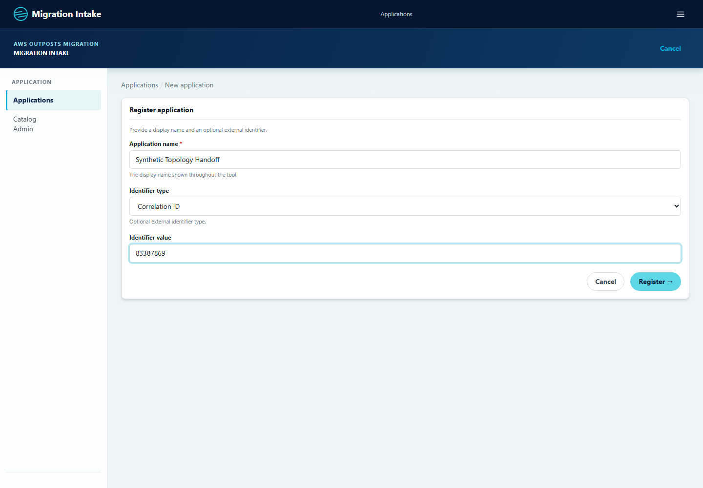
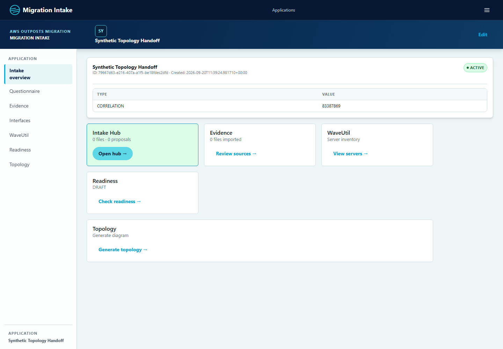
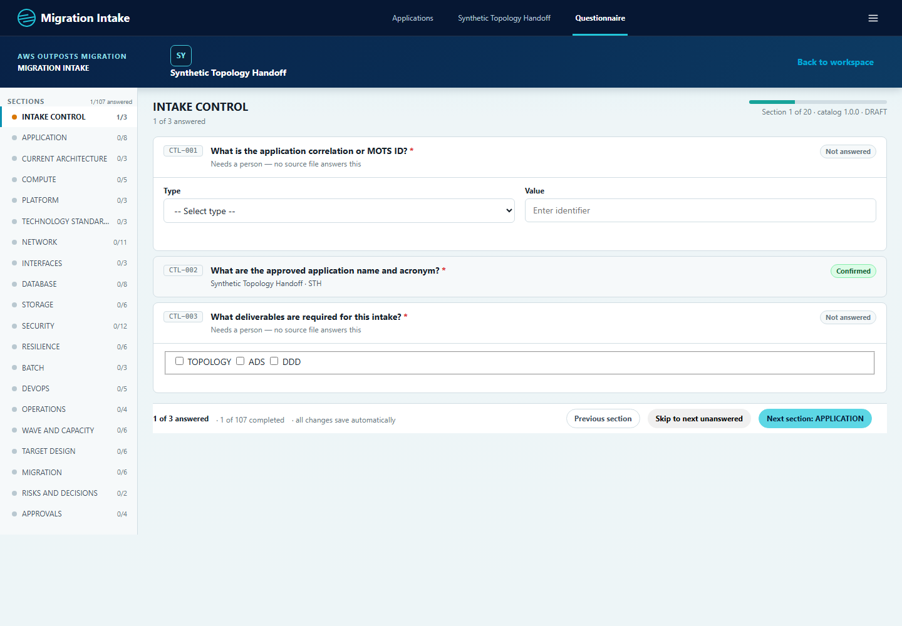
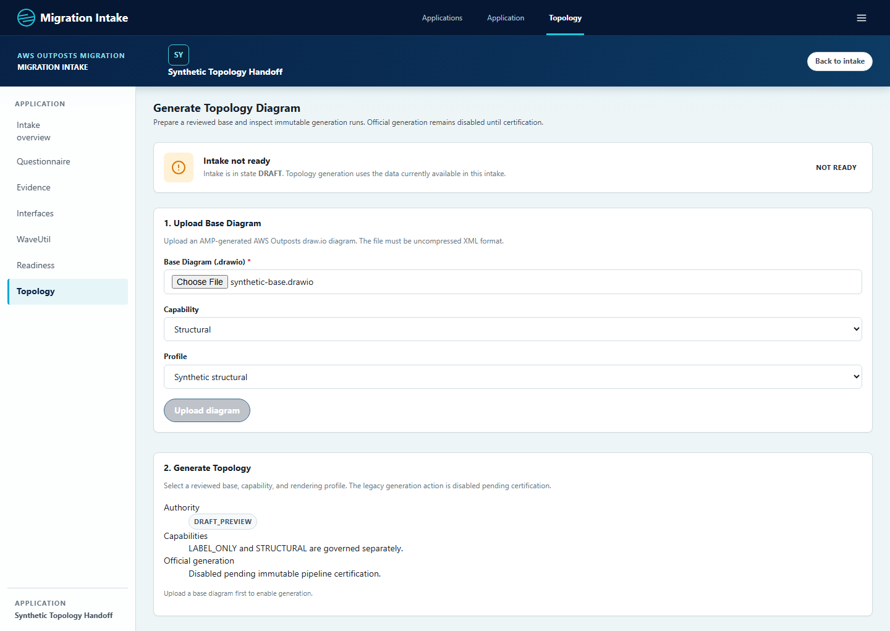
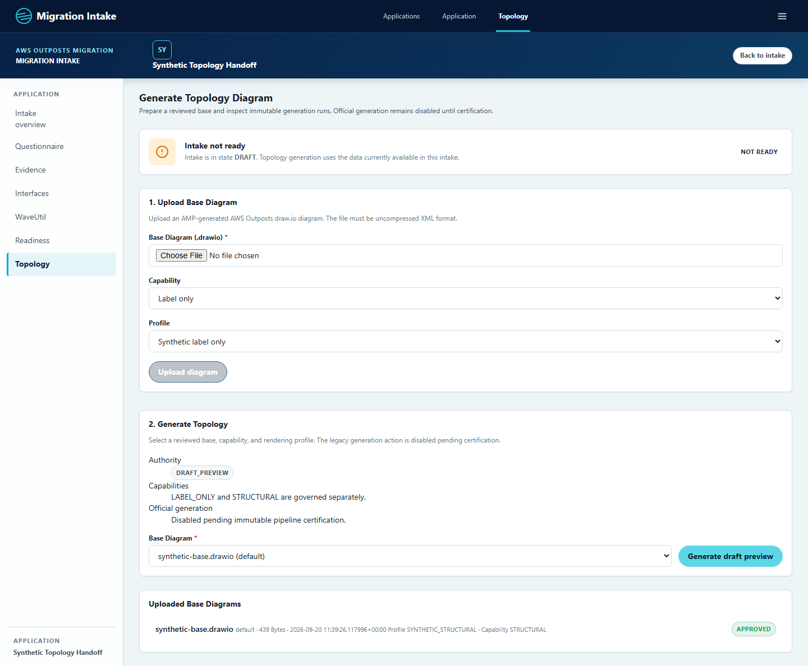
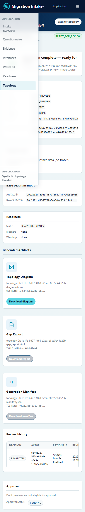
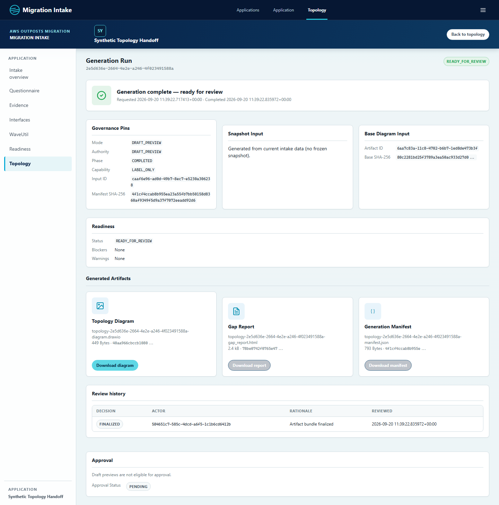

1. Fresh-Agent Brief
Goal: produce a reviewed, reproducible Draw.io diagram from canonical intake data. Evidence imports propose candidates; people review them; governed generation pins its source, base, profile and policy. Preview output is not an approved design.
Resume order: read STATE.md, this section and the findings, then only the source files needed for the selected next task. The detailed plan is the design contract, but its opening C8 next-step instructions are historical.
AWS_OUTPOST_TOPOLOGY_GENERATION_ENABLED=false and AWS_OUTPOST_LLM_ENABLED=false. Use an explicitly configured disposable database and synthetic evidence. Never inherit the repository's private environment accidentally.- Python requirement is
>=3.13,<3.14; the repository's default interpreter is not a verified substitute. - The working tree is dirty and includes untracked topology review/principal/browser files. A commit SHA alone does not identify the implementation under review. Preserve all existing work; do not reset, commit or push without authorization.
- The current pilot route supports one environment/site and maps only
CTL-002application name/acronym. It is not a complete infrastructure graph generator. - The governed upload endpoint performs upload, compatibility and approval in one request. Explicit base-review UX remains a design gap.
- SQLite tests cannot certify Oracle DDL, locking, connection mode or shared-storage durability.
2. Evidence and Session Ledger
Review scope: the topology design, canonical capture, projection, profiles, base governance, rendering, persistence, artifact review/download, operator UI and their immediate import/export boundaries. This is not an exhaustive audit of every project subsystem.
Checkout: the session began from 9be8b2929d6cb767a010b9c6d361fca6bc84889a plus substantial uncommitted and untracked work. The deliverable is the working tree, not that commit alone. Record git status --short and git diff --stat before continuing. No commit, push, Oracle migration or production activation was performed for this handoff.
| Work delivered during these sessions | Evidence and limits |
|---|---|
| Strict topology v3 contracts, canonical hashes, scoped selection, typed projection, packaged profiles and bounded XML parsing. | Focused contract/profile/parser tests; historical C0-C7 ledger remains in STATE.md. Do not interpret those entries as complete cross-database certification. |
| Base compatibility and governance; immutable preview captures and inputs; CAS/lease reservation; verified artifact finalization; recovery inventory. | Migrations through 0021 and synthetic persistence tests. Oracle concurrency, storage durability and restart/replay remain separate gates. |
Governed DRAFT_PREVIEW route and capability/profile UI; synthetic structural renderer; receipt-checked diagram/report/manifest downloads. | Earlier focused run: 291 tests, including four browser cases. STRUCTURAL currently proves a profile-defined generated cell, not full infrastructure graph generation. |
| APP-002 contact-acceptance repair. | Legacy string entries become name objects with explicit UNKNOWN roles; 62 focused tests passed in the earlier repair session. Existing string candidates are handled at acceptance without reimport. Remaining data-quality risks are listed below. |
| UI-first handoff capture journey for both capabilities. | Playwright creates synthetic applications/intakes, confirms CTL-002, uploads a base, generates previews and downloads all three artifacts. Fourteen screenshots and two artifact bundles are included. |
| Review-session regression baseline. | The preceding execution reported 366 passed for its selected regression slice, not the full project suite. Fresh verification performed when completing this handoff is recorded in the acceptance section. |
Evidence hygiene: captures use generated names and identifiers only. The included synthetic intake workbook was built from the repository fixture, not from a client workbook. Existing user intake records and port 8001 are not part of the screenshot harness.
3. Review Findings
Recommendation: continue isolated synthetic preview testing, but do not activate official generation. P1 below means a blocker to official release, not a claim that the disabled official HTTP path is currently exploitable in production. The review records defects rather than silently repairing them as part of this documentation task.
| Priority / ID | Finding and evidence | Required repair and proof |
|---|---|---|
| P1 / F01 Reproduced | Approval does not verify the complete artifact bundle. TopologyReviewService._validate_reviewable_run checks that DIAGRAM/GAP_REPORT/MANIFEST rows exist, but retrieves only the manifest. Synthetic probes returning corrupt bytes for the diagram or report still returned APPROVED. Individual downloads separately reject receipt mismatches. | Re-read and verify all artifact bytes before approval; validate the strict manifest and its complete run/input/selection/profile/artifact bindings, not just result_status. Add missing/corrupt/tampered bundle tests. A download denial after an approval is not a valid substitute for approval integrity. |
| P1 / F02 Reproduced | Approval ignores current base eligibility. The same review method compares selected run/input pins but does not reload the base review/lifecycle state. Changing the fixture base to REJECTED still allowed APPROVED. | Revalidate approved, active, nonsuperseded base and compatibility/profile/policy bindings in the review transaction. Add rejection/supersession races and atomic audit/CAS checks. |
| P1 / F03 Reproduced | Blank warning explanations pass review. The method checks only whether each warning key exists in issue_decisions. A dictionary containing a warning key with a whitespace value still produced APPROVED. | Require nonblank, typed issue-level rationales and reject unknown issue IDs. Test missing, blank, whitespace, wrong-type and valid rationales. Preserve warning decisions in the append-only review record. |
| P1 / F04 Code observation | Upload silently performs base approval. upload_governed_base_diagram commits upload, compatibility and approval in three sessions, using a hardcoded rationale. The user clicks Upload diagram, not an explicit approval action. Requiring upload/review capabilities does not supply an informed decision. | Separate upload, compatibility display and authorized approve/reject controls. Bind the decision to reviewed pins and row version; record the operator's rationale. Self-approval is allowed by the design, but must be explicit. Failed later steps currently leave earlier committed base records; surface those states and recovery actions. |
| P1 / F05 Code observation | Normal freeze and governed official input use different schema generations. SnapshotService uses application.snapshots with SCHEMA_VERSION 2.0.0; run_official explicitly requires 3.0.0. Ordinary UI freeze is not proof that an input usable by the v3 runner exists. | Deliver an explicit, tested v3 freeze/publication boundary. Preserve historical snapshots; do not relabel legacy JSON as v3 or fall back to live answers. Prove UI freeze to persisted v3 snapshot to official runner before route activation. |
| P1 / F06 Code observation | The official HTTP switch does not finish the migration. The generate endpoint still calls TopologyGenerationService behind the feature gate. The governed pilot route has only CTL-002 mappings, one environment/site/page and placeholder layout/result policy hashes. STRUCTURAL currently creates a profile-defined application label, not a full VPC/subnet/compute/interface graph. | Wire the approved official runner only after production mappings, real policy digests, region/component inventory and multi-context graph layout are certified. Do not turn the feature flag on to discover the remaining gaps. |
| P1 / F07 Code observation | Governed run identity is incomplete for downstream export. reserve_generation_run does not copy input.snapshot_id to GenerationRun. get_approved_official_run_for_snapshot filters by that column, then selects the newest row. The reservation/export paths therefore do not establish the exact intended governed result. | Persist and verify snapshot identity; define explicit selection across capability/context/base/profile instead of arbitrary newest-match behavior. Test real runner output through ExportService; hand-seeded export fixtures alone cannot prove the contract. |
| P1 / F08 Code observation | The Oracle test harness is unsafe to run blindly. clean_oracle_engine drops all schema tables before and after each test; rejecting SYS/SYSTEM does not protect another valuable schema. Its fresh-schema assertion still expects 0010. Alembic prioritizes AWS_OUTPOST_DATABASE_URL over a programmatic URL. | Use a dedicated disposable schema and an explicit identity allowlist/opt-in before destructive tests. Align the migration and fixture targets; update head assertions and add 0017-to-head topology preservation coverage. Never point these tests at the Oracle UI schema or PERF. |
| P2 / F09 Code observation | The APP-002 crash repair leaves data-quality risks. parse_people_list emits UNKNOWN roles and splits comma-delimited names; this can split a surname-first name. _merge_collection_candidate skips non-dictionary/non-string entries and rebuilds collections from accepted candidate payloads, not the current edited answer. | Define ambiguity handling, preserve raw provenance and reject unsupported entries visibly. Test manually edited/current people, accept-with-edit, duplicates, primary/role differences and surname-first names. UNKNOWN is missing role information, not an architect-approved assignment. |
| P2 / F10 Visual evidence | Mobile run details are obstructed. The captured 390px viewport shows the open navigation panel covering content and cramped header text. A no-horizontal-overflow assertion does not detect this. | Test menu open/closed behavior, focus, hit targets and unobscured content at mobile sizes. The handoff preserves the failing screenshot rather than cropping away the defect. |
| P2 / F11 Test boundary | Passing preview tests do not certify official or Oracle behavior. The browser fixture starts its own SQLite server, and the review fixture can approve a minimally populated input/manifest. Production trusted identity, Oracle locking/races, installed-wheel execution, durable storage and recovery replay remain uncertified. | Build cross-module tests from real captured inputs; add an explicitly Oracle-backed browser fixture and dialect concurrency tests. Record skipped Oracle tests as unexecuted, never as green certification. |
Reproduction Notes
The four approval probes used seed_reviewable_bundle from the review-service test module with a fresh in-memory SQLite database for each case. Corrupt reads were simulated using a patched storage retrieve method; the rejected-base case changed only the fixture base state; the warning case supplied {"SYNTHETIC_WARNING": " "}. All returned APPROVED. This establishes missing checks in the service contract; it is not a claim that ordinary preview users can approve previews, which the service correctly rejects.
Open decisions: named catalog/template/security/operations owners; trusted production principal; supported Oracle/server/client combination; shared storage and backup/restore contract; approved mapping registry; exact generated-region inventory; official artifact selection for ADS/DDD. These require decisions and certification, not guessed defaults.
4. Pipeline Architecture
The architectural direction is sound: isolate evidence acquisition from canonical truth, freeze an immutable input before rendering, and make every release decision independently auditable. The main remaining risk is integration between otherwise well-tested modules.
- 1. EvidenceWorkbook/source bytes and locators. Importers produce proposals only.
- 2. Canonical intakeReviewer decisions create typed answer revisions; confirmation is separate.
- 3. CapturePreview capture or approved v3 snapshot pins content and scope.
- 4. ProjectionTyped selectors map canonical fields into scoped topology facts.
- 5. Governed inputBase/profile/compatibility/policies plus projection form immutable TopologyInput.
- 6. RenderingPure deterministic LABEL_ONLY or STRUCTURAL mutation with protected content retained.
- 7. FinalizationStore/read back diagram, report and manifest; commit verified receipts.
- 8. Review and deliveryPreview downloads remain non-authoritative; official approval is a separate gated decision.
Ownership and Contracts
| Boundary | Owner | Contract / important limitation |
|---|---|---|
| HTTP and UI | web/routes/topology.py and web/templates/topology | Resolve application/intake scope, capability and CSRF before service work. Foreign objects return 404, missing authority 403, expected governance conflicts 409. Templates display persisted truth; they must not invent workflow status. |
| Base lifecycle | application/services/base_diagram.py | Upload bytes; inspect real pages/cells against trusted packaged profile; persist compatibility; approve/reject/supersede using pinned state and CAS. UI currently shortcuts the explicit review step (F04). |
| Strict contracts | topology/contracts.py and topology/projection.py | Versioned canonical JSON, SHA-256 identity, closed fields, typed values, provenance and scope. Missing data is UNKNOWN/unresolved, not fabricated. Compare like-for-like facts only. |
| Profiles and XML | topology/profiles/loader.py; topology/compatibility.py; topology/renderer/core.py | Package manifest and component pins, confined paths, bounded XML and slot cardinality. Known unsafe/compressed/entity-bearing XML fails closed. Successful XML parsing alone does not establish semantic compatibility. |
| Orchestration | application/services/topology_runner.py | Capture, project, pin immutable input, reserve run, execute from reloaded input under lease. PersistedLabelRenderer dispatches both capabilities despite its name. No new live-answer read is permitted during execution. |
| Persistence | persistence/models_topology.py and repositories/topology.py | Capture/input/compatibility rows, run reservation keys, row versions, attempts, leases, append-only reviews and artifact metadata. Uniqueness constraints and CAS are correctness controls, not merely performance optimizations. |
| Storage and completion | topology_finalization.py and storage/filesystem.py | Content-addressed bytes plus independently verified size/hash receipts. Partial writes must never imply a complete run. Filesystem writes and database commits are not one distributed transaction. |
| Recovery/review/export | topology_recovery.py; topology_review.py; export.py | Expired-lease recovery uses immutable identity; no source re-reading or automatic deletion. Approval/download/export have distinct checks; F01-F03/F07 prevent official certification. |
Transaction Sequence
- Capture boundary: preview acquires the intake writer boundary and materializes a v3 capture with answer revisions, catalog identity, actor, time and content_epoch. It commits the capture before later projection/rendering. Official mode instead loads a persisted hash-validated v3 frozen snapshot. Capture and T1 are distinct boundaries; do not assume one transaction covers both.
- T1 reservation: validate base and compatibility; produce the immutable projection/input; reserve the semantic input identity, run and audit atomically. Duplicate semantic requests converge on attempt 0; reasoned reruns allocate later attempts. The repository flushes the run before its reservation key to satisfy foreign keys.
- Render outside the transaction: acquire a lease/fencing token, reload the strict input, verify stored base/profile pins and call the renderer. A stale worker cannot advance the run using an old token or row version. Read-only rendering must not call arbitrary importers or an LLM.
- T2 finalization: write all three objects, read them back, verify bytes/receipts/status, advance STORING to VERIFYING to COMPLETED, and commit artifact metadata plus audit/review atomically under lease/CAS. Failure records retain the original failed phase; orphan objects remain diagnostic until governed reconciliation.
- Human review: a separate transaction should revalidate authoritative input, eligible base, full artifact bundle, issues and actor permissions, then append an approval/rejection. The current incomplete revalidation is documented in F01-F03.
Scope, Mutation and Reproducibility
ScopeSelection identifies application, intake, environment/site contexts and view variant. The design targets one combined overview with per-context details, including typed resources and relationships. The current web pilot restricts selection to one context and one page. Do not flatten repeated resource names across sites or environments when expanding it.
LABEL_ONLY replaces declared matching labels and must not create/delete topology structure. STRUCTURAL additionally permits declared generated cells inside designated containers; existing protected/manual content stays outside that authority. The current synthetic structural profile uses the page-layer container and a fixed application-label cell. It is a narrow mutation proof, not a production AWS Outposts template.
Reproducibility depends on source/capture, catalog, projection, selection, base bytes, profile component/manifest, generator and policy identities. Distinguish attempted writes from effective changes; do not accept file-size changes as proof of topology mutation. Whole-file XML bytes may change during serialization even when an individual manual element is preserved. Tests compare the protected element and effective generated cells, not a misleading global byte-equality claim.
5. UI and Status Workflow
Working pilot: register application → create intake → save/confirm CTL-002 → choose capability/profile → upload synthetic base → generate draft preview → inspect run and download bundle. No freeze or official approval is necessary for this path.
| Stage | User action | Stored effect and observable result |
|---|---|---|
| Application | Register a synthetic display name and CORRELATION identifier. | Application identity is created. Display name alone is not a sufficient workbook identity binding. |
| Intake | Create intake against the published catalog. | DRAFT intake pins catalog release. Do not repin a populated intake as an informal repair. |
| Optional import | Upload the included legacy workbook through Evidence/Sources. | Source bytes and import findings create PROPOSED candidates. Match application correlation before accepting; another application's workbook must be quarantined/scoped out. |
| Candidate review | Accept, accept with edit, reject or defer with appropriate rationale. | Acceptance writes an answer revision and evidence link; it does not prove that every application fact is confirmed or that an intake is ready to freeze. |
| Canonical confirmation | Enter CTL-002 name/acronym, wait for saved, reload and explicitly Confirm. | Confirmed TEXT_PAIR provides application.name from first and application.acronym from second. Merely typing into an unsaved control is not a successful capture prerequisite. |
| Base upload | Choose LABEL_ONLY/SYNTHETIC_LABEL_ONLY or STRUCTURAL/SYNTHETIC_STRUCTURAL; use PROD, SITE_A, Overview for the synthetic case. | Current pilot: upload commits DRAFT, compatibility check commits COMPATIBLE, then the same request commits APPROVED with a fixed rationale. Required future workflow: show compatibility findings and await an explicit reviewer decision. |
| Preview request | Select the compatible base and click Generate draft preview. | Capture and immutable TopologyInput are persisted; a leased run generates and finalizes its bundle. UI redirects to scoped run detail. Conflicting scope/pins or missing required data must not produce a false ready result. |
| Inspect and download | Read governance pins, blockers/warnings and review history; download diagram, report and manifest. | Mode and authority are DRAFT_PREVIEW; phase COMPLETED; result can be READY_FOR_REVIEW or GENERATED_WITH_GAPS. Preview downloads are receipt-checked. The approval area says previews are not eligible. |
| Official completion, future | Freeze v3, generate exact reviewed selection, resolve issues, approve, optionally supersede predecessor, export approved result. | Currently blocked by findings and release gates. This is the intended end-to-end production workflow, not a runnable promise for the current UI. |
Do Not Collapse These Statuses
- Authority / mode
- LEGACY_UNPINNED identifies historical untrusted results; DRAFT_PREVIEW identifies captured but non-authoritative output; OFFICIAL_SNAPSHOT identifies the official source path. A green readiness badge cannot change authority.
- Base review/lifecycle
- DRAFT → COMPATIBLE → APPROVED are separate decisions in the service design. Rejected/superseded bases must not silently become eligible. Compatibility proves template fit, not source readiness.
- Execution phase
- PENDING, CAPTURING, RENDERING, STORING, VERIFYING, COMPLETED and FAILED are the durable vocabulary. A particular run need not visit every phase label; consult transition code. COMPLETED means bundle finalization, not human approval.
- Technical result
- READY_FOR_REVIEW, GENERATED_WITH_GAPS and FAILED describe result quality. Readiness also has its own READY/NOT_READY/BLOCKED vocabulary. Read blockers and warnings rather than inferring semantics from colour.
- Human approval
- PENDING → APPROVED or REJECTED; supersession records a successor and history. Preview runs remain ineligible even if their approval field displays PENDING. FINALIZED in review history records a system event, not architect approval.
Common UI Failures
- 403: check capabilities and CSRF; refresh after a local restart that changed the CSRF signing secret. Do not remove security checks to make tests pass.
- 404: verify application/intake/base/run identity. Cross-scope denial is intentional.
- 409: inspect the bounded response detail and run/base status for stale row version, missing pins, incompatible selection or unresolved mandatory facts.
- 413: upload exceeds the configured topology limit (default 10 MiB). Use the small supplied uncompressed Draw.io fixture.
- 503 from generate: expected while the official/legacy route gate is off. Use the distinct preview action.
- 500: not an acceptable validation outcome. Preserve a sanitized traceback and reproduce with synthetic data before retrying a state-changing request.
6. SQLite Runbook
Objective: demonstrate the current preview workflow from visible UI controls against a fresh migration-backed database, then test failure paths. Do this before attempting Oracle parity. Do not reuse client records, replace the user's database or accept existing proposals on their behalf.
A. Establish the Checkout and Interpreter
Run in PowerShell. Keep this setup terminal open for the manual server. Use a different terminal for the automated harness. A fresh Python 3.13 virtual environment is preferable to the broken historical repository .venv; the earlier session's external environment is only a local convenience, not a dependency to copy to another developer.
$repo = 'C:\GitHub\aws_diag_v4_1\aws_diag_v4'
Set-Location $repo
git rev-parse HEAD
git status --short
git diff --stat
$venv = Join-Path $env:TEMP ('topology-dev-' + [guid]::NewGuid().ToString('N'))
py -3.13 -m venv $venv
if ($LASTEXITCODE -ne 0) { throw 'Python 3.13 environment creation failed' }
$py = Join-Path $venv 'Scripts\python.exe'
& $py -m pip install -e '.[dev,browser]'
if ($LASTEXITCODE -ne 0) { throw 'Dependency installation failed' }
& $py -m playwright install chromium
if ($LASTEXITCODE -ne 0) { throw 'Chromium installation failed' }
& $py -c "import sys, migration_intake.main; print(sys.executable); print(sys.version); print(migration_intake.main.__file__)"Expected module path is under this checkout's src/migration_intake. On corporate networks, use approved package indexes, proxies and trusted CAs; do not disable TLS verification. If installation fails, stop and resolve the environment instead of silently using Python 3.12.
B. Pin Disposable Runtime Settings
$runtime = Join-Path $env:TEMP ('topology-ui-' + [guid]::NewGuid().ToString('N'))
$evidence = Join-Path $runtime 'evidence'
New-Item -ItemType Directory -Force -Path $evidence | Out-Null
$db = Join-Path $runtime 'app.sqlite3'
$url = 'sqlite:///' + $db.Replace('\', '/')
$env:AWS_OUTPOST_DATABASE_URL = $url
$env:DATABASE_URL = $url
$env:AWS_OUTPOST_EVIDENCE_ROOT = $evidence
$env:EVIDENCE_ROOT = $evidence
$env:AWS_OUTPOST_APP_ENV = 'local'
$env:APP_ENV = 'local'
$env:AWS_OUTPOST_ALLOW_LOCAL_REMOTE_DATABASE = 'false'
$env:AWS_OUTPOST_ACTOR_ID = [guid]::NewGuid().ToString()
$env:ACTOR_ID = $env:AWS_OUTPOST_ACTOR_ID
$env:AWS_OUTPOST_ACTOR_DISPLAY_NAME = 'Synthetic Topology Reviewer'
$env:ACTOR_DISPLAY_NAME = $env:AWS_OUTPOST_ACTOR_DISPLAY_NAME
$env:AWS_OUTPOST_CSRF_SECRET = [guid]::NewGuid().ToString('N') + [guid]::NewGuid().ToString('N')
$env:CSRF_SECRET = $env:AWS_OUTPOST_CSRF_SECRET
$env:AWS_OUTPOST_TOPOLOGY_GENERATION_ENABLED = 'false'
$env:TOPOLOGY_GENERATION_ENABLED = 'false'
$env:AWS_OUTPOST_LLM_ENABLED = 'false'
$env:LLM_ENABLED = 'false'
$env:AWS_OUTPOST_LLM_OUTBOUND_ENABLED = 'false'
$env:LLM_OUTBOUND_ENABLED = 'false'
$env:AWS_OUTPOST_LLM_PROVIDER = 'mock'
$env:AWS_OUTPOST_LLM_PROFILE = 'disabled'
$env:AWS_OUTPOST_LLM_BASE_URL = 'https://example.invalid/v1'
$env:AWS_OUTPOST_LLM_API_TOKEN = 'synthetic-disabled-not-a-credential'
Remove-Item Env:ORACLE_TEST_URL -ErrorAction SilentlyContinue
& $py -c "from migration_intake.config import Settings; s=Settings(); assert s.effective_database_url.startswith('sqlite:///'); assert not s.topology_generation_enabled and not s.llm_enabled and not s.llm_outbound_enabled; print('SQLite and disabled-feature settings verified'); print(s.evidence_root)"The disabled provider and outbound gate prohibit application LLM calls; they do not constitute an OS network sandbox. These explicit process variables take precedence over dotenv settings. Never dump the complete settings object or environment because it may contain credentials. Create the evidence directory before readiness checks.
C. Migrate, Publish and Start
& $py -m alembic heads
& $py -m alembic upgrade 0021
if ($LASTEXITCODE -ne 0) { throw 'Migration failed: do not start the server' }
& $py -m alembic current
& $py -m migration_intake.catalog.bootstrap
if ($LASTEXITCODE -ne 0) { throw 'Catalog publication failed' }
$port = 8002
if (Get-NetTCPConnection -LocalPort $port -State Listen -ErrorAction SilentlyContinue) {
throw 'Port occupied: select another unused port; do not stop another session'
}
& $py -m uvicorn migration_intake.main:get_app --factory --host 127.0.0.1 --port $portAt this handoff the single reviewed head is 0021. If heads reports a newer or multiple revision heads, stop and review that change before proceeding. Explicit upgrade to 0021 prevents a future checkout from silently executing unreviewed DDL. Bootstrap is an explicit publication operation on this disposable database; startup itself is read-only for catalog repair. Verify the packaged 1.0.0 release, nonzero questions and allowed options rather than relying on old question-count claims.
Uvicorn stays in the foreground without reload. Open http://127.0.0.1:8002 (or your chosen port). In another terminal:
Invoke-RestMethod 'http://127.0.0.1:8002/health/live'
Invoke-RestMethod 'http://127.0.0.1:8002/health/ready'Both must be HTTP 200; readiness must report database/schema/storage/catalog all true. Health alone does not identify the checkout or database: retain the interpreter/module path, launch directory, safe database filename, evidence root, commit and dirty-tree summary from setup. For a restart, stop only this process with Ctrl+C and reuse the same terminal/settings and database; do not rerun step B and accidentally create a new intake database. Refresh the browser if CSRF settings changed.
D. Execute the UI-First Acceptance Journey
- Register Synthetic Topology Handoff with identifier type CORRELATION and value 88002026 if testing the included workbook. Create a new intake against the published catalog. A repeated identifier should not create a duplicate application.
- Optional import check: open Evidence/Sources and upload synthetic-intake.xlsx. Inspect the import summary, identity applicability and candidate proposals. Review APP-002 fictional contacts; Accept must no longer return 500. Read the saved structured contact values and UNKNOWN roles. Do not accept every candidate automatically or use this optional import as proof of full catalog coverage.
- In INTAKE CONTROL, set CTL-002 first field to Synthetic Topology Handoff and second to STH. Wait for the saved indicator, reload to confirm persistence, expand the review controls and Confirm. Acceptance and confirmation are separate steps.
- Open Topology. First select LABEL_ONLY plus SYNTHETIC_LABEL_ONLY, environment PROD, site SITE_A, page Overview, and upload synthetic-base.drawio. Current UI immediately shows APPROVED; record this known design gap instead of describing it as manual approval.
- Select that base and generate draft preview. Inspect the scoped run page, mode/authority, phase, readiness, input/manifest pins and FINALIZED history. Draft previews must remain ineligible for official approval.
- Download diagram, report and manifest. Verify hashes against the run receipts; inspect cell 2 for the synthetic application name, unchanged manual cell and absence of structural-application-label. Open Draw.io locally to check framing and text. Do not upload private diagrams to an external viewer.
- Repeat upload/preview for STRUCTURAL plus SYNTHETIC_STRUCTURAL. Select the new base explicitly when multiple choices exist. Verify the generated application-label cell, populated original label, unchanged manual element, three downloads and DRAFT_PREVIEW manifest.
- Edit and confirm CTL-002, then create another preview. The old run's input and downloadable diagram must not change. Repeating a request for the same exact semantic input should follow reservation/idempotency rules; a changed input must not reuse stale output.
- Exercise negatives: mismatched capability/profile, missing Overview marker/container, missing mandatory confirmed name, foreign intake/run URL, stale review version, invalid CSRF, oversize/malformed XML. Capture expected controlled denials, not 500s. Official generate remains 503.
- Close/reopen the local server using the same settings. Verify the run and receipts still work. Capture desktop/mobile screenshots, noting F10. Record outcomes and retained synthetic artifact hashes; no release sign-off follows from this alone.
E. Automated Regression and Capture
Run in a separate test terminal with a clean, explicitly synthetic environment. server_env overwrites the database aliases but uses unprefixed actor/evidence/app/CSRF values. Inherited prefixed counterparts take precedence in Settings and can cause wrong actors, foreign-key errors or storage readiness failure. Remove those prefixed counterparts in the test process, and confirm the repository .env does not reintroduce them; otherwise first harden the fixture to set both aliases consistently. Do not alter the manual UI process environment or private .env as an informal workaround.
Remove-Item Env:AWS_OUTPOST_ACTOR_ID, Env:AWS_OUTPOST_ACTOR_DISPLAY_NAME, Env:AWS_OUTPOST_EVIDENCE_ROOT, Env:AWS_OUTPOST_APP_ENV, Env:AWS_OUTPOST_CSRF_SECRET -ErrorAction SilentlyContinue
Remove-Item Env:ORACLE_TEST_URL -ErrorAction SilentlyContinue
$env:AWS_OUTPOST_TOPOLOGY_GENERATION_ENABLED = 'false'
$env:AWS_OUTPOST_LLM_ENABLED = 'false'
$env:AWS_OUTPOST_LLM_OUTBOUND_ENABLED = 'false'
$env:AWS_OUTPOST_LLM_PROVIDER = 'mock'
$env:AWS_OUTPOST_LLM_PROFILE = 'disabled'
& $py -m pytest tests/browser/test_topology_workflow.py -q
if ($LASTEXITCODE -ne 0) { throw 'Browser verification failed' }This suite launches its own server on an available port, upgrades its own SQLite database and publishes the catalog. It does not test port 8001/8002 or use Oracle. Six cases are expected at this checkout, including the two parameterized UI-first handoff cases. The visible journey creates the application through forms; some older tests seed state and submit requests directly.
$env:TOPOLOGY_HANDOFF_SCREENSHOTS = Join-Path $env:TEMP ('topology-captures-' + [guid]::NewGuid().ToString('N'))
& $py -m pytest tests/browser/test_topology_workflow.py -k handoff_click_journey -q
if ($LASTEXITCODE -ne 0) { throw 'Capture journey failed' }
Remove-Item Env:TOPOLOGY_HANDOFF_SCREENSHOTSThe capture path receives seven screenshots per capability, Draw.io/report/manifest downloads, receipt hashes and the synthetic base. Use a fresh path; do not overwrite the handoff evidence on every run. Screenshots can pass while exposing layout defects, so inspect them visually.
& $py -m pytest tests/unit/topology tests/integration/web/test_topology_routes.py tests/browser/test_topology_workflow.py tests/unit/application/test_candidate_service.py tests/unit/imports/test_legacy_value_transformers.py tests/unit/application/test_export_service.py tests/web/test_principal_boundary.py -qThe final verification of that slice used the supported external Python 3.13 environment, a disposable cwd, explicit synthetic settings and fixture-owned browser identity/storage: 366 passed. Earlier retry failures were setup mistakes (nonexistent evidence directory, then actor alias conflict), resolved before the final run. No Oracle connection was involved.
7. Synthetic UI Walkthrough
These are actual Playwright captures from the isolated application, not mockups. The automated journey uses a fresh random correlation ID; the downloadable workbook uses fixed ID 88002026. Do not upload that workbook into a random-ID screenshot intake and expect identity matching. Run IDs and timestamps in screenshots are historical evidence, not links to your current database.
{kind=link}

{kind=link}

{kind=link}

{kind=link}

{kind=link}

{kind=link}
Mobile defect evidence and LABEL_ONLY comparison
{kind=link}

{kind=link}

Other LABEL_ONLY captures: creation, workspace, confirmation, upload, base state, mobile.
{kind=link}
{kind=link}
{kind=link}
{kind=link}
{kind=link}
{kind=link}
Downloadable Synthetic Evidence
| Purpose | Files | What to verify |
|---|---|---|
| Repeat the manual test | Seven-sheet legacy workbook Uncompressed base | Workbook correlation 88002026; synthetic name/acronym; fictional contacts. Base contains placeholder cell 2 and protected manual cell. |
| LABEL_ONLY evidence | Diagram / Report / Manifest / Capture receipts | Cell 2 is populated; manual cell is preserved; no structural generated label. |
| STRUCTURAL evidence | Diagram / Report / Manifest / Capture receipts | Includes structural-application-label; protected manual cell remains identical at element level. All downloaded file digests match the capture receipts. |
Keep the asset directory beside this HTML when sharing it internally. The handoff uses relative links, local images and no CDN, analytics, external fonts or client evidence.
8. Oracle Runbook
A. Define What Is Being Migrated
Schema deployment means applying the same reviewed Alembic revision chain to Oracle and recreating the synthetic workflow there. It does not copy SQLite rows. Data migration is a separate governed project: transfer identifiers/revisions/provenance, canonical bytes/hashes, catalog identity, input/run/base relationships and content-addressed files, with reconciliation and rollback. A SQLite .db file cannot be mounted as an Oracle database.
For this next task, first certify an empty Oracle schema and a staged schema upgrade with synthetic historical data; then repeat the UI preview workflow. Leave existing SQLite and client records untouched. Do not combine old DBA table-create scripts with Alembic or stamp a schema to head to bypass failures.
B. Provision and Pin the Connection
- Ask the DBA for two isolated schemas: one disposable migration/contract-test schema and one longer-lived synthetic UI schema. Record owner, database/service, grants, quota, retention and permission to reset the disposable schema. Give neither schema administrative privileges.
- Confirm Oracle server version, python-oracledb version and approved connection mode. Thin mode may suffice; use the approved Instant Client path when thick mode is required. Application startup and Alembic must initialize the same mode. Several historical tests instantiate engines directly and may need explicit thick-mode setup.
- Provision the SQLAlchemy URL securely as a process variable, with driver oracle+oracledb and service_name appropriate to the approved database. Do not include a real URL in this document. Credentials containing reserved characters must be encoded using SQLAlchemy URL APIs, not manual concatenation.
- Allocate a fresh Oracle-specific evidence directory; topology artifact files are not stored inside Oracle. For multi-instance testing, use the approved shared storage design rather than one developer's temporary directory.
- Pin expected schema identity separately and verify it before every migration/test. A successful connection to the wrong schema is a failed safety gate.
# URL already supplied through an approved secure mechanism; never echo it.
if (-not $env:AWS_OUTPOST_DATABASE_URL) { throw 'Approved Oracle URL not supplied' }
$env:DATABASE_URL = $env:AWS_OUTPOST_DATABASE_URL
$env:EXPECTED_ORACLE_SCHEMA = 'YOUR_APPROVED_DISPOSABLE_SCHEMA'
$env:AWS_OUTPOST_APP_ENV = 'local'
$env:APP_ENV = 'local'
$env:AWS_OUTPOST_ALLOW_LOCAL_REMOTE_DATABASE = 'true'
$env:AWS_OUTPOST_TOPOLOGY_GENERATION_ENABLED = 'false'
$env:AWS_OUTPOST_LLM_ENABLED = 'false'
$env:AWS_OUTPOST_LLM_OUTBOUND_ENABLED = 'false'
$env:AWS_OUTPOST_LLM_PROVIDER = 'mock'
$env:AWS_OUTPOST_LLM_PROFILE = 'disabled'
$oracleRuntime = Join-Path $env:TEMP ('topology-oracle-ui-' + [guid]::NewGuid().ToString('N'))
$env:AWS_OUTPOST_EVIDENCE_ROOT = Join-Path $oracleRuntime 'evidence'
$env:EVIDENCE_ROOT = $env:AWS_OUTPOST_EVIDENCE_ROOT
New-Item -ItemType Directory -Force -Path $env:AWS_OUTPOST_EVIDENCE_ROOT | Out-Null
# Retain explicit synthetic actor and local CSRF values from the local setup.
# Set AWS_OUTPOST_ORACLE_CLIENT_LIB_DIR only to an approved installed client when needed.The remote-database override is for this explicitly authorized local test only. A deployed shared_test/production environment has a different policy and must not enable that override. Keep the official feature gate off on both dialects.
C. Read-Only Identity Preflight
Run in the same environment that will run Alembic. This checks the actual server identity without printing the URL or password.
@'
import os
from pathlib import Path
from sqlalchemy import text
from sqlalchemy.engine import make_url
from migration_intake.persistence.database import configure_oracle_client, create_engine_from_url
url = os.environ["AWS_OUTPOST_DATABASE_URL"]
assert make_url(url).get_backend_name() == "oracle", "Not an Oracle URL"
expected = os.environ["EXPECTED_ORACLE_SCHEMA"].upper()
assert expected not in {"SYS", "SYSTEM", "YOUR_APPROVED_DISPOSABLE_SCHEMA"}
client = os.environ.get("AWS_OUTPOST_ORACLE_CLIENT_LIB_DIR")
configure_oracle_client(Path(client) if client else None)
engine = create_engine_from_url(url)
with engine.connect() as connection:
identity = connection.execute(text("SELECT USER, SYS_CONTEXT('USERENV','CURRENT_SCHEMA'), SYS_CONTEXT('USERENV','DB_NAME') FROM dual")).one()
assert identity[0].upper() == expected and identity[1].upper() == expected, "Wrong Oracle schema"
print("Verified user/current schema/database:", tuple(identity))
print("Existing table count:", connection.scalar(text("SELECT COUNT(*) FROM user_tables")))
engine.dispose()
'@ | & $py -
if ($LASTEXITCODE -ne 0) { throw 'Oracle identity preflight failed' }An unexpected nonempty schema must be investigated, not emptied. Retain only sanitized identity evidence. Migration env.py prioritizes AWS_OUTPOST_DATABASE_URL over Config.sqlalchemy.url and loads cwd .env; pin the prefixed value deliberately. ORACLE_TEST_URL alone is not a migration target.
D. Apply and Inspect Reviewed Migrations
| Revision | Topology-relevant change | Oracle proof required |
|---|---|---|
| 0018 | Scoped resource/link heads and revisions. | Portable identifiers, JSON/text, constraints/indexes and existing-row handling. |
| 0019 | Resource parent/lifecycle/revision lineage. | Parent/successor references and history survive upgrade; nullable legacy scope remains explicit UNKNOWN, not guessed. |
| 0020 | Compatibility, captures, immutable inputs, reservations, reviews and governed columns. Legacy rows remain LEGACY_UNPINNED. | Actual Oracle DDL and defaults; old records retained without fabricated authority/profile hashes. |
| 0021 | Intake content_epoch; input compatibility pins; reasoned rerun fields and unique attempt identity. | Duplicate preflight; foreign keys; row preservation through batch reconstruction. The migration uses recreate="always" for gen_runs, which requires explicit Oracle validation with dependent rows. |
Set-Location $repo
& $py -m alembic heads
& $py -m alembic current
# Only after identity, revision-chain and DBA approval:
& $py -m alembic upgrade 0021
if ($LASTEXITCODE -ne 0) { throw 'Oracle migration failed; preserve logs and inspect schema' }
& $py -m alembic current
& $py -m migration_intake.catalog.bootstrap
if ($LASTEXITCODE -ne 0) { throw 'Oracle catalog publication failed' }Expected: one head at 0021; the catalog is explicitly published and allowed options exist. Oracle DDL can commit independently; a rollback does not guarantee restoration after a failed migration. Preserve logs, inspect the partially changed schema and use the DBA-approved recovery plan. Do not blindly retry, downgrade or stamp a partially applied schema. Introspection-based migrations may not support offline --sql generation; an empty-schema execution is still required.
SELECT version_num FROM alembic_version;
SELECT semantic_version, pub_state, COUNT(*) FROM cat_releases GROUP BY semantic_version, pub_state;
SELECT COUNT(*) FROM cat_questions;
SELECT COUNT(*) FROM cat_options;
SELECT table_name FROM user_tables WHERE table_name IN
('TOPO_BASE','TOPO_COMPAT','TOPO_CAPTURES','TOPO_INPUTS','GEN_KEYS','GEN_RUNS','GEN_ARTIFACTS','TOPO_REVIEWS');
SELECT constraint_name, table_name, status, validated FROM user_constraints
WHERE table_name IN ('GEN_RUNS','GEN_KEYS','GEN_ARTIFACTS','TOPO_INPUTS');Also inspect INTakes.content_epoch, input compatibility columns, gen_runs.rerun_reason, the attempt uniqueness constraint, resource/link tables and relevant foreign keys/indexes against ORM/migration definitions. Save metadata and synthetic pre/post-upgrade counts. Use a staged 0017 database with synthetic rows to prove the 0017 → 0021 path, then re-run upgrade to the same revision to prove it is a no-op. Do not edit already-shared migrations to repair a deployed schema without coordinating the migration owner.
E. Oracle Tests Without False Confidence
Start with the read-only smoke test on the verified migrated schema:
$env:ORACLE_TEST_URL = $env:AWS_OUTPOST_DATABASE_URL
& $py -m pytest tests/integration/persistence/test_oracle_smoke.py -q
if ($LASTEXITCODE -ne 0) { throw 'Oracle schema smoke test failed' }If thick mode is required, initialize it in the test process before engines are created; merely setting the variable is insufficient for tests that bypass the application/Alembic initializer. The catalog bootstrap CLI also constructs its engine directly. For a thick-only database, replace the direct bootstrap command above with this same-process initialization, after the same identity/DDL checks:
& $py -c "import os; from pathlib import Path; from migration_intake.persistence.database import configure_oracle_client; configure_oracle_client(Path(os.environ['AWS_OUTPOST_ORACLE_CLIENT_LIB_DIR'])); from migration_intake.catalog.bootstrap import main; main()"
if ($LASTEXITCODE -ne 0) { throw 'Oracle thick-mode catalog bootstrap failed' }
& $py -c "import os; from pathlib import Path; from migration_intake.persistence.database import configure_oracle_client; configure_oracle_client(Path(os.environ['AWS_OUTPOST_ORACLE_CLIENT_LIB_DIR'])); import pytest; raise SystemExit(pytest.main(['tests/integration/persistence/test_oracle_smoke.py', '-q']))"
if ($LASTEXITCODE -ne 0) { throw 'Oracle thick-mode smoke test failed' }These commands require an approved installed client and were not executed against Oracle in this session. Do not weaken the server's authentication mode as a workaround.
After harness repair, required Oracle certification includes:
- Migration-backed 0017/0020 historical fixtures to 0021, with resources, revisions, inputs, runs, reservation keys and artifacts retained. No Base.metadata.create_all shortcut for migration proof.
- Portable UUID/JSON/CLOB/text/UTC/Decimal behavior; long canonical payloads; hash-stable round trips; Oracle empty-string/null semantics for rationales and missing values.
- Two independent sessions racing on answer mutation/capture, identical reservation, reasoned reruns, lease acquisition and review CAS. Exactly one valid transition wins; losers get a controlled conflict with no orphan metadata.
- Store/read-back failure, late transaction failure, worker restart, expired lease, stale worker token, missing/corrupt objects and controlled recovery without rebuilding from mutable answers.
- Foreign application/intake identity, rejected/superseded bases, warning rationales, preview/legacy approval denial and all approval findings repaired before official use.
- Installation from a built wheel outside the source tree, with packaged catalog/profile components and templates available. A source-tree test pass is not packaging certification.
F. Repeat the UI Journey on Oracle
- Start a second Uvicorn process using the verified Oracle UI schema and its separate evidence root on a free port, for example 8003. Use the same application factory and no reload. Keep the SQLite server and database untouched.
- Require live and ready 200, verify all readiness checks, and record the module path, sanitized actual schema identity, Alembic revision and storage location. Merely changing a URL in the browser does not select Oracle.
- Repeat every step in section 6D with the synthetic workbook/base. Confirm data in a new database session and across a server restart, not only in the page's current DOM.
- Compare behavior with SQLite: application identity, candidate/answer confirmation, capability/profile selection, base status history, immutable input pins, generated/protected cells, downloads and controlled failure cases.
- Do not compare whole manifests across independent runs as byte-identical: UUIDs/timestamps and provenance differ. Compare canonical semantic content and per-run receipt consistency; deterministic replay tests must reuse the same pinned input.
- Save sanitized screenshot/trace/error evidence. A completed preview on Oracle is Oracle-preview certification only; official generation remains blocked by F01-F08 and operational approvals.
Automated Oracle UI gap: existing app_server/browser_db fixtures always start SQLite. Add an opt-in external Oracle server fixture or a dialect-parameterized migration-backed harness with explicit expected schema/port and cleanup isolation. Reuse the visible handoff journey's page actions, replacing only the fixture boundary. Assert the actual backend/schema at setup; do not claim Oracle coverage because ORACLE_TEST_URL was set while running the current browser suite.
G. If Real Data Transfer Is Later Required
Obtain a separate authorized scope. Design an immutable export/import package preserving IDs, append-only revisions, evidence links, raw/canonical bytes and digests, catalog publication identity, run/input/snapshot/base chains and filesystem object keys. Reconcile table counts, references, UTF-8/JSON/UTC/decimal fidelity and every artifact receipt; quarantine inconsistent historical rows instead of inventing missing pins. Keep legacy topology LEGACY_UNPINNED. Rehearse restore, audit trail and cutover before any live transfer. None of that data-transfer work is implemented or authorized by this runbook.
9. Acceptance and Release Gates
| Gate | Evidence required | At this handoff |
|---|---|---|
| Document/fixture integrity | Ten complete sections, valid local links/images, synthetic workbook identity, download hashes and desktop/mobile rendering. | 82 references resolved; all images loaded offline at 1440px and 390px with no document overflow; six artifact receipt hashes matched. HTML/test editor diagnostics and git diff --check were clean. |
| Focused regression | Topology units, web routes, browser workflow, candidate/import repair, export and principal-boundary tests. | 366 passed on Python 3.13 after resolving test-launcher environment conflicts. Includes six browser tests; not the full repository suite. |
| Negative approval probes | Corrupt diagram/report, rejected base and blank warning rationale must deny approval. | Four defects reproduced: each currently approves. These are findings, not passing acceptance gates. |
| Local preview | Both capabilities from UI, immutable capture, manual preservation, artifacts and official denial. | Synthetic browser proof and screenshots available. Full resource graph, explicit base-review UX and mobile usability not complete. |
| Oracle schema and preview | Authorized disposable schema, fresh/staged migrations, portability/concurrency/recovery tests and Oracle-backed UI. | Not executed. Do not infer from SQLite results. |
| Official topology | Findings repaired; real v3 freeze boundary; governed official route; production mappings/profiles; selected multi-context result; complete approval integrity. | Blocked; feature flag remains false. |
| C9 / PERF / release | Trusted principal, shared durable storage, backup/recovery, installed-wheel proof, dialect races, security review and named owner approvals. | Pending. No deployment or pilot activation authorized. |
For each future test session record: commit plus dirty-tree identity; interpreter/dependency versions; actual database dialect/schema and migration head; safe storage path; capability/profile/selection; actor authority; test command and result including skips; run/input/manifest IDs and hashes; observed blockers; reviewer and date. Do not include secrets or client evidence in that ledger.
Stop conditions: unknown database ownership, private evidence in a test, mismatch between manifest/run/input, unexplained missing rows after migration, unexpected 500, missing artifact receipt, or any attempt to enable official generation before certification. Preserve evidence and investigate the owning boundary rather than bypassing it.
10. Source Map and Next Work
Read narrowly. Use the symbol names below to jump to the implementation instead of loading the entire repository or all historical handoffs into a fresh agent.
| Task / symbol | Primary files | Focused proof |
|---|---|---|
| Official review repair / _validate_reviewable_run | topology_review.py | review service tests; extend with the four negative probes and real finalized inputs. |
| Base decision UX / upload_governed_base_diagram | topology routes, landing template, base service | base governance, route tests, browser journey. |
| Freeze/capture / run_official, run_preview | snapshot service, v2 serializer, governed runner | runner tests, immutable input SQL tripwires and real UI freeze contract. |
| Graph, profile and rendering | contracts, compatibility, profile loader, renderer | Existing strict projection/profile/compatibility/renderer tests; add production region inventory, multi-context resources/links and manual preservation. |
| Reservation, finalization, recovery | repository, finalization, recovery | capture_persistence, artifact_finalization and topology_recovery tests; add real Oracle races/restart proof. |
| Principal and export integration | principal adapter, capabilities, export service | principal boundary, export tests; no synthetic header actor substitution. |
| UI evidence and Oracle harness | browser journeys, browser fixtures, Oracle migration tests | Alias isolation, authorized schema guard, dynamic head assertion and an explicitly Oracle-backed page fixture. |
Suggested Next Work, In Order
- Preserve and orient: inspect dirty worktree, read this brief/findings and the detailed design only for the selected task. Obtain developer acceptance of this handoff; do not commit or discard another session's changes.
- Reproduce SQLite preview: use the supplied synthetic workbook/base and the supported interpreter. Strengthen browser fixture alias isolation before relying on its portability to another workstation.
- Close approval defects: turn the four probes into regression tests that expect denial, then repair the service and add real-input cross-module tests. Keep official HTTP generation disabled.
- Complete truthful UI governance: explicit base review/rationale, status/error recovery and mobile obstruction. Keep compatibility and approval separate.
- Integrate official contracts: v3 freeze/publication, snapshot run identity, explicit downstream selection, trusted principal and governed official routing. Production mapping/profile/region decisions are prerequisites, not fixture defaults.
- Certify Oracle schema/preview: fix destructive harness safeguards, obtain the disposable schemas, migrate, prove portability/concurrency and repeat the UI workflow on Oracle.
- Finish structural/multi-context capability and C9: production facts/resources/relationships, durable storage/recovery and operational/security approvals before any PERF or official activation.
Copy-Paste Brief for a Fresh Agent
Work in C:\GitHub\aws_diag_v4_1\aws_diag_v4.
Read AGENTS.md, STATE.md, then sections 1, 3 and 10 of
docs/architecture/TOPOLOGY_DEVELOPER_HANDOFF_2026-09-20.html.
The detailed 2026-09-18 topology plan remains the design contract.
Preserve the dirty worktree; no commit/push/reset without approval.
Use Python 3.13, synthetic fixtures and explicit disposable database settings.
Never read/copy client _data into tests or documentation.
Keep official generation and LLM outbound disabled.
Current verified slice: 366 tests pass, including six SQLite browser cases.
Four review gaps reproduce: corrupt diagram/report, rejected base, blank warning
rationale still approve. See F01-F03 and seed_reviewable_bundle.
The upload route auto-approves bases; the official route is not the v3 runner;
freeze emits v2; reservation omits snapshot_id; Oracle is untested.
Choose one bounded next task from section 10; inspect its owner and nearest test,
state the hypothesis, add a focused regression, then implement and verify.
Do not connect to Oracle until the owner authorizes the exact disposable schema.
Current Oracle migration fixture drops all tables and expects obsolete head 0010.
Browser fixtures always use SQLite; they cannot certify an Oracle server.
Update STATE.md with verified results, unresolved gates and the next narrow task.This HTML and its sibling asset directory are the transferable session context. Absolute temporary runtime paths, old process IDs and historical browser UUIDs are deliberately not instructions to reuse a live user environment.
11. Certification Charter
Continuity amendment approved 21 September 2026. This section and sections 12-18 turn the handoff into the durable control document for incremental topology testing and certification. They supplement the historical evidence in sections 1-10. When an older instruction conflicts with this protocol, preserve the conflict in the decision ledger and follow the newer approved protocol unless a product owner decides otherwise.
Mission: establish what the topology pipeline demonstrably does, repair confirmed defects in bounded slices, and issue narrowly worded certification claims backed by reproducible evidence. The process must remain usable after chat compaction, a model change, an interrupted terminal, or transfer to a developer who has not seen prior conversations.
CERTIFIED status.11.1 Roles and decision authority
| Role | Responsibilities | May not do |
|---|---|---|
| Human product or architecture owner | Defines supported behavior, resolves mapping and workflow ambiguity, approves schema/API/authentication changes, and accepts or rejects certification recommendations. | May not treat a passing test as proof of requirements that were never approved. |
| Human certification owner | Confirms the claim wording, required evidence, environment identity and independent-review outcome; records the final decision in section 17. | May not promote skipped, stale or lower-level evidence into a broader claim. |
| Implementer agent, including Astra | Executes one approved slice, maintains checkpoints, reproduces defects, writes focused tests, makes bounded repairs and assembles evidence. | May not self-authorize Oracle, production access, destructive operations, official-generation activation or a broader product contract. |
| Independent reviewer agent or developer | Reconstructs the slice from durable evidence, reruns critical checks and challenges unsupported conclusions without relying on the implementer's chat history. | May not silently repair the implementation while acting as the independent reviewer; discovered defects return the slice to implementation. |
| Database, security and operations owners | Authorize disposable Oracle identity, supported drivers, durable storage, backup/recovery, trusted principal and deployment controls. | May not be simulated or inferred by an agent. |
11.2 Certification levels
Certification is deliberately layered. Success at one level is necessary evidence for some later levels, but it is never equivalent to success at a later level.
| Level | Permitted claim | Minimum evidence | Explicit exclusions |
|---|---|---|---|
L0Parser and template | A named, checksummed Draw.io format is safely parsed, structurally validated and handled deterministically under a recorded parser policy. | Focused positive and negative parser tests, exact fixture hash, deterministic repeated parse, service-boundary validation and upload-size compatibility. | No claim about semantic mappings, generated topology, persistence, browser workflow, Oracle or release readiness. |
L1Isolated SQLite preview | A named synthetic LABEL_ONLY or STRUCTURAL draft-preview journey works in an isolated migrated SQLite environment and produces receipt-verified artifacts. | Unit/service/integration checks, real browser path, immutable input and pins, exact diagram/report/manifest assertions, restart retrieval and three retry-free runs. | No official-authority, Oracle, shared-storage, production identity or complete infrastructure-graph claim. |
L2Governance integrity | Base review, artifact finalization and run review fail closed for the enumerated corruption, stale-state, authorization and rationale cases. | Pre-fix reproduction where applicable, focused negative regressions, transaction/CAS evidence, artifact receipt validation, independent review and relevant browser proof. | No claim that v3 official capture, production mappings, Oracle or operations are complete. |
L3Official semantic pipeline | An approved v3 canonical snapshot is transformed into the explicitly selected, semantically correct multi-context topology and bound to downstream export. | Approved mapping registry and region inventory, real v3 freeze-to-run tests, resources and relationships, exact snapshot/run identity, governed approval, deterministic artifacts and downstream selection. | No Oracle or operational claim unless those levels are separately satisfied. |
L4Oracle portability and resilience | The named pipeline behavior is proven on an authorized disposable Oracle schema for the recorded server/client versions and migration path. | Fresh and staged migrations, explicit schema identity guard, Oracle-backed browser execution, locking/race/recovery tests, retained-data checks and repeatability evidence. | No production, PERF, enterprise identity, shared-storage durability or disaster-recovery claim. |
L5Operational release readiness | The approved capability is ready for its named environment under documented identity, packaging, storage, recovery, monitoring and owner approvals. | Installed-wheel proof, supported infrastructure, trusted principal, durable shared storage, backup/restore exercise, security and operations review, rollback plan and named sign-offs. | No capability, environment, profile or topology scope outside the exact approved release statement. |
11.3 Claim states
NOT ASSESSED: no current evidence has been collected.ASSESSING: a slice is active; no positive claim may yet be made.EVIDENCE FAILED: an exit criterion failed and the failure is preserved.BLOCKED: work cannot proceed without a named dependency, decision or authorization.EVIDENCE COMPLETE: the implementer completed the specified checks; independent review remains outstanding.INDEPENDENTLY VERIFIED: a fresh reviewer accepted the evidence and claim wording.CERTIFIED: the human certification owner accepted the exact bounded claim.REVALIDATION REQUIRED: previously accepted evidence was invalidated by relevant code, fixture, profile, catalog, migration, runtime or environment drift.DEFERRED: the owner intentionally postponed the slice; this is not a pass.
A slice may end at EVIDENCE COMPLETE. It must not mark itself CERTIFIED. A failed or blocked check must remain visible even after a later successful run.
11.4 Evidence strength
| Evidence class | Meaning | Typical examples |
|---|---|---|
E0 Documentation | A requirement, decision or observed design statement; useful for scope, not runtime proof. | Approved design, handoff finding, owner decision. |
E1 Static and unit | A bounded implementation rule is exercised without the complete application boundary. | Parser tests, canonical hash tests, policy validation. |
E2 Service and persistence | Application services and real persistence adapters are exercised in an isolated environment. | Governance service tests, migrated SQLite repository tests. |
E3 Browser and artifact | The real HTTP/UI path and its resulting persisted artifacts are checked. | Playwright journey, downloaded XML and manifest verification. |
E4 Restart, race and recovery | Behavior survives process boundaries and adverse ordering rather than only a happy-path transaction. | Restart retrieval, lease fencing, stale CAS and recovery replay. |
E5 Platform and operations | The target database, package and operating controls are exercised. | Oracle migration/browser tests, installed wheel, backup/restore. |
11.5 Non-equivalence rules
- A successful XML parse is not semantic template compatibility.
- A successful upload is not compatibility, approval, generation or persistence proof.
- A completed run is not a successful technical result or human approval.
- A screenshot is not proof of the underlying graph, artifact bytes or persisted state.
- A SQLite pass is not an Oracle pass.
- A synthetic profile pass is not a production template or mapping certification.
- Three consecutive passes demonstrate repeatability only for the recorded environment and claim.
- A skipped test, unavailable environment or unreviewed fixture is
NOT EXECUTED, never green evidence. - An agent recommendation is not human authorization to enable official generation or deploy.
11.6 Global safety invariants
- Keep
AWS_OUTPOST_TOPOLOGY_GENERATION_ENABLED=falseand LLM outbound disabled until their explicit release gates are accepted. - Use synthetic fixtures in automated tests. Inspect local user-supplied evidence only within its approved handling boundary; never copy client evidence into tests, reports, screenshots or external tools.
- Preserve the dirty worktree. Do not reset, discard, commit, push or create/switch branches without explicit approval.
- Never run destructive Oracle tests without the exact disposable schema identity, explicit owner authorization and fixture-level safety guard.
- Do not weaken assertions, bypass authentication, invent expected mappings, silently normalize conflicting evidence or convert missing data to
No. - Stop on an unexpected 500, missing receipt, identity mismatch, destructive behavior or disagreement between run, input and manifest. Preserve evidence before recovery.
12. Context Continuity Protocol
This protocol is designed for context-window limits, model changes and interrupted work. It makes each slice reconstructible without replaying a conversation or rereading the whole repository.
12.1 Durable source hierarchy
- Approved product and architecture decisions: the detailed topology design and decision entries in section 17.
- This handoff: active capsule, immutable slice contracts, execution ledger, issue ledger and claim matrix.
- Executable evidence: focused tests, application code, migrations and artifact verification.
- STATE.md: a short repository-wide pointer to the active slice and latest verified result, not a duplicate detailed ledger.
- Conversation: temporary coordination only. A fact that exists only in chat is not durable project state.
When sources disagree, do not choose silently. Add a conflict to section 17, state which work is blocked and request only the smallest required decision.
12.2 Fresh-session reconstruction
Every implementer or reviewer starts with this sequence:
- Read
AGENTS.md. - Read the current topology summary at the top of
STATE.md. - Read sections 11-14 and the one active playbook in section 15.
- Read only the execution, issue, decision and claim rows referenced by the active capsule.
- Run
git rev-parse HEAD,git status --shortandgit diff --stat. Compare them with the capsule before trusting its next action. - Verify Python version, database dialect/path, migration head, storage root, feature flags and fixture hashes required by the slice.
- Open the named owner file, its nearest test and at most one immediate call site or boundary needed to form a falsifiable hypothesis.
- Write a
SLICE STARTcheckpoint before the first code edit.
If any identity differs materially, mark the slice REVALIDATION REQUIRED or add a conflict before proceeding. Do not assume another process, terminal, port, database or temporary path still exists.
12.3 Context budget
- Exactly one implementation slice may be active.
- Do not read all historical handoffs or all source files. Begin from the files named by the slice.
- Before the first edit, resolve one controlling code path, one falsifiable hypothesis and one cheap discriminating check.
- If more than eight owner/support files or three architecture documents appear necessary, record why in the capsule before widening scope.
- Do not carry raw command logs in conversation. Summarize claim-relevant output in the execution ledger and link the retained artifact.
- Large test output belongs in a retained local artifact when permitted; the ledger records command, counts, failure signatures and path.
- When a new defect belongs to another slice, register it and continue the current slice unless it invalidates safety or the active claim.
12.4 Progress and checkpoint cadence
Progress is both conversational and durable. The agent gives a concise user update after approximately three to five substantive tool batches and at every major state transition. The agent updates this HTML at the following durable checkpoints:
| Checkpoint | When | Required durable update |
|---|---|---|
SLICE START | After environment and entry-gate verification, before editing production or test code. | Capsule, slice status, environment identity, fixture hashes/classification, scope, hypothesis, first check and known dirty files. |
BASELINE | After the smallest relevant pre-change checks. | Execution rows, pass/fail counts, pre-existing failures and their impact on the claim. |
REPRODUCED | Immediately after a defect is deterministically demonstrated. | Permanent issue ID, expected/actual behavior, reproduction frequency, evidence path and classification. |
ROOT CAUSE | Before the corrective edit once the controlling boundary is known. | Falsifiable cause, affected contract, owner files, proposed minimal repair and disconfirming check. |
FOCUSED VALIDATION | Immediately after the first substantive edit. | Exact command, result, whether the hypothesis survived and any local repair needed. |
REGRESSION | After the focused check passes. | Broader relevant commands, outcomes, skips, diagnostics and artifacts. |
SLICE CLOSE | When all exit criteria are resolved as pass, fail, blocked or not executed. | Final slice state, claim recommendation, changed files, evidence links, residual risks, invalidation triggers and exact next slice/action. |
HANDOFF | Before context compaction, agent/model transfer, interruption or a deliberate pause. | Refresh the capsule even if the slice is incomplete; identify the last completed atomic step and one exact next action. |
Maximum uncheckpointed work: never perform more than five substantive tool batches, one production-code edit plus its focused validation, or one long-running test phase without refreshing the capsule and relevant ledger rows. Routine searches need not each become ledger entries.
Counting and enforcement: a substantive tool batch is one announced unit that edits files, executes tests/builds/migrations/server or browser workflows, inspects persistent state or fixture content for a claim, or produces a decision-bearing review. Parallel read-only calls launched for one announced purpose count as one batch; trivial path/status lookups supporting that same purpose do not create extra batches. A failed or retried execution counts because it changes the evidence state. Number batches locally as B01, B02 and so on in the progress chunk, and reset the counter only after the corresponding durable checkpoint is written. If an interruption or context reset prevents a scheduled checkpoint, the next session must write a HANDOFF RECOVERY entry before any further edit or state-changing command. Missing checkpoint history is an evidence gap and must be recorded, not reconstructed from memory.
12.5 Standard progress chunk
Use this structure for user-facing progress and mirror its durable facts in the handoff:
Checkpoint: TOP-Cxx / checkpoint name
Work batch: Bxx since previous durable checkpoint
Completed: concise list of verified actions
Evidence: run IDs, test counts and artifact paths
Interpretation: what the evidence proves and does not prove
Changed: relevant files only
Risks or blockers: issue/decision IDs, or none
Next: one exact action and its expected discriminating result12.6 Atomic handoff update procedure
- Append execution results; never overwrite a failed run with a later pass.
- Update issue and decision records referenced by the run.
- Update the active slice row and claim matrix only after the evidence rows exist.
- Refresh the active capsule last so it points to durable records that already exist.
- Update the short topology entry in
STATE.mdafter a meaningful checkpoint or slice close. - Validate HTML parsing, internal anchors and repository-relative links after editing this file.
- Review
git difffor accidental replacement of historical evidence or unrelated user changes.
12.7 Evidence invalidation
Mark a claim REVALIDATION REQUIRED when a relevant owner file, test assertion, dependency, Python version, fixture hash, catalog/profile hash, migration head, database dialect, storage adapter, identity boundary or feature flag changes. Preserve the former run as historical evidence and add a new run; never edit history to make old evidence appear current.
12.8 Recovery after context loss
- Do not continue from remembered chat content.
- Read the capsule and referenced rows.
- Verify repository and environment identity.
- Check whether the last command completed and whether its output was recorded.
- If completion is ambiguous, rerun the smallest safe idempotent check and append a new run.
- Do not repeat a state-changing request merely because its response was lost; inspect persisted state first.
- Continue from the capsule's exact next action or record why it is stale.
13. Active Resume Capsule
This is the only intentionally mutable summary in the detailed handoff. Keep it short enough for a fresh model to load without consuming the context needed for implementation. Replace its current values at every durable checkpoint; preserve history in sections 16 and 17.
| Active slice | TOP-C03 isolated SQLite synthetic STRUCTURAL draft preview |
|---|---|
| Status | ACTIVE; TOP-DEC-0013 accepted the bounded C02 L1 LABEL_ONLY claim. C03 is the only active slice. C01 remains accepted at L0 test mode; C03 uses packaged synthetic profile/base only. |
| Last updated | 2026-09-21; human acceptance recorded for C02, C03 activated and its first structural unit-contract checkpoint passed. |
| Supplemental test profile | CCPM_TEST_LABEL_ONLY 0.1.0 defined outside production registry. A separate test control page binds confirmed CTL-002 name/acronym; original pages protected. 120 synthetic tests passed; lint/type clean; selected-source dry-run succeeded without writing a derivative. See section 18.10 and the profile README. |
| Certification claim under evaluation | CERTIFIED: C02 is the isolated SQLite LABEL_ONLY draft preview for the recorded synthetic profile, one PROD/SITE_A context and confirmed CTL-002 name/acronym. UNDER EVALUATION: C03 is the isolated SQLite synthetic STRUCTURAL draft preview for the declared generated region and application-label contract only. |
| Repository identity | Workspace H:\Temporary\New\aws_diag_v4_1_sep_21\aws_diag_v4_1\aws_diag_v4; HEAD aa737c00ed4fb25cce645d077b9d8f6eb5d1b6cf, branch ag1766_diagr_v4; 12 pre-existing modified paths and four untracked input paths, including the retained older diagram. No source changes by C00. |
| Required safety configuration | Python 3.13; explicit disposable database and storage; official topology generation false; LLM outbound false; no Oracle; no private evidence copied into automation or reports. |
| Latest verified evidence | TOP-RUN-0072-0074: three distinct fresh SQLite/browser environments passed the strengthened UI, pin, receipt, protected-cell, restart and byte-identity checks. TOP-RUN-0076: 311 focused unit/route topology tests passed from isolated C: working directory. TOP-RUN-0078: seven structural renderer tests passed with exact generated-cell, collision and deterministic rerender assertions. |
| Open findings | F01-F11 and TOP-ISSUE-0015-0019 remain; C02 inherits F04 auto-approval as an explicit exclusion. C03 does not establish a complete graph, official v3, Oracle or release readiness. |
| Files modified by current work | C02 browser harness/config/test changes are bounded to the recorded testability repair; C02 close bookkeeping updates this handoff and STATE.md. No production profile registration, official route enablement, Oracle change or sanitized fixture automation. |
| Exact next action | Execute only TOP-C03: establish the exact synthetic generated-cell inventory and run the focused structural contract tests before changing implementation code. |
| Stop condition | No source values, labels, images, credentials or workbook contents in output/reports. Do not commit sanitized fixtures or derivative, overwrite inputs, enable official generation, use Oracle/external providers, register test profile in production, or absorb C04-C07 defects. Stop on hash/profile/receipt mismatch or unexpected 500. |
| Claims explicitly not established | Governed v1.7 upload, complete workbook-to-topology generation, editable topology save/reopen, official v3 generation, Oracle behavior and release readiness. |
13.1 Capsule template
Active slice:
Status:
Last updated UTC:
Certification claim under evaluation:
Repository HEAD, branch and dirty-tree summary:
Runtime, database dialect/path, migration head and storage root:
Safety feature flags:
Fixture paths, classifications and SHA-256 values:
Verified completed steps and run IDs:
Current falsifiable hypothesis:
Latest command and result:
Open issue and decision IDs:
Files modified by this slice:
Exact next action:
Stop condition or blocker:
Claims explicitly not established:Capsule discipline: use facts, IDs and exact next actions rather than narrative. Do not paste stack traces, full diffs or speculative plans here. Keep detailed evidence in the later ledgers.
14. Certification Slice Registry
The topology program is divided into bounded slices so that one session has one objective, one primary owner boundary and one falsifiable exit decision. A slice is not a sprint label or a promise that all discovered work will be completed inside it. It is a controlled evidence packet whose scope remains stable while it is active.
14.1 Slice lifecycle
DRAFT: scope or requirements are incomplete and the slice must not execute.READY: the slice has enough information and authorization to begin its stated work. For an assessment slice such as TOP-C00, discovering and explicitly classifying a missing dependency is valid work;READYdoes not imply that later implementation slices are unblocked.ACTIVE: exactly one implementer is executing the slice.BLOCKED: a named dependency or decision prevents safe progress; completed evidence remains valid within its recorded scope.EVIDENCE COMPLETE: all exit criteria have a recorded outcome and the implementer recommends a bounded claim.IN REVIEW: an independent reviewer is reproducing and challenging the evidence.ACCEPTED: the human certification owner accepted the result and exact claim wording.REJECTED: evidence or implementation does not satisfy the immutable exit contract.REVALIDATION REQUIRED: relevant drift invalidated the previously accepted result.SUPERSEDED: a later approved slice replaces the scope; historical evidence remains in the ledger.
Only one row may be ACTIVE. A blocked slice may coexist with one different active slice only when the new slice does not depend on, modify or obscure the blocked boundary.
14.2 Registry
| Slice | Objective and maximum claim | Dependencies | Primary evidence | Initial status |
|---|---|---|---|---|
TOP-C00Scope and evidence inventory | Establish the current implementation boundary, environment identities, fixture classifications, fixture-to-output traceability and claim matrix. Maximum claim: assessment complete; no runtime capability certification. | Approved continuity protocol; readable repository; no private-data ambiguity. | TOP-ENV-0002, TOP-RUN-0011-0035, sections 18.8/18.9 and TOP-DEC-0011. | ACCEPTED by user/project owner for assessment scope; no runtime capability claim. |
TOP-C01Draw.io parser and v1.7 compatibility | Prove the approved sanitized FIX-0011 source passes bounded parsing/storage, and its deterministic test-only derivative passes external CCPM profile compatibility and governed route validation; malformed/meaningful ID-less cells still fail closed. Maximum claim: L0 test mode. | C00 accepted; TOP-DEC-0011/TOP-AUTH-0006; source/derived exact hashes; sanitized bytes remain local; synthetic committed regressions. | TOP-RUN-0036-0052: repeat parser, exact receipts, migrated service/route, negative corpus, 101 focused, 311 broader, 22 critical and fresh independent review. | ACCEPTED by TOP-DEC-0012; exact L0 test-mode claim only. |
TOP-C02SQLite LABEL_ONLY preview | Certify the current single-context synthetic label-replacement journey in isolated migrated SQLite. Maximum claim: L1 LABEL_ONLY. | C00/C01 accepted; packaged synthetic profile/base; fresh migrated SQLite/evidence root; browser package and Chromium available. | Browser journey, immutable input/pins, protected-cell comparison, receipt-verified diagram/report/manifest, restart retrieval, three retry-free runs, focused regression and independent review. | EVIDENCE COMPLETE under TOP-RUN-0075; human acceptance pending. |
TOP-C03SQLite STRUCTURAL preview | Certify only the declared synthetic generated region and application-label behavior, not a full AWS graph. Maximum claim: L1 STRUCTURAL synthetic proof. | TOP-C00 and TOP-C01 accepted; generated-region contract approved. | Browser journey, exact generated-cell inventory, protected-content preservation, duplicate/idempotency assertions, artifacts and restart retrieval. | QUEUED |
TOP-C04Artifact and run-review integrity | Repair and prove fail-closed run review for corrupt/missing artifacts, manifest binding, stale base eligibility, warnings, actor authority, CAS and audit. Maximum claim: relevant portion of L2. | Fresh reproduction of F01-F03 and adjacent review risks; preview pipeline evidence available. | Focused pre-fix negative tests, minimal repairs, real finalized-input integration, concurrency/CAS checks and independent review. | QUEUED |
TOP-C05Explicit base governance UX | Separate upload, compatibility findings and authorized approve/reject decisions; prove recovery from partial states. Maximum claim: base-governance portion of L2. | TOP-C04 contract alignment; owner agreement on actor/rationale UX; F04 freshly confirmed. | Service/route/browser tests, row-version binding, rationale persistence, rejection/supersession and partial-failure recovery. | QUEUED |
TOP-C06Official v3 capture and identity | Provide an explicit v3 freeze/publication boundary, persist exact snapshot identity and route official requests through the governed runner. Maximum claim: official orchestration substrate, not semantic completeness. | TOP-C04 and TOP-C05 accepted; schema/API changes approved; official feature flag remains off during implementation. | Migration-backed snapshot/input/run tests, no-live-read tripwires, exact identity, replay, route denial until all gates pass. | BLOCKED pending owner-approved contract and change scope. |
TOP-C07Semantic graph and multi-context output | Implement and validate approved application, resource, interface and relationship mappings for combined overview and per-context details. Maximum claim: L3 for the exact approved profile and scenarios. | TOP-C06 accepted; product-approved mapping registry, generated-region inventory, page policy and expected fixture outputs. | Golden semantic assertions, typed graph tests, collision/scope tests, protected regions, deterministic artifacts and browser workflow. | BLOCKED pending product/template decisions. |
TOP-C08Resilience, recovery and races | Prove lease fencing, idempotent reservation/finalization, restart/replay, receipt failures, stale workers and concurrent review behavior in migrated SQLite. Maximum claim: local resilience evidence supporting L2/L3. | Relevant C04-C07 contracts stable; deterministic fault injection available. | Race tests, process restart, storage failure/recovery, orphan inventory, no duplicate effective run and audit consistency. | QUEUED after governing contracts stabilize. |
TOP-C09Oracle portability and concurrency | Certify the named pipeline on one authorized disposable Oracle configuration. Maximum claim: L4 bounded to recorded server/client/schema/migrations. | Written schema authorization; hardened destructive fixture; TOP-C04-C08 accepted as applicable; supported Oracle client. | Fresh and staged migrations, data preservation, dialect behavior, concurrency/races, recovery and Oracle-backed browser journey. | BLOCKED; no schema authorization recorded. |
TOP-C10Operational release readiness | Assemble identity, package, shared storage, backup/recovery, observability, rollback, security and named approvals into an exact release recommendation. Maximum claim: L5. | Required prior levels accepted; target environment and owners named; official capability scope approved. | Installed-wheel run, trusted identity, durable storage, restore exercise, operational monitoring, security review and sign-off record. | BLOCKED pending architecture and owner decisions. |
14.3 Dependency and execution order
- FoundationTOP-C00 → TOP-C01
- Preview capabilitiesTOP-C02 and TOP-C03 after C01
- GovernanceTOP-C04 → TOP-C05
- Official semanticsTOP-C06 → TOP-C07
- ResilienceTOP-C08 after affected contracts stabilize
- PlatformTOP-C09 → TOP-C10 with explicit authorization
TOP-C02 and TOP-C03 may be executed independently after TOP-C01, but each receives a separate claim and evidence set. TOP-C04 may begin after the current preview baseline is reproduced; it does not require pretending that the full semantic graph exists. TOP-C09 must not begin merely because SQLite tests pass.
Current critical path: start TOP-C00 now in read-only assessment mode. TOP-C00 may close EVIDENCE COMPLETE with one or more fixture rows explicitly BLOCKED; its assessment claim is then complete, but every dependent runtime slice remains blocked by the unresolved item. The next executable certification path is TOP-C00 → resolve and approve one C01 fixture → TOP-C01 → TOP-C02 and/or TOP-C03. Do not bypass C01 with historical browser evidence. While fixture approval is pending, safe work is limited to decision preparation or a separately approved slice whose files and claim do not depend on C01.
14.4 Selecting the next slice
- Choose the earliest slice whose dependencies are accepted or explicitly waived by the correct owner.
- Confirm its immutable objective, maximum claim, entry criteria and exit criteria before changing code.
- Copy the playbook's start prompt into a fresh agent session when practical.
- Set the registry row and capsule to
ACTIVE; recordSLICE START. - Do not absorb adjacent defects into the active slice unless they directly block its exit criteria and remain inside the same ownership boundary.
- Close or hand off the active slice before activating another.
14.5 Scope-change control
A slice contract may be amended only before implementation begins or after it returns to DRAFT. During execution, newly discovered requirements receive a decision or issue ID. If they alter the maximum claim, fixture meaning, public contract, schema, security boundary or expected semantic output, pause the slice and obtain approval. Do not make the tests define an unapproved product requirement.
14.6 Required closure package
- Every entry and exit criterion has a status and run/evidence reference.
- Fixture paths, classifications and before/after hashes are recorded.
- All test executions, including failures and setup mistakes, have append-only run rows with interpretation.
- Every changed file is tied to the slice and an issue or requirement.
- Focused and broader validation results are reproducible from exact commands.
- The claim statement says what was proven, on which environment, and what remains explicitly unproven.
- Invalidation triggers and the next bounded action are recorded.
- High-risk slices have an independent-review request; no self-certification is implied.
15. Detailed Slice Playbooks and Prompts
These playbooks are the executable contracts for developers and agents. The common protocol applies to every slice; the slice-specific contract adds its own boundaries. Copy only one start prompt into a fresh session. Do not concatenate all prompts into a single long-running assignment.
15.1 Common protocol for every slice
Developer or certification-owner responsibilities
- Select one
READYslice and confirm that its maximum claim matches the desired outcome. - Supply or approve fixture paths and data classifications. Private client evidence is not automatically an approved test fixture.
- Resolve decisions that define expected business behavior; do not ask the agent to infer mappings, authority or release policy.
- Authorize schema, authentication, public API or destructive changes explicitly when a slice requires them.
- Review checkpoint summaries and decide whether a blocker warrants a contract amendment, deferment or a different slice.
- Assign a fresh independent reviewer for high-risk or certification-bearing closure.
- Accept or reject the exact claim after review. Approval applies only to the recorded environment, fixture, profile, capability and code identity.
Implementer-agent responsibilities
- Reconstruct state using section 12; never depend on prior chat memory.
- Verify entry criteria and write
SLICE START. If an entry criterion fails, mark the sliceBLOCKEDand complete all safe read-only assessment. - Establish a focused baseline before changing code.
- For each failure, distinguish application defect, test defect, environment/configuration, fixture/data issue, documented limitation and ambiguous requirement.
- Before the first edit, state one falsifiable local hypothesis, its controlling code path and the cheapest check that could disprove it.
- After the first substantive edit, immediately run the focused check. Do not widen scope until it passes or changes the hypothesis.
- Record evidence at the checkpoint cadence. Preserve all failed and interrupted runs.
- Run exit checks, inspect the final diff and classify every criterion as
PASS,FAIL,BLOCKEDorNOT EXECUTED. - Recommend only the maximum claim allowed by the slice and evidence. Request independent review where required.
- Refresh the capsule and concise
STATE.mdtopology summary before stopping.
Standard start prompt
Work in C:\GitHub\aws_diag_v4_1\aws_diag_v4 and execute only [SLICE_ID].
Read AGENTS.md, the current topology summary in STATE.md, and sections 11-18 of
docs/architecture/TOPOLOGY_DEVELOPER_HANDOFF_2026-09-20.html. Then read only
the [SLICE_ID] playbook and its named owner files/tests.
Preserve the dirty worktree. Do not reset, discard, commit, push, create or
switch branches without explicit approval. Use Python 3.13 and explicit
disposable configuration. Keep official topology generation and LLM outbound
disabled. Do not access Oracle or private evidence unless this slice records
the required authorization and classification.
Reconstruct and verify the active resume capsule against the current Git and
environment identity. Write a SLICE START checkpoint before editing. Execute
the immutable entry/exit contract, keep append-only run and issue history, and
update the handoff at every checkpoint in section 12.4. Work from one
falsifiable hypothesis at a time and validate immediately after the first edit.
Do not expand into another slice or invent unsupported requirements. End with
the exact bounded claim proven, claims not proven, evidence IDs, changed files,
remaining issues, invalidation triggers and one exact next action. An agent may
recommend EVIDENCE COMPLETE but may not grant CERTIFIED.Standard closure prompt
Close [SLICE_ID] using only durable repository evidence.
1. Verify every entry and exit criterion has PASS, FAIL, BLOCKED or NOT EXECUTED.
2. Append final run rows; do not rewrite earlier failures.
3. Reconcile issue/decision records, changed files and fixture hashes.
4. Run the slice's focused and broader checks with retries disabled where stated.
5. Inspect the final diff for scope drift and unrelated changes.
6. Update the claim matrix with no claim above this slice's maximum level.
7. Set EVIDENCE COMPLETE only if every mandatory criterion passed.
8. Request independent review when required; do not self-certify.
9. Refresh the active capsule and STATE.md with one exact next action.
10. Return a concise status summary linked to this handoff.TOP-C00 - Scope, environment, fixture and claim inventory
Purpose: replace assumptions with a traceable map of the current system before additional certification or implementation. This slice makes no positive runtime certification claim.
Entry criteria: continuity protocol approved; repository readable; no code modification required; official generation and LLM outbound remain disabled.
Required reads: sections 1, 3, 4, 5, 9-14 of this handoff; relevant current topology rows in STATE.md; pyproject.toml; browser configuration; topology routes, runner, review, compatibility, renderer, repositories and nearest tests. Search before opening large files.
Execution steps
- Record branch, HEAD, dirty status and diff stat. Identify which changes predate the slice; do not assign ownership without evidence.
- Record Python/package manager, installed dependency state, database dialect/path, Alembic current/head, storage root, actor mode and relevant feature flags without recording secret values.
- Inventory every proposed fixture. Record repository-relative path when present, SHA-256, byte size, type, synthetic/private/unknown classification, macro/external-link risk and whether automated use is approved.
- If
Test_inputdocs/App Data Capture_ccpm_intake.xlsx,Test_inputdocs/App Data Capture_ccpm_interface.xlsxorTest_inputdocs/AWS_Outpost_Topology_Template-v1.7.drawiois absent, recordBLOCKEDfor that fixture. Do not silently substitute_data, a desktop file or handoff asset. - Trace the implemented path from evidence/import and canonical answers through capture/input, profile/compatibility, runner, renderer, finalization, review, download and export.
- Build a fixture-to-output matrix showing whether each source actually affects canonical fields, projected properties, nodes, interfaces, relationships, generated XML, report and manifest.
- Build a feature matrix with
SUPPORTED,PARTIAL,NOT IMPLEMENTED,BLOCKEDorREQUIRES DECISION. Include authentication, upload, candidate review, freeze, base governance, LABEL_ONLY, STRUCTURAL, official mode, visualization, editing, save/reopen, cleanup, Oracle and export. - Reconcile F01-F11 with current code/tests as
REPRODUCED,CODE OBSERVATION,SUPERSEDEDorREVALIDATION REQUIRED. Do not fix them in C00. - Populate the initial claim matrix and identify the minimum approved fixtures and product decisions required by C01-C10.
Exit criteria: environment and dirty-tree identity recorded; no required fixture remains merely UNRESOLVED; each fixture is classified as APPROVED SYNTHETIC, APPROVED SANITIZED, PRIVATE - LOCAL INSPECTION ONLY, ABSENT - BLOCKING or FORMALLY DEFERRED with a decision ID; implementation and fixture traceability matrices complete; current capabilities and non-capabilities explicit; known findings reconciled without unsupported closure; next executable slice selected, or the exact dependency preventing selection recorded. An ABSENT - BLOCKING or FORMALLY DEFERRED fixture does not prevent C00 from closing EVIDENCE COMPLETE, but it continues to block every dependent runtime slice and claim.
Stop or escalate: private-data ambiguity, unknown active database/storage ownership, undocumented production access, conflicting product requirements or a request to infer expected topology semantics.
Copy-paste prompt
Execute only TOP-C00 from section 15 of the topology handoff.
Perform a read-only scope, environment, fixture and claim inventory. Do not fix
defects or create broad new tests. Verify proposed fixture existence and data
classification before opening content; never substitute private _data or a
desktop file. Build the implementation trace, fixture-to-output matrix, feature
support matrix, finding reconciliation and initial certification claim matrix.
Record SLICE START, BASELINE and SLICE CLOSE checkpoints in this HTML, update
the capsule and STATE.md, and recommend the next eligible slice. Maximum result:
assessment complete, not runtime certification.TOP-C01 - Draw.io parser and v1.7 compatibility
Purpose: formally certify a named v1.7-shaped Draw.io input at the bounded parser, compatibility and governed-upload validation surfaces without claiming semantic topology correctness.
Entry criteria: C00 accepted; fixture exists, is classified and approved for local testing; fixture is within the configured upload size or the owner has approved a policy change; expected page/profile relationship is known.
Primary owners: topology/renderer/core.py, topology/compatibility.py, application/services/base_diagram.py, governed topology upload route and their nearest tests.
Required proof
- Record exact fixture SHA-256 and verify it remains unchanged after the slice.
- Inventory pages, cell counts, duplicate IDs, missing IDs, compressed/uncompressed representation, embedded image attributes, text/attribute maxima and file size using local deterministic tooling.
- Prove deterministic handling of only the approved empty geometry-only Draw.io placeholders. Meaningful ID-less cells, duplicate IDs, entities/DTDs, malformed XML and configured-limit violations must fail closed.
- Prove the default parser policy supports legitimate embedded image styles without removing configurable upper bounds.
- Exercise
BaseDiagramService.upload_base_diagramwith a synthetic v1.7-shaped fixture. Verify stored bytes and receipt hash equal the accepted upload bytes; parser-only normalization must not falsify immutable-byte identity. - Exercise compatibility inventory on the parser-returned tree and verify repeat runs produce the same page/cell inventory and hashes.
- Exercise the governed route in an isolated migrated database with a newly created synthetic application/intake. Do not reuse a developer database ID or stale server.
- If the real v1.7 template lacks required profile markers or exceeds a separate upload policy, classify that result as semantic/policy incompatibility rather than parser failure.
Exit criteria: focused parser and service tests pass; negative corpus passes; exact approved fixture parses repeatedly; service storage identity is verified; isolated route reaches the expected compatibility outcome; fixture hash unchanged; no generic relaxation permits arbitrary ID-less cells or unbounded attributes.
Independent review: required because XML security limits and immutable artifact identity are trust boundaries.
Copy-paste prompt
Execute only TOP-C01. Formalize Draw.io v1.7 parser, compatibility and governed
upload evidence under the exact section 15 contract. Start from the current
placeholder-ID and 100 KB attribute-limit changes as unreviewed work, not as a
certified conclusion. Use an approved checksummed fixture and a newly created
disposable intake/server. Preserve strict rejection of meaningful ID-less cells,
duplicate IDs, entities, malformed XML and explicit tighter limits. Verify raw
stored-byte/hash identity and deterministic compatibility inventory. Record all
runs and request independent review. Maximum claim: L0 parser/template handling.TOP-C02 - Isolated SQLite LABEL_ONLY draft preview
Purpose: certify the current synthetic, single-context LABEL_ONLY preview from confirmed canonical CTL-002 data through persisted and downloadable artifacts.
Entry criteria: C00 and C01 accepted; migrated throwaway SQLite and evidence directories; packaged catalog/profile verified; synthetic fixture with approved Overview marker; browser dependencies installed.
Primary owners: browser fixture and topology journey, governed runner, strict projection, label renderer, finalization and download routes.
Required proof
- Create a fresh synthetic application and intake through supported boundaries. Confirm CTL-002 name/acronym and prove reload persistence before generation.
- Upload the LABEL_ONLY base through the visible workflow. Record the known base-governance behavior without misrepresenting auto-approval as explicit review.
- Generate a
DRAFT_PREVIEWfor exactly PROD/SITE_A/Overview and verify input, base, profile, selection, policy and manifest pins. - Assert exact expected label replacement and that protected/manual cells are semantically unchanged. Assert LABEL_ONLY creates and deletes no cells or edges.
- Download diagram, report and manifest. Verify response receipts, hashes, cross-artifact identity and no unlisted artifact.
- Close and restart the application against the same disposable database/storage; reopen the run and retrieve the same bytes and hashes.
- Prove the official endpoint remains disabled and a draft preview cannot receive official approval.
- Run the complete primary journey three consecutive times with retries disabled and no arbitrary sleeps. Each run gets its own run ID and synthetic identity.
Exit criteria: all required proof passes; fixture hashes unchanged; no unexpected browser console/page errors or failed requests; generated artifacts remain retrievable after restart; three independent executions pass.
Maximum claim wording: CERTIFIED: isolated SQLite LABEL_ONLY draft preview for the recorded synthetic profile, one PROD/SITE_A context and confirmed CTL-002 name/acronym.
Copy-paste prompt
Execute only TOP-C02. Certify the existing LABEL_ONLY synthetic draft-preview
journey on a fresh migrated SQLite database and storage root. Use the real UI
for the business journey and inspect persisted input/artifact models for claims
the UI cannot prove. Verify CTL-002 reload/confirmation, pins, exact label-only
mutation, protected content, artifact receipts, process restart retrieval,
official denial and three retry-free runs. Preserve the known auto-approval gap
as an exclusion. Do not claim a complete graph, Oracle or official readiness.TOP-C03 - Isolated SQLite STRUCTURAL draft preview
Purpose: certify only the current profile-authorized synthetic structural mutation and protected-content behavior.
Entry criteria: C00 and C01 accepted; generated-region contract and expected synthetic cell inventory recorded; isolated browser environment available.
Primary owners: structural renderer, profile loader/components, governed runner, artifact finalization and browser journey.
Required proof
- Perform the same canonical capture, pin, artifact and restart checks required by C02 using the STRUCTURAL capability and matching profile.
- Assert the exact generated cell IDs, values, parents, geometry and style fields governed by the profile. Do not use file-size change or screenshot appearance as mutation proof.
- Assert existing protected/manual cells are semantically unchanged and no generated element escapes its declared region.
- Assert repeated rendering from the same immutable input is deterministic and does not accumulate duplicate generated nodes or relationships.
- Exercise incompatible profile/capability, missing generated container, duplicate generated identifier and protected-region collision failures.
- Validate diagram XML and manifest/report summaries as well as visible run status.
- Run the primary structural journey three times with retries disabled.
Exit criteria: deterministic generated inventory, protected-content preservation, negative region/profile cases, artifacts, restart proof and three-run stability all pass.
Maximum claim wording: CERTIFIED: isolated SQLite synthetic STRUCTURAL draft preview for the named generated region and application-label contract. It must immediately state that a complete AWS Outposts resource/interface graph is not established.
Copy-paste prompt
Execute only TOP-C03. Certify the narrow synthetic STRUCTURAL draft-preview
contract, not a production infrastructure graph. Verify exact generated-cell
inventory and placement, protected/manual preservation, deterministic rerender,
duplicate prevention, profile/region fail-closed behavior, governance pins,
artifact hashes, restart retrieval and three retry-free browser runs. Record
claims and exclusions precisely; do not infer node/interface semantics absent
from the approved profile.TOP-C04 - Artifact finalization and run-review integrity
Purpose: close F01-F03 and adjacent fail-closed review risks using reproducible negative tests and transactionally coherent fixes.
Entry criteria: current findings freshly reproduced or explicitly superseded; review contract understood; storage test double can represent missing, corrupt and mismatched artifacts; no public approval behavior change without owner confirmation.
Primary owners: topology review service, finalization service, topology repository, storage port/adapters and review tests.
Required negative matrix
- Missing diagram, report or manifest row and missing stored object.
- Corrupt bytes and receipt mismatch for each artifact type.
- Manifest with wrong run, input, selection, base, profile, policy or artifact digest binding.
- Rejected, superseded, incompatible or stale base.
- Missing, blank, whitespace, wrong-type and unknown issue rationales; valid issue-level rationale retained in append-only review evidence.
- Unauthorized actor, stale row version, duplicate decision and concurrent state change.
- Preview, failed, incomplete, gap-bearing and legacy-unpinned eligibility boundaries.
Execution rules
- Convert each reproduced finding into a focused failing regression before repairing it. Record the expected failure signature.
- Validate complete artifact bytes and strict manifest bindings at the review boundary, not only at later download.
- Reload current base and run eligibility in the decision transaction; preserve CAS and append-only audit behavior.
- Keep failure messages bounded and free of stored bytes, secrets or paths.
- Add at least one cross-module test built from a genuinely finalized immutable input rather than only a minimally seeded row graph.
- Run the complete negative matrix, relevant topology regression and independent review.
Exit criteria: every negative case denies without partial approval/audit corruption; valid review still succeeds; before/after evidence exists for reproduced defects; independent reviewer accepts the contract and tests.
Copy-paste prompt
Execute only TOP-C04. Freshly reproduce F01-F03 and the section 15 negative
matrix before changing code. For each confirmed defect, preserve a focused red
test, identify the review/finalization transaction boundary, implement the
smallest fail-closed fix and validate immediately. Verify all artifact bytes and
manifest bindings, current base eligibility, typed nonblank issue rationales,
actor authority, CAS and append-only audit. Add one real-finalization integration
case and request independent review. Do not enable official HTTP generation.TOP-C05 - Explicit base governance and recovery UX
Purpose: replace the combined upload/compatibility/approval shortcut with truthful, explicit and recoverable decisions.
Entry criteria: F04 freshly confirmed; base lifecycle and self-approval policy approved; actor capabilities and rationale requirements decided; C04 review principles accepted.
Primary owners: base diagram service, topology routes/template, topology repository and base governance/route/browser tests.
Required workflow
- Upload stores a
DRAFTand records immutable receipt metadata without approval effect. - Compatibility is an explicit action or clearly observable step that displays pages, matched slots, warnings, blockers and pinned profile/selection before a decision.
- An authorized person explicitly approves or rejects with rationale bound to artifact, compatibility result and row version. Self-approval, if allowed, remains an explicit action.
- Failures after upload leave an honest recoverable state with retry, reject, supersede or replace actions; no hidden auto-approval or orphan ambiguity.
- Stale tabs, cross-intake IDs, unauthorized actors, incompatible bases, rejected/superseded bases and duplicate submissions fail closed.
- Browser tests use semantic controls and validate persistence after reload, not only success banners.
Exit criteria: route/service/browser tests prove each lifecycle state and decision; rationale/audit/CAS persisted; partial-failure recovery demonstrated; mobile workflow usable; previous one-request approval behavior removed or explicitly disabled.
Stop or escalate: unclear separation of duties, self-approval policy, capability assignment, audit requirements or public API compatibility.
Copy-paste prompt
Execute only TOP-C05. Implement the owner-approved explicit base lifecycle:
upload DRAFT, inspect compatibility, then authorized approve or reject with a
visible rationale and pinned row version. Preserve immutable bytes and audit
history. Add service, route and Playwright coverage for happy path, stale tab,
cross-scope access, unauthorized actor, incompatibility, rejection,
supersession and partial-step recovery. Do not make product or authorization
policy decisions yourself and do not enable official generation.TOP-C06 - Official v3 capture, snapshot identity and governed routing
Purpose: close F05-F07 at the orchestration boundary by creating a genuine v3 publication path, preserving exact snapshot identity and preventing the legacy generator from masquerading as the official pipeline.
Entry criteria: C04 and C05 accepted; product owner approves v3 publication semantics; migration owner approves any schema change; downstream owners approve explicit result-selection keys; official feature flag remains false throughout implementation and testing.
Primary owners: snapshot services/serializers, topology runner and repository, official topology route, export service, migrations and focused tests.
Required contract
- Define an explicit v3 publication operation from a reviewed canonical snapshot. Preserve v2 history; never relabel or reinterpret historical JSON.
- Validate application, intake, catalog, revision/content epoch, lifecycle, selected environments/sites and required facts before publication.
- Persist exact
snapshot_idthrough capture,TopologyInput, reservation, generation run, manifest, approval and downstream export selection. - Prove execution reloads immutable input and performs no reads from live answers, candidates, source files or an LLM after capture.
- Replace or permanently deny the legacy official route; when eventually enabled, route only through the approved governed runner.
- Define deterministic result selection across snapshot, capability, context selection, base, profile and supersession. Never select an arbitrary newest result.
- Add migration evidence according to repository policy, including preservation of historical topology rows.
- Keep activation false after tests. Enabling the route is a later human release decision, not this slice's implementation step.
Exit criteria: v3 publication and exact snapshot/run identity pass unit, persistence and route tests; no-live-read tripwires pass; downstream export selects exactly the intended approved result; legacy path fails closed; migrations pass on disposable SQLite; independent architecture and security review accepts the contract.
Maximum claim: official pipeline orchestration and identity are implemented and locally evidenced. This is not semantic graph, Oracle or release certification.
Copy-paste prompt
Execute only TOP-C06 after the human owner records approval for the v3 snapshot,
public route and any schema changes. Implement an explicit v3 publication path;
preserve historical v2 snapshots. Carry exact snapshot identity through input,
run, manifest, review and export. Add no-live-read tripwires and deterministic
selection across capability/context/base/profile. Remove or fail-close the legacy
official route, but keep the official feature flag disabled. Run migration-backed
SQLite tests and request independent architecture/security review. Do not claim
semantic graph, Oracle or release readiness.TOP-C07 - Approved semantic graph, production profile and multi-context output
Purpose: convert approved canonical facts into a typed, scoped and deterministic topology graph for a named production template/profile. This is where workbook-derived applications, interfaces, resources and relationships become testable topology semantics; they must not be assumed in earlier slices.
Entry criteria: C06 accepted; product/architecture owner approves the mapping registry, supported fact types, conflict policy, generated-region inventory, page naming/layout policy and representative expected outputs; fixtures are synthetic or explicitly approved and checksummed.
Primary owners: strict projection, topology contracts, production profile/components, renderer, compatibility policy and semantic integration/browser tests.
Required design inputs
- Canonical source questions and response paths for every generated property.
- Typed node/resource kinds, stable identity keys, lifecycle/environment/site scope and provenance.
- Typed relationship/interface kinds, direction, endpoints, multiplicity and duplicate policy.
- Rules for missing, ambiguous, contradictory, stale and out-of-scope evidence. Absence must not become
No. - Combined overview and per-context detail page contract, including same-name resources in different scopes.
- Protected/manual regions and generated containers with cardinality and collision rules.
Required proof
- Build requirement-to-fixture-to-canonical-to-projection-to-cell traceability before implementation.
- Add pure graph tests for identity, scope, ordering, relationship endpoints, duplicates, missing data and conflicts.
- Add profile/compatibility tests for exact pages, slots, generated regions, components and protected content.
- Add golden semantic assertions for representative applications, interfaces, resources, edges and metadata. Prefer parsed XML/model assertions over whole-file snapshots.
- Prove deterministic output from identical immutable input and explain any intentionally variable metadata.
- Use all approved fixtures through their actual production boundaries. A file being uploaded does not prove that its data influenced output.
- Validate combined overview and every selected context page, including repeated names across scopes and cross-context relationship policy.
- Validate save/reopen according to the real product: persisted immutable run and artifact retrieval unless an editable topology feature is separately approved and implemented.
- Execute three retry-free browser runs plus focused unit/service/integration regressions and independent product review of semantic outputs.
Exit criteria: every generated element traces to an approved canonical fact and mapping; expected graph and negative ambiguity/scope cases pass; no unexpected duplicates or protected-region mutations; product owner accepts representative outputs; exact bounded L3 claim wording is recorded.
Stop or escalate: unspecified mappings, unclear interface direction, conflicting evidence, unapproved example/template prose, missing generated-region ownership or pressure to infer architecture decisions.
Copy-paste prompt
Execute only TOP-C07 after the approved mapping registry, generated-region
inventory, page policy and representative expected outputs are recorded. Build
traceability from each fixture fact through canonical data and typed projection
to exact generated nodes/relationships. Test scope, identity, duplicates,
ambiguity, protected content, deterministic multi-context pages and persisted
artifacts. Use model/XML assertions in addition to UI evidence. Do not invent
missing values, relationship direction or product decisions. Obtain independent
product review before recommending the exact bounded L3 claim.TOP-C08 - Resilience, restart, race and recovery certification
Purpose: prove that the governed pipeline remains correct across retries, process loss, storage failures, concurrency and stale workers rather than only in a single synchronous happy path.
Entry criteria: affected contracts from C04-C07 are stable; disposable migrated SQLite and isolated storage are available; deterministic fault injection is approved; cleanup ownership is known.
Primary owners: topology repository, runner, finalization, recovery, storage adapter and related concurrency/recovery tests.
Required failure matrix
- Duplicate submission and idempotency-key reuse with same and conflicting payloads.
- Concurrent reservation attempts, stale row versions, and expired versus nonexpired leases.
- Worker death before rendering, during storage and between artifact storage and finalization.
- Stale worker attempting progress or finalization after lease takeover.
- Missing, partial, corrupt and orphaned artifacts; storage unavailable and recovery retry.
- Application restart before and after each durable phase.
- Recovery replay uses pinned immutable input and never rereads live evidence.
- Concurrent review, rejection, supersession and export selection.
Required proof
- Model legal durable transitions and assert illegal transitions fail closed.
- Use barriers or deterministic hooks for concurrency; do not rely on timing sleeps.
- Verify at most one effective finalized result for a reservation identity and no stale worker can advance state.
- Verify recovery inventory and operator diagnostics distinguish retryable, failed and orphaned states without deleting evidence automatically.
- Restart the application against the same database/storage and prove replay/retrieval identity.
- Run relevant preview/governance regressions after resilience fixes.
Exit criteria: required matrix has deterministic outcomes; no duplicate authority or artifact ambiguity; recovery preserves immutable identity; audits remain coherent; independent concurrency review accepts the tests.
Copy-paste prompt
Execute only TOP-C08. Build deterministic resilience tests around reservation,
lease fencing, finalization, storage and recovery. Use barriers/fault injection,
not sleeps. Cover duplicate submissions, concurrent reservation, stale workers,
process restarts, partial/corrupt/orphaned artifacts, storage outage, recovery
replay and concurrent review/export. Prove immutable input is reused and at most
one effective result advances. Record every injected failure and request an
independent concurrency review. Do not infer Oracle behavior from SQLite.TOP-C09 - Authorized Oracle migration, portability and concurrency
Activation assertion: before changing this slice from BLOCKED to ACTIVE, read the TOP-AUTH-0001 row and require its status to equal GRANTED with nonblank owner/date, sanitized service fingerprint, exact schema allowlist, permitted operations, validity window and reset/restore procedure. Record that check in SLICE START. If any field is absent or mismatched, write a blocked checkpoint and execute no Oracle connection, migration or cleanup command.
Purpose: certify a specific topology capability against a specific supported Oracle server/client/schema and migration path. It does not authorize PERF or production deployment.
Entry criteria: written authorization ID; exact disposable schema allowlist; destructive fixture guard repaired; fresh backup or reset procedure; supported Oracle client; ORACLE_TEST_URL and the application's effective database URL proven to target the same schema; relevant C04-C08 slices accepted.
Primary owners: Alembic migrations, Oracle persistence tests, repository transaction boundaries, browser server fixture, deployment packaging and DBA evidence.
Required sequence
- Run read-only identity checks and record sanitized server version, service alias fingerprint, current schema, Alembic revision and table inventory. Abort unless all values match the authorization.
- Harden destructive tests with an explicit opt-in plus exact schema allowlist. Reject SYS, SYSTEM, UI, shared developer, PERF and production schemas regardless of URL.
- Prove a fresh empty schema migrates to current head using Alembic, not
Base.metadata.create_all. Rerun upgrade to prove no-op idempotency. - Create a migration-backed staged historical revision with synthetic rows and upgrade through current head. Verify row counts, foreign keys, hashes, resource/revision/input/run/artifact identity and no unexplained loss.
- Run Oracle-specific repository, locking, CAS, reservation, lease, finalization, recovery and concurrency tests.
- Start an explicitly Oracle-backed application fixture that asserts its dialect/schema at startup. Repeat the approved browser preview journey and artifact verification.
- Test cleanup only inside the authorized schema; record post-test inventory and restore/reset result.
- Repeat the critical Oracle path according to the owner's stability requirement and obtain DBA review.
Exit criteria: fresh and staged migration evidence passes; Oracle-backed browser and concurrency paths pass; cleanup is proven confined; no skipped Oracle test is counted as pass; DBA and independent reviewer accept exact environment-bound claim wording.
Maximum claim wording: CERTIFIED: [named capability] on [sanitized Oracle server/client versions] in the authorized disposable schema through migration [from]-[to]. State explicitly that production/PERF and other Oracle configurations remain unproven.
Copy-paste prompt
Execute TOP-C09 only if section 17 contains current written authorization for
the exact disposable Oracle schema and operations. Before any mutation, verify
the live identity against the allowlist and abort on mismatch. Harden destructive
fixtures, prove fresh and staged Alembic migrations, retained synthetic data,
Oracle locking/CAS/races/recovery, and an explicitly Oracle-backed browser path.
Record skipped checks as NOT EXECUTED. Never access UI, shared developer, PERF or
production schemas, never expose credentials, and request DBA plus independent
review before recommending the environment-bound L4 claim.TOP-C10 - Operational and release certification
Purpose: determine whether one named topology capability is ready for one named target environment. This slice assembles prior evidence; it must not fill technical or organizational gaps with prose.
Entry criteria: required lower-level claims independently verified; target environment and capability named; release owner, security owner, DBA, storage/operations owner and product owner identified; deployment and rollback windows approved.
Required evidence
- Install and run from the built wheel outside the source tree; verify packaged catalogs, profiles, components, templates and migrations.
- Trusted enterprise principal and role/capability mapping; configured synthetic actor disabled where required.
- Durable shared artifact storage, receipt integrity, access control, retention, backup and restore exercise.
- Database capacity, pooling, timeout, locking and supported-version evidence from C09 or the exact target platform.
- Observability for capture, run phases, failures, recovery, review, download and audit without secret or evidence leakage.
- Operational runbook, support ownership, alerting, failure recovery, rollback and feature-disable procedure.
- Security review for upload/XML handling, authentication/authorization, CSRF, artifact access, logging and supply chain.
- Performance and volume limits for approved file size, page/cell counts, context count, concurrent runs and storage growth.
- Final regression in a release-candidate environment with exact package, migration and configuration fingerprints.
- Named sign-offs and explicit unresolved limitations.
Exit criteria: no required lower-level claim is stale; all named owner approvals and rollback evidence exist; release-candidate checks pass; certification statement is exact and excludes untested capabilities/environments; human certification owner records the final decision.
Copy-paste prompt
Execute only TOP-C10 for the exact capability and environment recorded by the
human release owner. Audit prior claim freshness; do not reroute around missing
L0-L4 evidence. Prove installed-wheel packaging, trusted identity, durable shared
storage and restore, observability, security, capacity limits, operational
recovery, rollback and release-candidate regression. Collect named owner decisions
without fabricating approval. Recommend READY, READY WITH DOCUMENTED LIMITATIONS,
NOT READY or BLOCKED. Only the human certification owner may record CERTIFIED.15.2 Independent review protocol
Use a fresh model context or a developer who did not implement the slice. The reviewer reads the immutable slice contract and durable records, not the implementer's conversational explanation.
- Verify repository, environment, fixture and dependency identities against the recorded evidence.
- Reconstruct the claim from requirements and executable assertions. Identify any assertion weaker than the stated claim.
- Rerun the smallest critical positive and negative checks, plus at least one artifact/model inspection independent of UI wording.
- Inspect changed production and test code for bypasses, swallowed errors, retries, arbitrary waits, overbroad normalization, hidden fixture substitution and unrelated changes.
- Confirm failed and interrupted runs remain visible and summary counts reconcile.
- Challenge environment leakage, especially repository
.env, database aliases, evidence roots, persistent servers and stale IDs. - Record one outcome:
ACCEPTED,ACCEPTED WITH LIMITATIONSorREJECTED. A limitation that breaks a mandatory exit criterion is rejection, not acceptance with limitations.
Independent-review prompt
Independently review [SLICE_ID] in a fresh context. Do not trust its completion
status or prior conversation and do not modify implementation code during this
review. Read AGENTS.md, sections 11-18 of the topology handoff, the immutable
[SLICE_ID] contract, referenced run/issue/decision rows, changed files and tests.
Verify repository/environment/fixture identity, rerun critical positive and
negative checks, and inspect one persisted model or artifact independently of UI
text. Look for weakened assertions, fixture substitution, environment leakage,
unrecorded skips, stale evidence and claims broader than tests. Record ACCEPTED,
ACCEPTED WITH LIMITATIONS or REJECTED with exact evidence. Return defects to the
implementer as permanent issue IDs; do not silently repair them as reviewer.16. Append-Only Execution and Evidence Ledger
This section is the durable run history for sections 11-18. Append new rows; do not delete, reorder or rewrite prior outcomes. If a row is wrong, append a correction that references it. Historical results in sections 1-10 remain valid historical context, but a slice adopts them only by creating a ledger row that verifies their identity and applicability.
16.1 Identifier and recording rules
- Use permanent sequential IDs:
TOP-RUN-0001,TOP-RUN-0002, and so on. Never reuse a number. - Record timestamps as UTC ISO 8601, for example
2026-09-21T14:35:00Z. If an imported historical result lacks an exact timestamp, label itHISTORICAL - TIME NOT RECORDED; do not invent one. - One row represents one command or one explicitly identified manual inspection. A compound test command may remain one row when it has one coherent result.
- Record the exact command with secret values redacted. Record the working directory when it is not the repository root.
- Use result values
PASS,FAIL,BLOCKED,INTERRUPTEDorNOT EXECUTED. - Setup mistakes remain visible as
FAILorINTERRUPTEDand state that they are not application evidence. Append the corrected run separately. - Do not paste credentials, cookies, authorization headers, private evidence, complete database URLs or sensitive response bodies.
- Test counts must reconcile with retained output. A summary such as
49 passedmust not conceal deselected, skipped, xfailed or warning counts when they affect the claim.
16.2 Environment records
Create a new environment row whenever interpreter, dependency lock, database, migration head, storage, browser, profile/catalog, actor boundary or feature flags change materially.
The preliminary 2026-09-21 parser runs did not capture a complete environment fingerprint at execution time. Do not reconstruct one retrospectively or use a current environment snapshot as if it described those runs. Their adoption requires a full formal rerun under a newly recorded environment; targeted delta revalidation is insufficient.
| Environment ID | UTC | Repository identity | Runtime/dependencies | Database and migration | Storage/browser | Safety flags | Status |
|---|---|---|---|---|---|---|---|
TOP-ENV-0001 | To be recorded by TOP-C00 | Record branch, HEAD, git status --short digest and diff stat. Historical handoff began from 9be8b2929d6cb767a010b9c6d361fca6bc84889a plus a dirty tree; do not assume that remains current. | Expected Python 3.13; record exact interpreter and package/lock identity. | Record explicit disposable URL fingerprint, dialect and Alembic current/head. Do not rely on a relative path alone. | Record isolated evidence root, adapter, Chromium/Playwright versions and server base URL category; omit transient IDs after closure. | Official generation false; LLM disabled/outbound false; configured synthetic actor only in approved local/test mode. | PENDING VERIFICATION |
TOP-ENV-0002 | 2026-09-21T13:52:41Z | HEAD aa737c00ed4fb25cce645d077b9d8f6eb5d1b6cf, ag1766_diagr_v4; status digest 62cf8bc3ee0dac7507cb1b61a310b04dc4e8e0439ddc1c0511ff248197ad2a76; eight pre-existing dirty source/test file hash-map digest 6dd53761a5f0d4439069bb188e42222fb808a8137aa1be9a192bd7434cae21f9. Mutable DB sidecars and documentation excluded from this source-content digest. | Explicit H:\Tools\Python313Embedded\python.exe 3.13.15; pip 25.3; 59 installed distributions, sorted name/version digest ab56e9866866bbdc28fcc41aaa9581f04f561c1ceaf42f6488679004c43e05e9. FastAPI 0.141.1, Starlette 1.6.0, SQLAlchemy 2.0.41, Alembic 1.16.2, openpyxl 3.1.5, pytest 8.4.1. Source loaded from this checkout; not installed-wheel evidence. | Existing separate local runtime H:\Tools\MigrationIntakeLocal\aws_diag_v4; app.sqlite3 opened with URI mode=ro and query_only. SQLite library 3.50.4; quick_check OK; current/head 0021; 20 revision files. Published catalog 1.0.0, hash 7ce7276e670ef02fe84a5f9103c9369f87afa6deaf6cd6d2c38b6a26dc5dd3af, 112 questions/275 options. No migration executed. | Existing evidence directory under same runtime; not written. Playwright and pytest-playwright NOT INSTALLED in this interpreter; browser executable not assessed. Existing server settings NOT OBSERVED. | Assessment Settings constructed with dotenv disabled, OS-only environment allowlist, explicit SQLite/storage and configured synthetic actor; official false, LLM false/outbound false, mock/disabled, Oracle client unset. Separate editor configuration reports 3.14.6 and is not the execution runtime. | VERIFIED FOR READ-ONLY C00; not a browser certification environment. TOP-RUN-0014. |
16.3 Fixture inventory and integrity
Fixture identity is part of the claim. Record source classification before inspecting content and compare SHA-256 before and after every slice that uses a fixture.
Disposition vocabulary: UNRESOLVED means investigation is incomplete and prevents C00 closure. Replace it during C00 with exactly one of APPROVED SYNTHETIC, APPROVED SANITIZED, PRIVATE - LOCAL INSPECTION ONLY, ABSENT - BLOCKING or FORMALLY DEFERRED. A deferred disposition requires a decision ID and rationale. Only the two approved dispositions permit fixture bytes to become automated certification evidence; private-local status permits bounded local inspection but prohibits copying content into tests, reports or external services.
| Fixture ID | Proposed path | Purpose | Classification/approval | Size and SHA-256 | Used by | Integrity result |
|---|---|---|---|---|---|---|
TOP-FIX-0001 | Test_inputdocs/App Data Capture_ccpm_intake.xlsx | Proposed application-intake source. | UNRESOLVED: path was not found during prompt review. TOP-C00 must verify presence and data classification; do not substitute private _data. | Not recorded | Potential TOP-C07 after approved mapping trace | NOT EXECUTED |
TOP-FIX-0002 | Test_inputdocs/App Data Capture_ccpm_interface.xlsx | Proposed application-interface source. | UNRESOLVED: path was not found during prompt review. Its actual topology consumption is not yet established. | Not recorded | Potential TOP-C07 after approved mapping trace | NOT EXECUTED |
TOP-FIX-0003 | Test_inputdocs/AWS_Outpost_Topology_Template-v1.7.drawio | Proposed versioned Draw.io template. | UNRESOLVED: repository path was not found during prompt review. A local desktop file was parsed in preliminary work but is not an approved repository test fixture. | Not recorded | TOP-C01 after approval | NOT EXECUTED under formal slice |
TOP-FIX-0004 | docs/architecture/topology-handoff-assets-2026-09-20/synthetic-intake.xlsx | Synthetic optional import evidence used by the existing handoff. | Synthetic handoff asset; reverify identity and automation suitability in TOP-C00. | Record before use | Potential TOP-C02/C03 context only | REVALIDATION REQUIRED |
TOP-FIX-0005 | Existing in-memory synthetic Draw.io base in tests/browser/test_topology_workflow.py | Current LABEL_ONLY/STRUCTURAL pilot fixture. | Synthetic test data generated in code. | Record canonical bytes/hash if adopted by a formal slice | TOP-C02 and TOP-C03 | REVALIDATION REQUIRED |
TOP-FIX-0006 | docs/architecture/App Data Capture_ccpm.xlsx | User-nominated intake replacing the absent FIX-0001 path; TOP-DEC-0007. | PRIVATE - LOCAL INSPECTION ONLY as conservative handling, not an owner declaration of content. TOP-AUTH-0004; automated fixture use withheld. | 67,991 bytes; SHA-256 a4d57f72083e66911acef55b05de613b1e472050d132423d5cbb6cb8dbdeccfd | TOP-C00; later C07 use requires classification/contract approval | TOP-RUN-0015: hash unchanged after inspection; byte-identical to FIX-0007 |
TOP-FIX-0007 | docs/architecture/App Data Capture_ccpm_interface.xlsx | User-nominated interface source replacing the absent FIX-0002 path; TOP-DEC-0007. | PRIVATE - LOCAL INSPECTION ONLY as conservative handling, not an owner declaration of content. TOP-AUTH-0004; automated fixture use withheld. | 67,991 bytes; SHA-256 a4d57f72083e66911acef55b05de613b1e472050d132423d5cbb6cb8dbdeccfd | TOP-C00; later C07 use requires classification/contract approval | TOP-RUN-0015: hash unchanged after inspection; byte-identical to FIX-0006 |
TOP-FIX-0008 | docs/architecture/AWS_Outpost_Topology_Template-v1.7.drawio | User-nominated preliminary base replacing the absent FIX-0003 path; TOP-DEC-0007. | PRIVATE - LOCAL INSPECTION ONLY as conservative handling, not an owner declaration of content. TOP-AUTH-0004; automated fixture use withheld. | 886,220 bytes; SHA-256 ae6874df8368658d59d50485c1013772213fdd27a471cd95d3df74bef1634119 | TOP-C00; later C01 use requires approved test classification | TOP-RUN-0015: hash unchanged after inspection; five uncompressed pages; current synthetic page/marker contract not present |
TOP-FIX-0009 | docs/architecture/App Data Capture_ccpm.xlsx | Updated intake bytes selected by TOP-DEC-0009; supersedes FIX-0006 for current use. | APPROVED SANITIZED for bounded local test/certification under TOP-DEC-0011/TOP-AUTH-0006. Do not commit/copy values; automated committed tests remain synthetic. | 48,120 bytes; SHA-256 5c436b31e9158fede00bc5883b0c972791f0fce0ec14bc3450deee073de67176 | C00; later slices require their own semantic/import contracts | TOP-RUN-0021 structural evidence only; no row-value acceptance implied |
TOP-FIX-0010 | docs/architecture/App Data Capture_ccpm_interface.xlsx | Updated standalone interface bytes selected by TOP-DEC-0009; supersedes FIX-0007. | APPROVED SANITIZED for bounded local test/certification under TOP-DEC-0011/TOP-AUTH-0006. Do not commit/copy values; automated committed tests remain synthetic. | 37,399 bytes; SHA-256 909f463cbb2a48f34c703af9bd99d7247036c514cc05d5f99c402c21c69b74c6 | C00; later Interface semantics remain C07 decision | TOP-RUN-0021 structural evidence only; no register/graph approval implied |
TOP-FIX-0011 | docs/architecture/CCPM_18678_TargetState_AWS_OutPosts_v01 (1).drawio | Current source base selected by TOP-DEC-0009; supersedes FIX-0008 without deleting it. | APPROVED SANITIZED for bounded local C01 parser/storage and derivative preparation under TOP-DEC-0011/TOP-AUTH-0006. Never committed as test fixture. | 720,354 bytes; SHA-256 3df0f756a748277a6cc7d32abffdba8737ee463dcf7dc913cba721e89d0dc8af | TOP-C01 source parser/storage; derivative uses CCPM test profile | Source expected incompatible with external test profile; derivative identity recorded separately |
TOP-FIX-0012 | .pytest_cache/c01/ccpm-test-base.drawio (ignored local) | Deterministic derived test base from approved sanitized FIX-0011; adds isolated CCPM Test Controls page. | APPROVED SANITIZED DERIVATIVE - LOCAL ONLY under TOP-AUTH-0006. Never commit/copy; synthetic tests generate equivalent shapes independently. | 721,346 bytes; SHA-256 f19c3c1cc55252fa363a5392d06c86caeb91eb18990dc8c225df046491ff4486 | TOP-C01 compatibility/service/route local evidence | TOP-RUN-0037: exclusive creation, source hash unchanged |
Current input selection: TOP-DEC-0009 selects FIX-0009/0010/0011. FIX-0006/0007 are earlier bytes at the same paths; FIX-0008 is the retained but deselected diagram. Do not reuse their hashes or duplicate/layout conclusions as current evidence. Section 18.9 records the reassessment.
C00 disposition update (TOP-DEC-0007): historical FIX-0001/0002/0003 paths remain absent; they are no longer the nominated paths and are superseded by FIX-0006/0007/0008 respectively. The historical UNRESOLVED rows are retained, not silently rewritten. The new files resolve location only, not synthetic/sanitized approval. FIX-0004/0005 remain existing synthetic assets, not silently substituted for the nominated sources.
16.4 Test and command execution ledger
| Run ID | UTC | Slice | Environment | Command or inspection | Result | Counts/evidence | Interpretation |
|---|---|---|---|---|---|---|---|
TOP-RUN-0001 | HISTORICAL - TIME NOT RECORDED 2026-09-21 session | Preliminary C01 evidence | Local repository .venv; full identity not captured | .venv\Scripts\python.exe -m pytest tests/unit/topology/test_renderer.py -q | PASS | 49 passed in 0.14 seconds; terminal result recorded in the originating session. | Supports current parser regression only. It does not satisfy formal C01 environment, fixture, service/route or independent-review gates. |
TOP-RUN-0002 | HISTORICAL - TIME NOT RECORDED 2026-09-21 session | Preliminary C01 evidence | Local repository process; local desktop fixture; fixture classification/hash not recorded | Call parse_diagram_safely on a local v1.7 Draw.io file. | PASS | In-process parse completed after placeholder-ID handling and 100 KB default attribute limit. | Shows parser compatibility with that local byte set, but cannot be adopted as formal fixture evidence until TOP-C00 records classification and SHA-256. |
TOP-RUN-0003 | HISTORICAL - TIME NOT RECORDED 2026-09-21 session | Preliminary C01 endpoint probe | Fresh local factory server; effective SQLite path did not contain the intended intake | Submit governed-base form using a previously known application/intake ID. | BLOCKED | Topology landing returned 404 because the restarted process did not resolve the expected intake. | Environment/fixture identity failure, not evidence that the parser or governed upload passed or failed. Formal C01 must create its own synthetic intake in the same isolated server environment. |
TOP-RUN-0004 | 2026-09-21T11:46:55Z | Continuity design validation | Current workspace; documentation-only check | Validate IDs, internal anchors, repository-relative links/images, slice/playbook counts and git diff --check. | PASS | 29 unique IDs; 18 internal anchors resolved; 72 relative references resolved; 11 slice playbooks; 11 per-slice prompts; no whitespace errors. | Proves structural completeness and local link integrity of sections 11-18; does not certify topology runtime behavior. |
TOP-RUN-0005 | 2026-09-21T11:46:55Z | Continuity design validation | Local Playwright Chromium; file URL; desktop 1440x1000 and mobile 390x844 | Render the handoff, capture page/console errors and layout metrics, and activate all eight new navigation links. | PASS | Both viewports loaded; no browser/page/console errors; no document horizontal overflow; all section 11-18 navigation targets reached the correct visible section. The initial exhaustive overlap script exceeded its time budget after producing results; reported samples were expected parent text containing inline links. | Proves the expanded handoff is readable and navigable at both target viewports. It does not validate application UI. |
TOP-RUN-0006 | 2026-09-21T11:46:55Z | Continuity design independent review | Fresh read-only reviewer context | Review sections 11-18 and STATE.md for claim, fixture, checkpoint, Oracle and historical-evidence contradictions; re-review corrections. | PASS | Initial review findings were corrected. Focused re-review found no material contradictions and one fixture-disposition ambiguity, subsequently resolved by explicit C00 closure states. | Provides independent editorial/technical review of the protocol, not certification of runtime slices. |
TOP-RUN-0007 | 2026-09-21T12:56:54Z | Architecture planning review; not formal C00 execution | Current H: checkout; no runtime changes | Read sections 11-18 and current owner code; run git rev-parse HEAD, git branch --show-current, git status --short, git diff --stat; use Test-Path -LiteralPath on the three proposed Test_inputdocs paths and the synthetic handoff workbook. | PASS | HEAD aa737c00ed4fb25cce645d077b9d8f6eb5d1b6cf, branch ag1766_diagr_v4; 12 pre-existing modified files including this handoff, STATE, renderer/import changes and database sidecars. All three proposed Test_inputdocs paths absent; synthetic handoff workbook exists. | Static review and path-presence evidence only. No private fixture content opened, hashes/classifications approved, runtime defects reproduced, Oracle accessed or certification granted. Planning recommendations are collected in section 18.7; C00 remains READY. |
TOP-RUN-0008 | 2026-09-21T13:14:08Z (recorded after inspection) | Architecture plan document validation | Current checkout; Node.js built-in filesystem/path inspection and editor diagnostics | Run git diff --check -- STATE.md docs/architecture/TOPOLOGY_DEVELOPER_HANDOFF_2026-09-20.html. Extract every HTML ID and href; reject duplicate IDs, unresolved internal anchors or nonexistent local href targets. Tokenize tags excluding comments/style/script and void elements; verify balanced nesting. Check diagnostics for both edited documents. | PASS | 38 unique IDs, 102 href references, zero duplicate IDs, broken hrefs, nesting mismatches or unclosed tags; no document diagnostics or whitespace errors. | Structural/link verification of the proposal, not an HTML-standard validator, browser visual check or application test. Subsequent editorial clarifications require a final recheck. |
TOP-RUN-0009 | 2026-09-21T13:14:08Z (recorded after inspection) | Architecture plan read-only challenge | Fresh reviewer context; source only | Review section 18.7 against slice entry/exit rules, permissions, source anchors and existing tests. | PASS | Inspection completed; reviewer raised five concerns about owner identity, fixture gates, publication approval, legacy routing and executable recovery. | Not reviewer acceptance of a runtime slice. Owner/fixture/publication gates already remain open; fixture usage and legacy-route/replay assertions were clarified. A suggested blanket requirement for every later authorization before C00 was not adopted because section 14.3 expressly permits assessment with classified blockers. No human certification implied. |
TOP-RUN-0010 | 2026-09-21T13:15:28Z | Architecture plan final validation | Current checkout; documentation only | Repeat TOP-RUN-0008 structural/link/whitespace checks after ledger and editorial updates; check changed-file scope. | PASS | 38 unique IDs; 102 href references; zero broken hrefs, duplicate IDs, nesting mismatches or unclosed tags. Both documents have no editor diagnostics; git diff whitespace check passed. Same 12 pre-existing modified paths remain; this review edited only the HTML and STATE. | Documentation verification only; no application runtime, visual-browser validation or certification claim. |
TOP-RUN-0011 | 2026-09-21; time not captured because command did not parse | TOP-C00 entry inventory | PowerShell, current checkout | Git identity and metadata-only foreach (...) { ... } | Format-Table compound command. | FAIL | PowerShell ParserError: an empty pipe element is not allowed. No statement in the compound command executed. | Inspection-script syntax error, not an application failure. Corrected by collecting the foreach output before formatting in TOP-RUN-0012. |
TOP-RUN-0012 | 2026-09-21T13:44:07Z | TOP-C00 / SLICE START | Current H: checkout; metadata only | git rev-parse HEAD, git branch --show-current, git status --short, git diff --stat; Test-Path and Get-Item on the three nominated inputs and known runtime paths. | PASS | HEAD aa737c00ed4fb25cce645d077b9d8f6eb5d1b6cf; branch ag1766_diagr_v4; 12 modified paths predate C00; three nominated inputs untracked. Intake/interface 67,991 bytes each; diagram 886,220 bytes. Portable Python and local SQLite/storage paths exist. | Confirms path availability only. Editor configuration reports system Python 3.14.6; do not use it as a project-supported runtime or assume the old server remains correctly configured. |
TOP-RUN-0013 | 2026-09-21; exact command time not captured | TOP-C00 environment baseline probe | Explicit portable Python 3.13, isolated runtime cwd | Run a read-only Python inventory with os.environ.clear() before importing Settings; intended to exclude dotenv and inherited application configuration. | FAIL | Settings import reached asyncio/Windows sockets and raised WinError 10106: service provider could not be loaded. Probe stopped before database connection or fixture reads. | Environment-isolation script defect, not topology behavior. Hypothesis: clearing required Windows OS variables prevented provider initialization. Retry will retain OS variables only, still exclude application/proxy configuration and disable dotenv. |
TOP-RUN-0014 | 2026-09-21T13:52:41Z | TOP-C00 corrected environment baseline | Explicit Python 3.13; OS-only environment allowlist | Repeat the read-only dependency/source/migration/SQLite inventory with SystemRoot/WINDIR and required Windows process variables preserved; Settings uses explicit safe parameters and _env_file=None. Inspect distribution metadata, AST migration revision graph, query-only SQLite migration/catalog counts and dirty source hashes. | PASS | Python 3.13.15; 59 distributions; SQLite current/head 0021; quick_check OK; catalog 112/275. Details/digests in TOP-ENV-0002. Preserving Windows variables resolves the prior import failure; portable executable still emits its known location warning. | Assessment process only; do not infer current server configuration. No application tests, mutations, migrations or external requests. Missing browser packages block browser evidence, not read-only C00. |
TOP-RUN-0015 | 2026-09-21T13:55:43Z | TOP-C00 nominated input structure | TOP-ENV-0002; restricted TOP-AUTH-0004 | Fingerprint before/after; inspect ZIP metadata and bounded XML with DTD/entities rejected before parsing. Match only known legacy headers/sheet names and synthetic profile page/marker. Output hashes, counts and risk flags only; no values, labels, identifiers, targets or formulas; no archive extraction or network access. | PASS | Both workbooks identical: eight sheets, seven required legacy sheets and known App/iTAP headers match, Interface sheet present, FACET four-sheet layout absent. Each: 32 ZIP parts, 335,070 uncompressed bytes, no encrypted/macro/external-workbook-link/embedded-object parts, 54 external relationships, 24 formula cells (not evaluated), 5,337 worksheet cells. Diagram: five uncompressed pages, 2,217 elements, 764 cells, 198 edges, 14 missing IDs all geometry-only placeholder candidates, no duplicate ID values, depth 7, max attributes 15, longest attribute 90,341 characters, 52 embedded-image attributes. Zero Overview page matches and zero APPLICATION_NAME marker matches. All three hashes unchanged. | Structural inventory only, not application parser/compatibility/upload certification or proof of safe/accurate workbook values. External relationships were not followed; formula/cache trust remains a separate ingestion concern. The 886,220-byte diagram is below the inspected 10 MiB upload limit and 100,000-character attribute limit, but does not match the current synthetic profile. Duplicate paths do not constitute independent evidence. |
TOP-RUN-0016 | 2026-09-21T13:59:51Z (recorded after inspection) | TOP-C00 source and feature trace | Current checkout; static inspection only | Read C00-required handoff sections; inspect current legacy intake/Interface routes, principal, topology routes/template, review, compatibility and packaged profiles; reconcile with strict capture, reservation, projection, finalization/export and existing test inventory. | PASS | Source/feature/fixture matrices in section 18.8. Legacy process path reads only App/iTAP question rows; standalone Interface upload is a different direct-register path. Existing topology detail shows receipt/download cards and review form, not an embedded editor. Current synthetic slot requires Overview plus APPLICATION_NAME. | No fresh defect reproductions. Read-only reviewer suggestions were treated as leads; incorrect assertions of reproduced people-parser behavior, full production authentication, complete recovery and missing freeze were not adopted. |
TOP-RUN-0017 | 2026-09-21T13:59:51Z | TOP-C00 baseline documentation check | Current checkout; Node.js built-ins | Repeat the ID, href-target, balanced-tag and whitespace inspection procedure from TOP-RUN-0008. | PASS | 38 IDs and 102 href references; no duplicate IDs, missing local targets, nesting errors, unclosed tags or whitespace errors. | Validates baseline ledger edits only; final matrices/closure need a final check. No application tests executed. |
TOP-RUN-0018 | 2026-09-21T14:04:55Z | TOP-C00 handoff integrity | Current checkout; local read-only hash comparison | Recompute FIX-0006/0007/0008 SHA-256 and the eight-file dirty source/test hash-map digest from TOP-RUN-0014; compare to recorded baselines without printing source bytes. | PASS | All three input hashes unchanged; all eight pre-existing dirty source/test files unchanged; aggregate digest remains 6dd53761a5f0d4439069bb188e42222fb808a8137aa1be9a192bd7434cae21f9. | Checks preservation, not application behavior. |
TOP-RUN-0019 | 2026-09-21T14:04:55Z | TOP-C00 handoff documentation | Node.js structural inspector, Git and editor diagnostics | Repeat ID/href/nesting and git diff --check checks; review STATE diff and verify C00 BLOCKED with no later ACTIVE slice. | PASS | 39 unique IDs, 125 href references; zero duplicate IDs, missing local references, nesting errors, unclosed tags or whitespace issues; no editor diagnostics. Only the two documentation files were edited by C00. | Documentation/gate consistency only. Application tests and C01 remain NOT EXECUTED. Recording these receipts received a final structural recheck. |
TOP-RUN-0020 | 2026-09-21T14:17:10Z | TOP-C00 replacement-input reassessment | Current checkout; metadata only | Read STATE/capsule; run Git HEAD/status and Get-Item on the updated workbook paths and replacement diagram. | PASS | HEAD unchanged; previous 12 modified paths preserved. Updated intake 48,120 bytes; interface 37,399 bytes; replacement diagram 720,354 bytes. Four input files now untracked, including the retained older diagram. | New workbook bytes invalidate earlier duplicate/shape conclusions for current inputs; prior records remain historical. No content classification or implementation claim inferred. |
TOP-RUN-0021 | 2026-09-21T14:18:10Z | TOP-C00 replacement-input structure | Explicit Python 3.13; TOP-AUTH-0005 restricted local use | Repeat TOP-RUN-0015 bounded ZIP/XML structural inspection on the updated workbooks and replacement base, with before/after hashes and aggregate-only output. Compare findings to current synthetic slots and pilot route. | PASS | Intake: seven legacy sheets, matching inspected App/iTAP headers, no Interface; 24 unevaluated formulas, two external relationships. Interface: one Interface sheet, zero formulas, 52 external relationships; not the FACET tracking layout. Distinct SHA-256 values. Neither archive has detected macro/encrypted/embedded-object/external-workbook-link parts. Diagram: two uncompressed pages, 1,431 elements, 506 cells/139 edges, five ID-less geometry-only candidates, no other ID-less cells or duplicate IDs; depth 7, max attributes 15, longest attribute 90,341 characters, max text 15, 27 embedded-image attributes. Zero synthetic Overview page and APPLICATION_NAME marker matches. All three hashes unchanged. | Resolves duplicate workbook identities for current files, not import semantics. Measured diagram structure fits inspected default limits; no application parser, compatibility service, route or generation executed. No source values disclosed or external relationships followed. |
TOP-RUN-0022 | 2026-09-21T14:21:40Z | TOP-C00 replacement handoff validation | Current checkout; documentation only | Check HTML IDs/anchors/local hrefs/tag nesting, git diff whitespace and editor diagnostics after recording the new identities and gate conclusions. | PASS | 40 unique IDs, 127 href references; zero duplicate IDs, broken local links, nesting errors or unclosed tags. No editor diagnostics or git diff whitespace errors. | No application or certification claim. |
TOP-RUN-0023 | 2026-09-21; exact completion time not captured | TOP-TP01 focused validation | Explicit Python 3.13; isolated cwd and public synthetic temporary directory | Validate new utility with ast.parse and profile JSON/digests; run tests/unit/topology/test_ccpm_test_profile.py through pytest with explicit repository config/rootdir, no cache provider and isolated basetemp. | PASS | 17 passed in 2.68 seconds. Synthetic two-page source only; no client input opened by tests. | Proves bounded external profile loading, CTL-002 selectors, deterministic separate-page preparation, two label mutations, normalized protected-page preservation, fail-closed missing/unconfirmed facts/markers/collisions/hash checks and exclusive local output creation. No production profile registration, UI, Oracle or certification evidence. |
TOP-RUN-0024 | 2026-09-21; time not captured | TOP-TP01 new-file lint | Python 3.13 / Ruff | python -m ruff check scripts/ccpm_test_profile.py tests/unit/topology/test_ccpm_test_profile.py | FAIL | Seven findings: import order, four long lines, two missing final newlines. | Formatting repaired in new files only; later lint passed. No assertions relaxed. |
TOP-RUN-0025 | 2026-09-21; time not captured | TOP-TP01 lint/type check | Python 3.13 / Ruff / mypy | Repeat lint; run mypy on the preparation utility with follow-imports=silent and no-incremental. | FAIL | Ruff passed. Mypy reported three import-untyped findings from editable-install resolution and one no-any-return at XML serialization. Chained broader tests did not execute. | Resolve imports against checkout src via MYPYPATH; preserve explicit byte-return contract rather than suppress checks. |
TOP-RUN-0026 | 2026-09-21; time not captured | TOP-TP01 source-resolved type check | Explicit MYPYPATH to checkout src | Repeat mypy on preparation utility. | FAIL | Import findings resolved; one no-any-return remained. Broader tests still not executed. | Next fix explicitly verifies serialized output is bytes, then repeat checks and adjacent tests. |
TOP-RUN-0027 | 2026-09-21; time not captured | TOP-TP01 adjacent regressions | Python 3.13, source-resolved mypy, synthetic fixtures only | Ruff new files; mypy utility with MYPYPATH=src; pytest new module plus profile_loader, compatibility, governed_renderer, renderer and strict_projection. | PASS | 117 passed in 8.59 seconds; lint clean; no mypy issues in utility. Mypy notes unused existing override sections; portable Python location warning persists. | Focused/adjacent unit evidence only; not full project/browser/certification. |
TOP-RUN-0028 | 2026-09-21; time not captured | TOP-TP01 local preparation dry-run | Selected private base; metadata-only output | Run utility without --write against FIX-0011 and its recorded SHA-256. | FAIL | Local file access refused before output; no derivative written. | Preserved environment failure. Do not count as a passing source preparation. |
TOP-RUN-0029 | 2026-09-21; time not captured | TOP-TP01 path diagnostic | Local operation names/error codes only | Individually inspect source resolve/stat/read, workspace resolve and profile loading without source-value output. | PASS | Only source.resolve(strict=True) fails: PermissionError / WinError 5. File stat/read, workspace resolution and verified profile load succeed. | Correct utility to resolve parents and reject leaf links. Add synthetic regression; retain workspace confinement and exclusive output creation. |
TOP-RUN-0030 | 2026-09-21; time not captured | TOP-TP01 Windows fix lint | Python 3.13 / Ruff | Lint the parent-resolution adjustment. | FAIL | One 101-character line; corrected by wrapping. Chained tests did not run. | New-file style issue only. |
TOP-RUN-0031 | 2026-09-21; time not captured | TOP-TP01 regression and local dry-run | Python 3.13; synthetic tests, then restricted local inspection | Lint/type-check, adjacent six-module regression, then selected-base dry-run. | FAIL | Lint and type checks passed; 119 tests passed in 8.33 seconds. Subsequent source preparation still refused local file access. | Retain passing synthetic evidence separately from failed real-file preparation. No derivative written. |
TOP-RUN-0032 | 2026-09-21; time not captured | TOP-TP01 parent-path diagnostic | Local operation flags/error codes only | Inspect parent/workspace final-path resolution and link checks. | PASS | Final-path resolution also fails on parents/workspace (WinError 5); lstat/link checks and lexical absolute paths work. | Use lexical normalization only with explicit rejection of every symlink/junction/reparse component and exclusive output creation. Trusted local workspace, not hostile concurrent filesystem. |
TOP-RUN-0033 | 2026-09-21; time not captured | TOP-TP01 path-policy lint | Python 3.13 / Ruff | Lint the no-reparse path policy. | FAIL | Two PTH100 suggestions to use the denied resolve API; one long reparse-check line. | Added narrowly documented PTH100 exceptions for the verified OS restriction and wrapped the condition. No security assertion suppressed. |
TOP-RUN-0034 | 2026-09-21T14:47:48Z | TOP-TP01 final code validation and local dry-run | Explicit Python 3.13.15; synthetic public basetemp; source-resolved mypy | Ruff new utility/test module; mypy utility with MYPYPATH=src; pytest new module plus profile_loader, compatibility, governed_renderer, renderer, strict_projection; utility --source FIX-0011 --expected-sha256 recorded digest, without --write. | PASS | 120 passed in 11.41 seconds; lint clean; mypy no issues in utility. Local dry-run returns written=false, two source pages plus one test page, derived 721,346 bytes, SHA-256 f19c3c1cc55252fa363a5392d06c86caeb91eb18990dc8c225df046491ff4486. Profile SHA-256 af59e04166b31521b6ea9eadc4315fb5b43836235842a274939727a80563fa64. | New test-only contract and adjacent unit regressions verified. Private source was only prepared locally in memory with hash/count output; no derivative retained or private automated-test fixture created. No UI/browser/full-suite/C01/C07/Oracle certification. Existing portable-location and unused-mypy-override warnings remain non-fatal. |
TOP-RUN-0035 | 2026-09-21T14:50:10Z | TOP-TP01 final preservation and handoff | Current checkout; local hashes, Node.js structural checks, Git and editor diagnostics | Compare current nominated-input hashes and eight-file pre-existing dirty-source digest; validate handoff IDs/hrefs/nesting, git diff whitespace and edited-file diagnostics. | PASS | All three nominated inputs unchanged; pre-existing source digest unchanged. 41 unique HTML IDs, 131 hrefs, no missing links/nesting/whitespace errors. New utility/tests and edited documents have no editor diagnostics. | Only external test-profile assets, new local utility/tests and handoff/STATE added or changed by TOP-TP01. No private derivative retained, no production-profile registration, no existing source edits overwritten. |
TOP-RUN-0036 | 2026-09-21T15:09:11Z | TOP-C01 / SLICE START | Current checkout and TOP-ENV-0002; no runtime mutation yet | Verify HEAD/status; inspect C01 owners/tests; record TOP-DEC-0011, TOP-AUTH-0006, fixture classifications, amended C01 scope and active capsule. | PASS | HEAD aa737c00ed4fb25cce645d077b9d8f6eb5d1b6cf; existing dirty work preserved. C00 ACCEPTED. FIX-0011 below 10 MiB and selected by exact hash. External test profile already verified, not packaged/UI registered. | Authorizes bounded C01 execution only. Hypothesis: hash-bound derivative is parser-safe, compatible through injected external profile, stored byte-exact by service, and can traverse governed route in disposable test configuration while negatives remain fail-closed. |
TOP-RUN-0037 | 2026-09-21; exact time not captured | TOP-C01 approved sanitized derivative | Ignored .pytest_cache/c01 | Run preparation utility with FIX-0011 exact hash, --write and exclusive new output path; rehash source and derivative. | PASS | FIX-0012 written exclusively: 721,346 bytes, SHA-256 f19c3c1cc55252fa363a5392d06c86caeb91eb18990dc8c225df046491ff4486. Source FIX-0011 remains 3df0f756a748277a6cc7d32abffdba8737ee463dcf7dc913cba721e89d0dc8af. Three pages: two normalized protected source pages plus test controls. | Ignored local certification artifact only; not a committed fixture or production diagram. Exact external profile SHA-256 af59e04166b31521b6ea9eadc4315fb5b43836235842a274939727a80563fa64. |
TOP-RUN-0038 | 2026-09-21; exact time not captured | TOP-C01 synthetic baseline lint | Explicit Python 3.13; synthetic files only | Ruff modified utility/profile test and topology route module, then planned focused suite. | FAIL | Route module import-order finding and pre-existing synthetic CSRF S106 finding. Tests did not execute. | Test/lint issue, not application evidence. Annotated test-only constant and corrected imports. |
TOP-RUN-0039 | 2026-09-21; exact time not captured | TOP-C01 lint retry | Python 3.13 / Ruff | Repeat lint after manual import cleanup. | FAIL | One import-grouping finding remained. Tests did not execute. | Previewed Ruff's exact no-write diff, then applied it manually. |
TOP-RUN-0040 | 2026-09-21; exact time not captured | TOP-C01 import-order preview | Python 3.13 / Ruff no-write diff | ruff check --select I001 --fix --diff on route test. | PASS | Identified scripts import belongs with external imports before first-party group; no file edited by command. | Applied exact import grouping through normal edit. |
TOP-RUN-0041 | 2026-09-21; exact time not captured | TOP-C01 baseline launcher | Python 3.13 | Lint then execute in-memory C01 pytest launcher. | FAIL | Lint passed; PowerShell variable for Python -c body had not persisted, so Python rejected missing argument. No tests executed. | Setup error only. Recreated launcher explicitly. |
TOP-RUN-0042 | 2026-09-21; exact time not captured | TOP-C01 synthetic focused baseline | Python 3.13; isolated cwd/basetemp; synthetic fixtures only | Run CCPM profile, renderer, compatibility, base governance and topology route modules. | FAIL | 100 passed, 1 failed in 93.06 seconds. New route test called nonexistent list_base_artifacts; actual API is list_base_artifacts_for_intake. | Test defect after successful 303 route response, not route application failure. Corrected assertion call; retained 100 passing results only as partial evidence. |
TOP-RUN-0043 | 2026-09-21; exact time not captured | TOP-C01 focused route correction | Python 3.13; synthetic route fixture | Run only test_governed_route_accepts_injected_external_ccpm_test_profile. | PASS | 1 passed in 25.79 seconds. | Proves test-injected external profile traverses actual governed-base HTTP route with synthetic prepared bytes and persists APPROVED pins. It also demonstrates existing F04 auto-approval; it does not approve production profile registration. |
TOP-RUN-0044 | 2026-09-21; exact time not captured | TOP-C01 sanitized source/derivative service and route | Fresh migrated SQLite/runtime under C:\Users\Public | Run repeat parse, source mismatch, derivative compatibility, byte-exact service storage and disposable HTTP route. | FAIL | Script imported ElementTree through the top-level xml module incorrectly and stopped with AttributeError before Settings/app creation, database seeding or storage writes. | Evidence-script defect, not application behavior. Retry with explicit import xml.etree.ElementTree as ET; suppress known TestClient deprecation only for this direct evidence runner. |
TOP-RUN-0045 | 2026-09-21; exact time not captured | TOP-C01 migrated parser/service/route | Fresh SQLite migrated 0021, disposable C:\Users\Public storage; official/LLM off | Correct XML import; repeat source/derivative parse, compatibility, byte-exact service storage and HTTP route evidence with external profile injection. | PASS | Source parse repeat stable; source expected incompatible with test profile via MISSING_PAGE. Source and derivative stored bytes exactly matched receipts. Derived service state COMPATIBLE with profile hash af59e...fa64. Governed route 303 and persisted APPROVED (known F04 behavior); official route 503. Hashes match FIX-0011/0012; no values disclosed. Known Starlette TestClient deprecation warning still emitted. | Proves local parser/storage/service/route path at L0 test boundary. Route approval is not approval of F04 design and does not enable official mode. No workbook or semantic graph execution. |
TOP-RUN-0046 | 2026-09-21; exact time not captured | TOP-C01 focused regression | Python 3.13; isolated synthetic tests | Ruff bounded changed code; run CCPM profile, renderer negative corpus, compatibility, base governance and topology route modules. | PASS | 101 passed in 40.13 seconds; lint clean. | Committed regression tests use only synthetic diagrams/data. Includes actual governed HTTP route with test-injected external profile; does not make profile production-selectable. |
TOP-RUN-0047 | 2026-09-21; exact time not captured | TOP-C01 broader topology validation | Python 3.13; isolated synthetic tests | Run complete tests/unit/topology plus integration topology route module, then verify source/derived hashes. | PASS | 311 passed in 55.08 seconds. FIX-0011 and FIX-0012 hashes unchanged. | Broader topology/route regression for this slice; no browser/Oracle/full-project claim. Existing test_parse_rejects_meaningful_idless_cell remains in test_renderer.py. |
TOP-RUN-0048 | 2026-09-21; exact time not captured | TOP-C01 independent review round 1 | Fresh read-only reviewer context | Review C01 durable evidence, profile/utility/tests and trust boundaries; no private fixture access. | PASS | Reviewer verdict EVIDENCE COMPLETE, but reported three stale/incorrect caveats: saw 0047 as pending before this ledger update; missed existing meaningful ID-less regression; could not independently inspect local runtime identity. Correctly retained F04 and external-profile test-injection limitations. | Do not adopt contradicted findings. Request focused re-review after durable 0047 update, including a synthetic critical rerun and explicit acknowledgment of test_renderer meaningful-IDless coverage. TOP-RUN-0045 environment remains implementer evidence, not independent runtime reproduction. |
TOP-RUN-0049 | 2026-09-21; exact time not captured | TOP-C01 independent verification round 2 | Fresh read-only reviewer context | Re-read updated 0047/0048, verify meaningful-IDless test and C01 external-profile boundaries; requested three critical synthetic checks. | PASS | Reviewer verified durable 311-pass result and existing TestXmlParsing.test_parse_rejects_meaningful_idless_cell, profile and injected-route tests. Reviewer lacked terminal execution and therefore returned a conditional verdict plus exact test set. | Independent source review only, not independent runtime reproduction. Execute requested exact set in a new isolated process, then request final review of durable evidence. |
TOP-RUN-0050 | 2026-09-21; exact time not captured | TOP-C01 independent-review critical set execution | New Python 3.13 process, isolated cwd/basetemp, synthetic only | Run meaningful ID-less rejection test, complete CCPM profile test module and governed external-profile route test exactly as requested by reviewer. | PASS | 22 passed in 28.33 seconds. | Runtime evidence requested by independent reviewer; no sanitized fixture read. Final fresh reviewer evaluates durable result and claim wording. |
TOP-RUN-0051 | 2026-09-21; exact time not captured | TOP-C01 final independent review | Fresh read-only reviewer context | Evaluate updated 0045-0050, source/tests/trust boundaries and exact L0 test-mode wording; no private fixture access. | PASS | Verdict EVIDENCE COMPLETE; no blocking finding. Verified durable local source/derivative, 101/311/22-pass results, meaningful-IDless regression, external/unregistered profile, test-only route injection, no-overwrite/confinement and open F04. | Independent claim review, not human certification. Explicit exclusions: semantic graph, production profile/UI, browser/restart, official/v3, Oracle, shared storage and release readiness. |
TOP-RUN-0052 | 2026-09-21T15:34:45Z | TOP-C01 close documentation/preservation | Current checkout | Validate bounded changed-file lint/type/diagnostics, HTML links/nesting/whitespace and exact source/derived hashes. | PASS | Ruff clean; utility mypy clean; 41 unique IDs/131 hrefs with no broken references or nesting errors; git diff whitespace clean; no editor diagnostics. FIX-0011/FIX-0012 hashes unchanged. | Close-package integrity only; does not add browser, official, Oracle or full-project evidence. Existing mypy unused-override and portable Python location warnings retained. |
TOP-RUN-0053 | 2026-09-21; exact time not captured | TOP-C02 browser dependency setup | Explicit Python 3.13.15 | pip install playwright pytest-playwright using inherited package index. | FAIL | Internal Artifactory returned 401 credentials-not-correct; no matching distribution result followed. | Environment/package-index failure, not project test evidence. No credentials requested. Retry through public PyPI using configured corporate proxy and no source edits. |
TOP-RUN-0054 | 2026-09-21; exact time not captured | TOP-C02 browser dependency setup | Explicit Python 3.13.15; public PyPI via corporate proxy | Install declared browser extras through public index/proxy. | PASS | Installed Playwright 1.63.0, pytest-playwright 0.9.0 and declared transitive packages in explicit Python 3.13. Scripts directory is not on PATH; commands use python -m. | Environment dependency installation only; pyproject requirements unchanged and no lockfile created. |
TOP-RUN-0055 | 2026-09-21; exact time not captured | TOP-C02 Chromium provisioning | H: Playwright browser cache; proxy/CA environment | python -m playwright install chromium with proxy and Python CA bundle. | FAIL | Playwright Node downloader rejected proxy-issued certificate: UNABLE_TO_GET_ISSUER_CERT_LOCALLY. No browser installed. | Browser/toolchain TLS setup failure, not application behavior. Retry with Node-specific corporate CA variable; do not disable TLS verification. |
TOP-RUN-0056 | 2026-09-21; exact time not captured | TOP-C02 Chromium provisioning | H: browser cache; proxy; Node extra corporate CA | Retry Chromium install with NODE_EXTRA_CA_CERTS pointing to corporate CA bundle. | FAIL | Download completed under trusted CA but Playwright extraction failed repeatedly at Node realpath on H:\Tools\playwright-browsers\chromium-1243 (EPERM). | H: filesystem limitation, not TLS/application behavior. Switch browser cache only to verified public C: test scratch; retain trusted CA and no TLS bypass. |
TOP-RUN-0057 | 2026-09-21; exact time not captured | TOP-C02 Chromium provisioning | C:\Users\Public browser cache; proxy; Node extra corporate CA | Install Chromium using public C: cache, required because H: realpath is denied. | PASS | Chromium v1243, headless shell, FFmpeg and Winldd installed in public C: cache under trusted Node CA/proxy. | Disposable browser tooling only; no application data/evidence storage. |
TOP-RUN-0058 | 2026-09-21; exact time not captured | TOP-C02 browser baseline selection | Python 3.13; browser installed; disposable basetemp | Run parameterized LABEL_ONLY browser journey by guessed node ID. | FAIL | Pytest reported node not found and ran zero tests; exact parametrized ID was not assumed correctly. | Test-launch selection error, not browser/application evidence. Collect exact node IDs then rerun the named LABEL_ONLY journey. |
TOP-RUN-0059 | 2026-09-21; exact time not captured | TOP-C02 browser baseline selection | Python 3.13; no server/browser action | Collect node IDs for topology browser workflow. | PASS | Collected six browser nodes; exact target is test_topology_handoff_click_journey[chromium-LABEL_ONLY]. | Selection only; no browser journey executed. |
TOP-RUN-0060 | 2026-09-21; interrupted after startup window | TOP-C02 LABEL_ONLY browser baseline | Python 3.13; Chromium public cache; hardened browser environment | Run collected LABEL_ONLY browser journey. | INTERRUPTED | No pass/fail result or test output emitted after interpreter startup; terminal terminated rather than waiting indefinitely. | Environment/harness evidence gap, not application evidence. Add bounded configuration diagnostics and retry one journey; preserve this interrupted result. |
TOP-RUN-0061 | 2026-09-21; exact time not captured | TOP-C02 browser environment | Python 3.13; public Chromium cache | Launch/close Chromium with a local inline page; no app server. | PASS | Chromium smoke launch passed. | Browser binary works; no application claim. |
TOP-RUN-0062 | 2026-09-21; interrupted after server startup diagnostic | TOP-C02 LABEL_ONLY browser baseline retry | Python 3.13; public Chromium cache; hardened aliases | Run exact collected LABEL_ONLY browser journey with verbose output. | FAIL | Browser server exited during startup with Oracle DPI-1047. Existing root-cwd browser harness loaded repository .env, restoring Oracle client path despite cleared inherited aliases. | Harness defect. Isolate server/catalog subprocess cwd from root .env, set explicit PYTHONPATH and Alembic config path. This is C02 environment repair; no application behavior evaluated. |
TOP-RUN-0063 | 2026-09-21; exact time not captured | TOP-C02 LABEL_ONLY browser baseline | Python 3.13; public Chromium cache; isolated server cwd | Run exact LABEL_ONLY journey after cwd/alias harness repair. | FAIL | Alembic exited before server start: configured script_location src/migration_intake/persistence/migrations is relative to cwd and absent in isolated server cwd. | Harness setup defect. Run Alembic from repository root solely for relative migration location; keep bootstrap/Uvicorn isolated. Explicit database aliases continue to control the migration boundary. |
TOP-RUN-0064 | 2026-09-21; exact time not captured | TOP-C02 LABEL_ONLY browser baseline | Python 3.13; root migration cwd, isolated bootstrap/server cwd | Run exact LABEL_ONLY journey after migration-cwd correction. | PASS | 1 passed in 99.04 seconds. Harness starts server away from root .env; official/LLM gates remain false. | Baseline visible UI journey only; no restart or three-run claim. |
TOP-RUN-0065 | 2026-09-21; exact time not captured | TOP-C02 restart run 1 selection | Python 3.13; public Chromium cache | Run new restart test via absolute test node. | FAIL | Malformed Windows test path split at \n; pytest collected zero tests. | Command-selection error, not application/browser evidence. Retry with workspace-relative test node. |
TOP-RUN-0066 | 2026-09-21; exact time not captured | TOP-C02 LABEL_ONLY restart/retrieval run 1 | Fresh migrated SQLite/public basetemp run 1 | Run exact restart test using workspace-relative node path. | FAIL | Restartable Uvicorn log shows successful health 200 responses, but helper timed out instead of accepting them. | Harness readiness defect; no UI journey/artifact assertion executed. Poll localhost with trust_env=False to avoid inherited proxy behavior, then retry as a new run. |
TOP-RUN-0067 | 2026-09-21; interrupted after readiness polling stalled | TOP-C02 LABEL_ONLY restart/retrieval run 1 retry | Fresh migrated SQLite/public basetemp run 1 retry | Run exact restart test after localhost non-proxy HTTP polling repair. | INTERRUPTED | Uvicorn completed startup but helper issued no recorded readiness request/output and did not complete. Terminal stopped after the bounded investigation window. | Harness readiness helper defect; not application evidence. Replace readiness with bounded direct localhost socket connection and retry as a new execution. |
TOP-RUN-0068 | 2026-09-21; interrupted after child emitted no readiness/startup log | TOP-C02 LABEL_ONLY restart/retrieval socket retry | Fresh migrated SQLite/public basetemp run 1 socket retry | Run exact restart test after direct socket readiness repair. | INTERRUPTED | Child log contained only portable-Python location warning; no Uvicorn startup or listener line before bounded investigation stopped process. | Harness child startup remains opaque. Enable PYTHONUNBUFFERED in fixed server environment, retain all isolation controls and retry once with diagnosable log output. |
TOP-RUN-0069 | 2026-09-21; exact time not captured | TOP-C02 LABEL_ONLY restart/retrieval run 1 | Fresh migrated SQLite/public basetemp run 1; unbuffered child logs | Run exact restart test after child-log visibility repair. | PASS | 1 passed in 106.33 seconds. Visible UI upload/preview; diagram/report/manifest receipt downloads; deliberate server restart; post-restart run page and byte-identical downloads; no page errors asserted by test. | First independent retry-free execution. Official endpoint check is separately covered in baseline 0064; known auto-approval remains exclusion. |
TOP-RUN-0070 | 2026-09-21; exact time not captured | TOP-C02 LABEL_ONLY restart/retrieval run 2 | Fresh distinct migrated SQLite/public basetemp run 2 | Run identical restart test without retry. | PASS | 1 passed in 108.99 seconds. | Second independent retry-free execution; fresh test DB/storage/server and distinct generated synthetic identity. |
TOP-RUN-0071 | 2026-09-21; exact time not captured | TOP-C02 strengthened three-run attempt | Fresh migrated SQLite/public basetemp run 1 | Run strengthened restart test with persisted pins and browser console/request checks, then continue runs 2/3 only if run 1 passes. | FAIL | Run 1 preview/artifacts reached; browser console reported static CSS 500. Starlette StaticFiles called realpath on H: source static directory and received WinError 5. | Application portability defect exposed by C02, not a browser assertion issue. Do not count earlier three runs against strengthened criteria. Add optional static-assets directory setting; harness copies static assets to disposable C: and overrides only test server. Retry all three strengthened runs afterward. |
TOP-RUN-0072 | 2026-09-21; exact time not captured | TOP-C02 LABEL_ONLY restart/retrieval | Fresh migrated SQLite/public basetemp run 1; C: static assets | Run strengthened restart test after static-assets portability repair. | PASS | 1 passed in 107.73 seconds; UI/pins/receipt bytes/restart/browser console-network checks passed. | First replacement three-run evidence execution. |
TOP-RUN-0073 | 2026-09-21; exact time not captured | TOP-C02 LABEL_ONLY restart/retrieval | Fresh migrated SQLite/public basetemp run 2; C: static assets | Run identical strengthened restart test without retry. | PASS | 1 passed in 108.73 seconds. | Second replacement three-run evidence execution. |
TOP-RUN-0074 | 2026-09-21; exact time not captured | TOP-C02 LABEL_ONLY restart/retrieval | Fresh migrated SQLite/public basetemp run 3; C: static assets | Run identical strengthened restart test without retry. | PASS | 1 passed in 109.36 seconds. | Third replacement three-run evidence execution; three distinct fresh SQLite/browser environments passed with no retries. |
TOP-RUN-0075 | 2026-09-21; exact time not captured | TOP-C02 independent review | Fresh read-only reviewer context | Reconstruct C02 from durable handoff, source and test boundaries; challenge the three-run, restart, receipt and exclusion claims without implementation repair. | PASS | Evidence complete for the maximum L1 LABEL_ONLY claim. No unsupported claims found. Minor documentation gap identified: C02 status, review disposition and close-package traceability required update. | Independent review only; human acceptance remains required. C03 not activated. |
TOP-RUN-0076 | 2026-09-21; exact time not captured | TOP-C02 focused regression | Explicit Python 3.13.15; isolated C: working directory; official/LLM disabled | Run tests/unit/topology and tests/integration/web/test_topology_routes.py after C02 harness/config changes. | PASS | 311 passed in 58.34 seconds. Initial root-cwd attempt was rejected as environment leakage (295 passed, 16 setup errors from repository dotenv); the isolated rerun passed and is the authoritative result. | Regression evidence only; no browser, Oracle or official-generation claim. Portable Python location warning remained non-fatal. |
TOP-RUN-0077 | 2026-09-21; exact time not captured | TOP-C02 close-package documentation | Current checkout; durable handoff/STATE update | Record independent review, focused regression, exact C02 claim, exclusions and human acceptance gate; remove duplicate registry row. | PASS | C02 capsule and registry now state EVIDENCE COMPLETE; C03 remains queued and unselected. No production or fixture boundary changed. | Documentation/control record; human certification decision still outstanding. |
TOP-RUN-0078 | 2026-09-21; exact time not captured | TOP-C03 structural unit contract | Python 3.13.13 dependency-complete virtual environment; isolated C: working directory and basetemp | Run tests/unit/topology/test_renderer.py::TestRenderDiagram with repository pytest configuration bypassed because its configured Starlette warning class is unavailable in this environment. | PASS | 7 passed, 1 warning. The packaged structural profile now asserts exact generated-cell ID/value/parent/geometry, rejects a pre-existing generated-ID collision, and returns byte-identical output and manifest hash for repeated identical input. | Initial C03 unit evidence only. It does not establish compatibility-negative completeness, persisted-run/restart behavior, browser three-run stability, complete graph semantics, official mode, Oracle or release readiness. |
16.5 Run detail template
Run ID:
UTC start/end:
Slice and checkpoint:
Repository HEAD and dirty-tree fingerprint:
Environment ID:
Fixture IDs and pre-run hashes:
Working directory:
Exact command or manual procedure:
Retries/timeouts:
Expected discriminating result:
Actual result and counts:
Relevant failure signature:
Sanitized evidence paths:
Fixture post-run hashes:
Interpretation - proves:
Interpretation - does not prove:
Related issue/decision/claim IDs:
Follow-up action:16.6 Artifact evidence records
For every generated diagram, report and manifest used as certification evidence, record a stable evidence ID, originating run/input/base/profile/selection IDs, SHA-256, byte size, storage adapter category and verification result. Do not put confidential content or temporary signed URLs in this document.
| Evidence ID | Run ID | Artifact | Identity and digest | Assertions performed | Retention/path | Status |
|---|---|---|---|---|---|---|
No formal certification artifacts recorded yet. Start with TOP-EVD-0001. | ||||||
16.7 Changed-file traceability
| Change ID | Slice | Path | Production/test/documentation | Requirement or issue | Reason | Validation runs |
|---|---|---|---|---|---|---|
TOP-CHG-0001 | Continuity design | docs/architecture/TOPOLOGY_DEVELOPER_HANDOFF_2026-09-20.html | Documentation/control record | TOP-DEC-0001 | Add bounded certification, anti-context-rot and resumable execution protocol. | TOP-RUN-0004 through TOP-RUN-0006. |
TOP-CHG-0002 | Preliminary C01 | src/migration_intake/topology/renderer/core.py | Production | v1.7 parser compatibility; formal issue ID pending TOP-C00/C01 adoption | Deterministic IDs for tightly recognized empty Draw.io placeholder vertices and 100 KB default attribute ceiling for legitimate embedded images. | TOP-RUN-0001 and TOP-RUN-0002; formal service/route review pending. |
TOP-CHG-0003 | Preliminary C01 | tests/unit/topology/test_renderer.py | Test | v1.7 parser compatibility | Cover accepted placeholders, rejected meaningful ID-less cells and large image-style attributes. | TOP-RUN-0001. |
TOP-CHG-0004 | Architecture planning only | docs/architecture/TOPOLOGY_DEVELOPER_HANDOFF_2026-09-20.html | Documentation | User-requested review of sections 14-end; TOP-DEC-0001 durable control-document policy | Add source-grounded proposed task plan, semantic trace, owner questions and planning evidence. Preserve existing slice/claim statuses and unrelated edits. | TOP-RUN-0007 through TOP-RUN-0010; no runtime tests. |
TOP-CHG-0005 | Architecture planning only | STATE.md | Documentation | Concise resume pointer | Point to section 18.7 and distinguish planning from execution/acceptance. | TOP-RUN-0008 and TOP-RUN-0010. |
TOP-CHG-0006 | TOP-C00 assessment | docs/architecture/TOPOLOGY_DEVELOPER_HANDOFF_2026-09-20.html | Documentation/control record | TOP-DEC-0007/0008; TOP-ISSUE-0013 through 0019 | Record restricted nominated inputs, fingerprints, environment, failed and corrected inventory probes, current matrices, findings and blocked continuation. No production/test code changes. | TOP-RUN-0011 through 0019, with failures preserved; no application tests. |
TOP-CHG-0007 | TOP-C00 assessment | STATE.md | Documentation | C00 resumable handoff | Point to actual C00 execution outcome and exact classification/fixture gate before C01. | TOP-RUN-0019. |
TOP-CHG-0008 | C00 replacement-input reassessment | docs/architecture/TOPOLOGY_DEVELOPER_HANDOFF_2026-09-20.html; STATE.md | Documentation | TOP-DEC-0009; TOP-ISSUE-0014/0015 | Version the updated inputs, supersede duplicate-byte finding for current workbooks, record unchanged profile/classification/semantic gates and correct continuation pointers. | TOP-RUN-0020 through 0022. |
TOP-CHG-0009 | TOP-TP01 | docs/architecture/ccpm-test-profile (six JSON components/manifest and README) | External test-profile assets | TOP-DEC-0010 | Hash-verified two-slot test profile outside production registry; documents exact boundaries and use. | TOP-RUN-0023 through 0034; failures retained. |
TOP-CHG-0010 | TOP-TP01 | scripts/ccpm_test_profile.py; tests/unit/topology/test_ccpm_test_profile.py | Local test utility / synthetic unit tests | TOP-DEC-0010 | Deterministic separate-page preparation, explicit source digest, safe no-overwrite/local-only output, confirmed fact selectors and synthetic preservation/negative tests. | TOP-RUN-0034: 120 adjacent tests; lint/type checks; non-writing local preparation. |
TOP-CHG-0011 | TOP-TP01 | STATE.md; this handoff | Documentation | Bounded continuation | Record test-profile definition and actual evidence without claiming existing topology-cell bindings or UI availability. | Final documentation and source-preservation checks. |
TOP-CHG-0012 | TOP-C01 | tests/integration/web/test_topology_routes.py | Synthetic integration test | C01 governed route proof | Inject external CCPM test profile only in test, submit synthetic prepared base through real governed route and assert persisted pins. Production loader/template unchanged. | TOP-RUN-0043, 0046, 0047 and 0050. |
TOP-CHG-0013 | TOP-C01 | This handoff; STATE.md | Documentation/control record | TOP-DEC-0011, TOP-AUTH-0006, C01 closure | Record classification, amended scope, exact fixture identities, all runs, independent review, claim limits and next acceptance gate. | TOP-RUN-0052. |
TOP-CHG-0014 | TOP-C02 | tests/browser/conftest.py; tests/browser/test_topology_workflow.py; src/migration_intake/config.py; src/migration_intake/main.py | Test harness / bounded testability configuration | TOP-DEC-0012; C02 isolated browser proof | Isolate dotenv/configuration, support restartable server and disposable C: static assets, and assert persisted pins/receipts/browser errors/restart identity in the strengthened synthetic journey. | TOP-RUN-0069-0074 and TOP-RUN-0076. |
TOP-CHG-0015 | TOP-C02 | This handoff; STATE.md | Documentation/control record | C02 close package | Record three-run evidence, focused regression, independent review, exact claim, exclusions and human acceptance gate. | TOP-RUN-0075-0077. |
16.8 Updating this ledger during execution
- Reserve the next run ID before executing a state-changing or claim-bearing check.
- Append the result immediately after completion, including setup failures and interruptions.
- Link artifacts and issues before changing the capsule.
- For three-run stability, create three distinct run rows. Do not report one parametrized loop as three independent environments unless that is exactly the approved criterion.
- When output is too large, retain it under the repository's approved ignored test-output location and record a digest/path; do not create additional narrative reports.
17. Decision, Authorization and Issue Ledger
Use permanent IDs and append-only history. A decision defines permitted behavior; an authorization permits a bounded risky action; an issue records observed or suspected deviation. Do not convert one type into another merely to avoid an approval gate.
17.1 Decision register
Use IDs TOP-DEC-0001 onward. Record decision owner and exact scope. A later decision may supersede an earlier one but must not erase it.
| Decision ID | Date/owner | Decision | Rationale and scope | Impacted slices | Status |
|---|---|---|---|---|---|
TOP-DEC-0001 | 2026-09-21 User/project owner | Adopt this HTML as the detailed, continuously updated topology certification control document with bounded slices, progress checkpoints and copy-paste prompts. | Durable repository state must survive context compaction and agent/model changes. STATE.md remains a concise pointer rather than a duplicate ledger. | All | APPROVED |
TOP-DEC-0002 | 2026-09-21 User/project owner | Use a fresh independent reviewer for high-risk slices and reserve final certification authority for the designated human owner. | Separates implementation confidence from certification authority and reduces shared-context confirmation bias. | C01, C04-C10 | APPROVED |
TOP-DEC-0003 | Existing design direction; owner/date recorded in sections 1-10 | Keep official generation disabled until governed v3, semantic, database and operational gates are satisfied. | Current preview and SQLite evidence cannot establish official production safety. | C00-C10 | ACTIVE |
TOP-DEC-0004 | Pending product/architecture owner | Approve the production fact-to-node/relationship mapping registry and exact generated-region/page contract. | Required before C07 can define expected semantic topology from intake/interface fixtures. | C07 | OPEN |
TOP-DEC-0005 | Pending security/product owner | Define base self-approval, separation-of-duties and rationale policy. | Required before changing the explicit base governance workflow. | C05 | OPEN |
TOP-DEC-0006 | Pending product/data owners | Approve v3 publication semantics and downstream official-result selection keys. | Required before C06 changes snapshot/API/schema behavior. | C06 | OPEN |
TOP-DEC-0007 | 2026-09-21 User/project owner | Start execution at C00 and use the three explicitly named architecture-directory inputs as the nominated intake, interface and preliminary Draw.io sources. | Replaces proposed absent Test_inputdocs paths, not historical evidence or approval gates. Proceed sequentially through eligible slices; no implied human acceptance, semantic mapping approval, Oracle access, release activation or permission to place client data in tests. | C00 onward, subject to each entry gate | APPROVED for selection and local-use nomination |
TOP-DEC-0008 | 2026-09-21 Implementer safety disposition; owner confirmation pending | Handle FIX-0006/0007/0008 as private for now. Inspect only hashes and aggregate structure locally; do not expose values or adopt them as automated test fixtures. | The classification question returned that the user is unavailable and work should continue autonomously; it did not establish synthetic/sanitized status. Existing synthetic regression fixtures remain required. This restriction is a safety default, not a factual classification or new product policy. | C00-C03, C07 | PROVISIONAL / OWNER CONFIRMATION REQUIRED |
TOP-DEC-0009 | 2026-09-21 User/project owner | Replace the nominated preliminary base with docs/architecture/CCPM_18678_TargetState_AWS_OutPosts_v01 (1).drawio; reassess updated workbook bytes at the existing intake/interface paths for their previously assigned roles. | Supersedes FIX-0006/0007/0008 as current nominated byte identities, not their historical evidence. User asks whether the changes unblock implementation; this does not declare synthetic/sanitized classification or approve a new semantic profile. | C00/C01/C07 | APPROVED input selection and reassessment |
TOP-DEC-0010 | 2026-09-21 User/project owner | Define the application-specific profile for testing. Execute bounded supplemental preparation TOP-TP01, not production C07 or official activation. | Conservative test contract: CCPM_TEST_LABEL_ONLY; two CTL-002 name/acronym bindings on a new, explicitly test-only control page in a derived base. Existing topology pages protected, original file unchanged; no guessed infrastructure/interface facts or existing-label targets. Profile stays outside packaged production profiles; automated fixtures synthetic. This does not approve an embedded editor, production mapping or classification of source content. | Test-profile preparation supporting later C01/C07 | APPROVED bounded test-profile work; production decisions remain open |
TOP-DEC-0011 | 2026-09-21 User/project/certification owner | Manually classify current FIX-0009/0010/0011 as APPROVED SANITIZED for bounded local testing, accept C00 assessment and execute C01 so work can proceed. | Automated committed tests remain synthetic per AGENTS. Sanitized bytes may support local certification commands and ignored derivatives only; no values copied to reports. C01 contract distinguishes raw source parser/storage acceptance from compatibility of the deterministic test-only derivative. Does not approve production mapping, official mode, Oracle or release. | C00, C01; later slices retain their own gates | APPROVED |
TOP-DEC-0012 | 2026-09-21 User/project/certification owner | Accept TOP-CLM-0001 exact L0 test-mode claim and execute the next eligible C02 slice. Update fixture/test classification manually as necessary for testing while preserving data controls. | C02 uses existing packaged synthetic LABEL_ONLY profile/base and generated synthetic identities; sanitized FIX-0009-0012 remain excluded except their recorded C01 boundary. Authorizes installing declared browser test dependencies in explicit Python 3.13 and C02-scoped test/harness repairs. No official/Oracle/production/profile-registration authorization. | C01 accepted; C02 active | APPROVED |
TOP-DEC-0013 | 2026-09-21 User/project/certification owner | Accept TOP-CLM-0002 exact L1 claim and activate only TOP-C03. | Accepted claim: isolated SQLite LABEL_ONLY draft preview for the recorded synthetic profile, one PROD/SITE_A context and confirmed CTL-002 name/acronym. This accepts only the three fresh browser runs, receipt/pin checks and restart retrieval recorded in TOP-RUN-0072-0076. C03 remains bounded to the synthetic generated-region and application-label contract. No approval for F01-F11 remediation, production mappings, official generation, Oracle, production profile registration or release readiness. | C02 accepted; C03 active | APPROVED |
17.2 Authorization register
Use IDs TOP-AUTH-0001 onward. Never record passwords, tokens or full connection strings. Authorization must name the owner, exact resource class, allowed operations, expiry/window and cleanup expectation.
| Authorization ID | Owner/date | Resource and permitted actions | Restrictions/expiry | Used by | Status |
|---|---|---|---|---|---|
TOP-AUTH-0001 | Pending DBA owner | Exact disposable Oracle service/schema; migration, test-data creation, concurrency and cleanup operations. | Must explicitly exclude SYS, SYSTEM, UI, shared developer, PERF and production. Record sanitized identity and validity window. | TOP-C09 | NOT GRANTED |
TOP-AUTH-0002 | Pending data/product owner | Use of each proposed Test_inputdocs fixture in local automated certification and retained evidence. | Classify synthetic versus private; prohibit copying sensitive content to reports/external providers. | TOP-C00, C01, C07 | NOT GRANTED / FILES UNRESOLVED |
TOP-AUTH-0003 | Pending release owner | Enable official generation in a specifically named nonproduction release-candidate environment. | Only after required claim rows are independently verified; never implied by implementation completion. | TOP-C10 | NOT GRANTED |
TOP-AUTH-0004 | 2026-09-21 User/project owner; narrowed by project data rules | Local use of the exact nominated FIX-0006/0007/0008 files for this topology work. During C00, read-only fingerprinting and aggregate structural inspection only. | Scope: current local C00 assessment. No source values in tool output, tests, reports or external AI; no copying, mutation, commit, import or application upload of these files. Synthetic/sanitized certification permission remains unconfirmed. Does not grant Oracle or official activation. | TOP-C00; later use must satisfy fixture gates | GRANTED - RESTRICTED LOCAL INSPECTION |
TOP-AUTH-0005 | 2026-09-21 User/project owner | Local read-only reassessment of the two updated workbook paths and new preliminary diagram named in TOP-DEC-0009. | Same conservative private-data boundary as TOP-AUTH-0004: hashes/structure only in reports; no values, labels, images, link targets, source copies, mutation, automated fixture adoption, Oracle or external-provider use. Applies to this C00 reassessment. | TOP-C00 | GRANTED - RESTRICTED LOCAL INSPECTION |
TOP-AUTH-0006 | 2026-09-21 User/project owner | Use current FIX-0009/0010/0011 as sanitized local certification inputs; create one hash-bound FIX-0012 derivative under ignored local storage; execute C01 parser, compatibility, service and disposable-route checks. | No commit/copy/external provider; no workbook-value output; no input overwrite; no production profile registration; no Oracle/official generation. Store only digests/counts in handoff. Delete or retain derivative only inside ignored local test storage per local policy. | TOP-C01 | GRANTED |
17.3 Issue classification and status
Use IDs TOP-ISSUE-0001 onward. Historical F01-F11 labels remain stable aliases; create a permanent issue ID when a formal slice adopts one.
Types: APPLICATION DEFECT, TEST DEFECT, ENVIRONMENT/CONFIGURATION, FIXTURE/DATA ISSUE, DOCUMENTED LIMITATION, AMBIGUOUS REQUIREMENT, SECURITY/SAFETY RISK or OPERATIONS GAP.
Statuses: OPEN, INVESTIGATING, REPRODUCED, ROOT CAUSE IDENTIFIED, FIX IN PROGRESS, FIXED - RETEST PENDING, VERIFIED FIXED, BLOCKED, DEFERRED, NOT A DEFECT, CANNOT REPRODUCE or SUPERSEDED.
Severity: P0 immediate safety/data-loss exposure, P1 release/certification blocker, P2 significant degraded behavior or evidence gap, P3 bounded usability/maintainability issue.
17.4 Active issue register
| Issue ID | Legacy alias | Severity/type | Summary | Status | Owning slice | Evidence/next action |
|---|---|---|---|---|---|---|
TOP-ISSUE-0001 | F01 | P1 / APPLICATION DEFECT | Run approval does not verify complete diagram/report/manifest bytes and bindings. | REPRODUCED HISTORICALLY; REVALIDATION REQUIRED | TOP-C04 | Freshly run negative probes, preserve red tests, then repair review boundary. |
TOP-ISSUE-0002 | F02 | P1 / APPLICATION DEFECT | Run approval does not revalidate current base eligibility. | REPRODUCED HISTORICALLY; REVALIDATION REQUIRED | TOP-C04 | Reproduce rejected/superseded/stale base cases in current tree. |
TOP-ISSUE-0003 | F03 | P1 / APPLICATION DEFECT | Blank or whitespace warning explanation may satisfy review. | REPRODUCED HISTORICALLY; REVALIDATION REQUIRED | TOP-C04 | Run typed rationale matrix and verify append-only persistence. |
TOP-ISSUE-0004 | F04 | P1 / APPLICATION DEFECT | Governed upload silently performs compatibility and approval with hardcoded rationale. | CODE OBSERVATION; REVALIDATION REQUIRED | TOP-C05 | Confirm current route and obtain TOP-DEC-0005. |
TOP-ISSUE-0005 | F05 | P1 / APPLICATION DEFECT | Ordinary freeze emits v2 while the governed official runner requires v3. | CODE OBSERVATION; REVALIDATION REQUIRED | TOP-C06 | Approve v3 publication contract before implementation. |
TOP-ISSUE-0006 | F06 | P1 / DOCUMENTED LIMITATION | Official HTTP path and current narrow pilot do not establish full governed semantic generation. | OPEN | TOP-C06/C07 | Separate route migration from production mapping/profile work. |
TOP-ISSUE-0007 | F07 | P1 / APPLICATION DEFECT | Generation-run snapshot identity and downstream result selection are incomplete. | CODE OBSERVATION; REVALIDATION REQUIRED | TOP-C06 | Trace reservation/export on current tree and record approved selection contract. |
TOP-ISSUE-0008 | F08 | P1 / SECURITY/SAFETY RISK | Oracle migration fixture is destructive without an adequate exact-schema authorization guard and has stale assumptions. | BLOCKED | TOP-C09 | Do not execute until TOP-AUTH-0001 is granted and fixture is hardened. |
TOP-ISSUE-0009 | F09 | P2 / FIXTURE/DATA ISSUE | Legacy people parsing and merge behavior retain ambiguity and provenance risks. | DEFERRED | Outside current topology certification unless it blocks approved fixture facts | Product/data decision required before semantic reliance. |
TOP-ISSUE-0010 | F10 | P2 / APPLICATION DEFECT | Mobile run details can be obstructed by navigation despite no horizontal overflow. | OPEN | TOP-C05 or dedicated UI slice | Reproduce menu open/closed, focus and hit-target behavior. |
TOP-ISSUE-0011 | F11 | P2 / DOCUMENTED LIMITATION | SQLite browser and minimally seeded review tests cannot certify Oracle, shared storage, trusted identity or official production behavior. | OPEN | TOP-C09/C10 | Maintain claim separation until platform evidence exists. |
TOP-ISSUE-0012 | None | P2 / ENVIRONMENT/CONFIGURATION | A restarted local server used a database that did not resolve the previously supplied intake, blocking the governed v1.7 endpoint probe. | OPEN | TOP-C00/C01 | Create application/intake inside the same explicit isolated server environment; do not reuse stale IDs. |
TOP-ISSUE-0013 | None | P1 / FIXTURE/DATA ISSUE | Fixture classification was not owner-confirmed. | RESOLVED for bounded local testing | C00/C01 | TOP-DEC-0011/TOP-AUTH-0006 classify current hashes APPROVED SANITIZED. Committed tests remain synthetic; later semantic/release use still requires owning contracts. |
TOP-ISSUE-0014 | None | P2 / FIXTURE/DATA ISSUE | Historical FIX-0006/0007 were identical combined-layout workbooks. | SUPERSEDED for current inputs | C00/C07 | TOP-RUN-0015 remains valid for earlier bytes. TOP-RUN-0021 verifies distinct FIX-0009/0010, seven-sheet intake and one-sheet Interface. No duplicate-role clarification now needed; importer idempotency remains normal future test scope, not evidence of a current duplicate-file defect. |
TOP-ISSUE-0015 | None | P1 / DOCUMENTED LIMITATION | Selected base has no page/marker binding to either current synthetic profile. | CODE OBSERVATION / STRUCTURAL EVIDENCE | C01/C07 | Original five-page FIX-0008 mismatch in TOP-RUN-0015 is historical. Replacement two-page FIX-0011 also has zero Overview/APPLICATION_NAME matches (TOP-RUN-0021). Define an approved application-specific profile; do not rename pages, insert guessed markers or relax compatibility. Page count alone is not the blocker. |
TOP-ISSUE-0016 | None | P2 / ENVIRONMENT/CONFIGURATION | Editor environment is unsupported Python 3.14.6; supported explicit 3.13 runtime lacks Playwright/pytest-playwright. | OPEN | C02/C03 | TOP-ENV-0002 verifies 3.13.15 for C00. Browser dependency/browser installation and harness isolation belong to preview entry preparation, not a claim from old browser evidence. |
TOP-ISSUE-0017 | None | P1 / DOCUMENTED LIMITATION | Legacy upload recognizes a seven-sheet contract, but its process handler proposes only mapped App/iTAP question rows. | CODE OBSERVATION | C07 | legacy_intake.py process path at 559 onward reads App/iTAP rows 2-99; other required sheets and Interface presence do not establish resource/interface import. Define approved sheet-to-canonical mappings and loss/unsupported-field reporting before claiming complete workbook-to-topology behavior. |
TOP-ISSUE-0018 | None | P1 / APPLICATION DEFECT | Preview capture fetches and validates application identifiers but serializes an empty identifier list. | CODE OBSERVATION; REVALIDATION REQUIRED | C06/C07 | topology_runner.py _capture_preview; add a focused synthetic preservation test in the owning implementation slice. No C00 fix or fresh reproduction. |
TOP-ISSUE-0019 | None | P1 / AMBIGUOUS REQUIREMENT | Direct Interface-register import is not an explicit reviewed interface-to-topology relationship contract. | OPEN | C07 | interface_review.py import_from_workbook writes direct register rows by existing design; topology capture reads ResourceRepository links. Reconcile existing register behavior with canonical topology review/provenance requirements under TOP-DEC-0004; do not silently promote register rows to confirmed graph edges. |
17.5 Detailed issue template
Issue ID and legacy alias:
Title:
Severity, type and status:
Owning slice:
First observed / last updated UTC:
Business impact:
Technical impact:
Environment and fixture IDs:
Preconditions:
Reproduction steps:
Expected behavior:
Actual behavior:
Frequency:
Pre-fix run and evidence IDs:
Classification rationale:
Falsifiable root cause:
Controlling code path:
Affected files/contracts:
Approved fix boundaries:
Fix implemented:
Focused post-fix run:
Broader regression runs:
Independent review outcome:
Final resolution and residual risk:17.6 Decision-request prompt
Decision required: [DECISION_ID]
Owning slice:
Why implementation cannot choose safely:
Current supported behavior:
Evidence and affected contracts:
Option A, consequences and migration impact:
Option B, consequences and migration impact:
Other viable options:
Recommended option and technical rationale:
Smallest answer required from the owner:
Work that can continue safely while pending:Complete every field before sending a decision request. When the owner responds, append a decision row with the exact selected option and consequences, then refresh the active capsule before resuming implementation.
18. Certification Claim Matrix and Completion Protocol
This matrix is the only source for certification wording. Update a row only after the corresponding execution, issue and review records exist. A broad green summary elsewhere cannot override this matrix.
Reading rule: each row's claim text is a target proposition, not a statement of current truth. Only a row whose status is CERTIFIED asserts that proposition. All other statuses must be read together with the evidence and exclusions columns.
18.1 Current claim matrix
| Claim ID | Level | Exact claim | Required slices | Current evidence | Status | Explicit exclusions |
|---|---|---|---|---|---|---|
TOP-CLM-0001 | L0 test mode | The approved sanitized FIX-0011 source is safely/deterministically parsed and stored byte-exact under the recorded policy; deterministic FIX-0012 passes external CCPM test-profile compatibility and the governed route in isolated SQLite test configuration. | TOP-C00, TOP-C01, TOP-TP01 | TOP-ENV-0002; TOP-RUN-0034, 0045-0047, 0050-0051; source/derived/profile hashes; meaningful-IDless/entity/DTD/duplicate/malformed/limit negatives; exact service receipts; route 303 and official 503. | INDEPENDENTLY VERIFIED / HUMAN ACCEPTANCE PENDING | No source semantic compatibility with production profile; no existing topology labels mapped; external profile is test-injected/unregistered. Excludes browser/restart, LABEL preview claim, graph semantics, v3/official, Oracle and release. |
TOP-CLM-0002 | L1 | Isolated SQLite LABEL_ONLY draft preview works for the recorded synthetic profile, one PROD/SITE_A context and confirmed CTL-002 name/acronym. | TOP-C00-C02 | TOP-RUN-0072-0074 three fresh retry-free browser runs; TOP-RUN-0075 independent review; TOP-RUN-0076 focused regression; TOP-DEC-0013 human acceptance. | CERTIFIED | STRUCTURAL, complete graph, F04 remediation, official, Oracle and release. |
TOP-CLM-0003 | L1 | Isolated SQLite synthetic STRUCTURAL draft preview mutates only the approved generated region. | TOP-C00, C01, C03 | Historical browser evidence exists; formal deterministic/negative/three-run slice not yet recorded here. | REVALIDATION REQUIRED | Production AWS graph, official, Oracle and release. |
TOP-CLM-0004 | L2 | Artifact finalization, base governance and run review fail closed for the approved integrity, stale-state and authorization matrix. | TOP-C04, TOP-C05, relevant C08 | F01-F04 are open or require fresh reproduction. | EVIDENCE FAILED / BLOCKED | Official semantic generation and Oracle. |
TOP-CLM-0005 | L3 | A reviewed v3 canonical snapshot produces the approved deterministic multi-context topology and exact downstream-selected result. | TOP-C06, TOP-C07, TOP-C08 | v2/v3, snapshot identity, mapping/profile and selection gaps remain. | BLOCKED | Oracle and release operations. |
TOP-CLM-0006 | L4 | The named capability is portable and resilient on the authorized Oracle configuration. | TOP-C09 plus applicable prior slices | No authorized Oracle execution. | NOT ASSESSED / BLOCKED | Other Oracle versions/schemas, PERF and production. |
TOP-CLM-0007 | L5 | The named topology capability is operationally ready for the named environment. | TOP-C10 and accepted prerequisites | Identity, storage, recovery, platform and owner approvals pending. | NOT ASSESSED / BLOCKED | Any unlisted capability, environment or profile. |
18.2 Quality-gate checklist
For the active claim, mark each row PASS, FAIL, BLOCKED, NOT EXECUTED or NOT APPLICABLE with evidence IDs.
| Gate | Required evidence | Status/evidence |
|---|---|---|
| Scope and requirements | Approved exact claim, supported behavior and exclusions; no unresolved material ambiguity. | Populate per slice. |
| Repository identity | HEAD, dirty-tree fingerprint and changed-file traceability. | Populate per slice. |
| Environment identity | Interpreter, dependencies, database, migration, storage, browser, actor and flags. | Populate per slice. |
| Fixture integrity | Approved classification and matching before/after SHA-256 values. | Populate per slice. |
| Positive behavior | Focused deterministic proof at appropriate evidence level. | Populate per slice. |
| Negative and fail-closed behavior | Required boundary/error matrix. | Populate per slice. |
| Semantic correctness | Model/XML/persistence assertions, not screenshot or success text alone. | Populate when applicable. |
| Persistence and restart | Same identity and bytes recover after process restart. | Populate when applicable. |
| Concurrency/recovery | Deterministic race and fault-injection evidence. | Populate when applicable. |
| Three-run stability | Three separate retry-free run IDs in the target environment. | Populate when required. |
| Regression quality | Focused plus broader relevant tests, lint/type/diagnostics and no hidden skips. | Populate per slice. |
| Security and data handling | No secret/private evidence leakage, bypass or unauthorized environment access. | Populate per slice. |
| Independent review | Fresh-context outcome and evidence. | Populate when required. |
| Human decision | Named certification owner and exact accepted claim. | Required for CERTIFIED. |
18.3 Certification statement template
Certification decision: [CERTIFIED | NOT CERTIFIED | BLOCKED]
Claim ID and level:
Exact capability/profile:
Environment and database boundary:
Repository/package identity:
Fixture identities:
Behavior proven:
Evidence and independent-review IDs:
Known limitations and explicit exclusions:
Validity/invalidation conditions:
Certification owner and UTC date:18.4 Slice-completion update order
- Append all final execution and artifact evidence rows.
- Update issue, decision and authorization records.
- Update changed-file traceability.
- Set the slice registry status and record whether independent review is requested or complete.
- Update claim rows only to the evidence-supported state.
- Replace the active resume capsule with the next slice or exact blocker.
- Update the concise topology section in
STATE.md. - Validate HTML syntax, anchors, repository-relative links and final diff.
- Give the user a concise checkpoint containing proven claims, unproven claims, evidence IDs, changed files and next action.
18.5 Master prompt for a new Astra session
You are the implementer for one bounded topology certification slice in the
existing repository C:\GitHub\aws_diag_v4_1\aws_diag_v4.
Read AGENTS.md, the current topology summary in STATE.md, and sections 11-18 of
docs/architecture/TOPOLOGY_DEVELOPER_HANDOFF_2026-09-20.html. Treat that HTML,
executable tests and linked artifacts as durable state; do not rely on prior chat.
Determine the single active slice from section 13. Verify its repository,
environment, fixture and safety facts before trusting the recorded next action.
If no slice is ACTIVE, execute only the READY slice explicitly selected by the
human owner. Never activate a blocked slice yourself.
Follow the exact playbook in section 15. Maintain event-based checkpoints,
append-only run/issue history and the active capsule. Work from one falsifiable
hypothesis and one focused test at a time. After the first substantive edit,
immediately run the narrowest executable validation. Preserve unrelated changes.
Never use private _data in tests/reports, access Oracle without a recorded
authorization, weaken controls, enable official generation, or claim a higher
certification level than the evidence permits. Skipped means NOT EXECUTED.
Before stopping, leave the handoff resumable: ledgers current, capsule under
roughly 40 lines, exact next action recorded, STATE.md concise, HTML/links
validated, and claims separated into proven and explicitly unproven. Recommend
EVIDENCE COMPLETE when justified; only a human certification owner may grant
CERTIFIED.18.6 Progress-only prompt after interruption
Do not continue implementation yet. Reconstruct the active topology slice from
sections 13-18 of the handoff and current Git/environment identity. Report only:
the last durable checkpoint, verified completed work, unresolved issue/decision
IDs, whether the capsule is still valid, and the one exact next action. If the
last state-changing command has an ambiguous outcome, inspect persistence before
retrying it. Update the capsule if it is stale, then wait for direction.18.7 Architecture review and proposed execution plan (2026-09-21)
Historical planning checkpoint: this proposal preceded TOP-DEC-0007. Its pending-selection statements are superseded by the current capsule and section 18.8; do not treat the earlier READY status as current permission to execute.
Planning checkpoint: requested technical-architecture review of sections 14 through end-of-file, grounded in the current code. This is not authorization to execute all slice prompts. TOP-C00 remains READY; no certification status or owner decision is changed. Source review spans multiple slice owners because the requested deliverable is a cross-slice plan, not a single implementation session. Evidence: TOP-RUN-0007.
Architectural conclusion: retain the existing pipeline and the eleven C00-C10 slices. Sections 14-18 are a strong certification control framework, but not yet an approved, fully specified semantic implementation contract. The immediate blockers are fixture ownership, review integrity, explicit base decisions and official snapshot/result identity. C07 is substantial product implementation, not merely certification of an already-complete AWS graph. A successful local SQLite startup is not formal L0-L5 evidence.
Evidence boundary: findings below are current source observations, not freshly reproduced runtime failures. No application tests, browser certification runs, Oracle operations or private evidence reads were performed for this architecture review. Historical passes and failures retain their original interpretation. The recorded Git identity precedes these documentation edits; it is not a complete dirty-content fingerprint. Formal C00 must capture that fingerprint and the actual execution environment. This appendix is a proposal, not a replacement for sections 14-18.6 or an approval of their open decisions.
18.7.1 What exists, what is incomplete, and why it matters
Retain these foundations: typed scope and v3 contracts, immutable preview capture and topology input, strict fact selectors, resource/relationship projection, profile compatibility, separate label/structural capabilities, generation reservation, leased phases, artifact receipt finalization, review CAS/audit, and diagnostic recovery. Existing tests cover tampering, forbidden mutable-answer reads, overlapping requests, stale leases, rollback and corrupted storage. These assets reduce implementation risk; their existence does not prove all certification exits have been exercised.
| Boundary / trace | Current source evidence | Architectural consequence and proposed response |
|---|---|---|
| Approval integrity F01-F03 / C04 | Topology review service, particularly _validate_reviewable_run, verifies manifest bytes and limited bindings; diagram/report types must exist but their bytes are not checked by that approval validator. It does not reload current base eligibility. Warning decisions are tested for key presence, not a typed nonblank explanation. | Approval can certify less than the complete immutable bundle. Reproduce each case first, then validate every receipt and all approved identity pins at the controlling service boundary. Reuse that verification at downstream delivery/export as required by the approved delivery policy. |
| Explicit human decision F04 / C05 | Governed upload route commits upload, compatibility and approval in separate sessions and supplies the hardcoded rationale Governed draft-preview pilot base. | Separate successful storage from compatibility and authorization. Upload must not implicitly approve. Preserve recoverable intermediate states instead of hiding them behind a success redirect. |
| Official publication F05-F06 / C06 | Canonical serializer uses schema 2.0.0. Ordinary freeze still has an empty target-resource builder. Governed official runner explicitly requires 3.0.0. The HTTP /topology/generate path calls the legacy generation service. | Introduce an owner-approved explicit v3 publication path and wire the governed route. Preserve old snapshots and their readers; changing a version string is not migration. Keep deployed official generation disabled. |
| Snapshot lineage and selection F07 / C06 | Topology repository: reserve_generation_run reads the immutable input but does not assign its snapshot ID to the new run. get_approved_official_run_for_snapshot selects the most recent approved run without an explicit capability/context/profile selection contract. | The snapshot column already exists; do not add a duplicate schema field. Prove snapshot-to-input-to-run-to-manifest-to-export identity through real reservation/finalization. Replace ambiguous latest-result selection with an approved explicit key/selection policy. |
| Semantic rendering F06 / C07 | Strict projection already carries partition resources, shared resources and relationships. In the renderer, _governed_projection_data adapts facts to token data; render_structural adds profile-declared fixed cells. The preview route restricts selection to one context and one page. | A synthetic generated cell is not resource-driven topology. Add a scoped graph-to-layout transformation within the existing renderer boundary, driven only by persisted projection and approved profile/layout policy. Do not flatten distinct contexts into one token dictionary for production multi-context output. |
| Interface authority and linkage Additional planning observation / C07 | InterfaceReviewService provides candidate acceptance, but import_from_workbook also writes straight to the register without candidate review. Current v3 capture reads ResourceRepository resources/links, not interface-register rows. | A correlation match establishes identity, not truth or approval. Determine which import route the approved fixture exercises. Before topology consumption, require an explicit reviewed, versioned interface-to-resource/relationship mapping with provenance and endpoint/scope resolution. Existing register rows are not automatically confirmed topology facts. |
| Capture fidelity Additional planning observation / C06-C07 | _capture_preview fetches application identifiers and validates normalized values, but constructs application.identifiers as an empty list. Resource capture marks records with both environment and site absent as global. | Add a synthetic fidelity assertion for identifier preservation. Audit resource-scope semantics against the approved domain contract: prove that an intentional global resource is distinguishable from missing scope; do not assume that every absent scope is global. The latter is a contract question, not a reproduced defect. |
| Reproducible local evidence F11 / TOP-ISSUE-0012 / C00, C02-C03 | Browser harness copies the parent environment, overrides both database aliases but only some other aliases, and starts processes from the repository root. It does not explicitly neutralize every Oracle-client, official-generation or LLM-outbound setting. | Existing private configuration or prefixed aliases can undermine isolation. Define an allowlisted/sanitized test environment, explicit disposable storage/identity, required flags, and a verified working-directory strategy before making repeatability claims. |
| Recovery depth C08 | Recovery service inventories receipts, claims expired runs and reports requires_replay_from_input. Reconciliation itself is diagnostic. Existing recovery and runner tests exercise several fencing/idempotency cases. | Keep the diagnostics. Specify an authorized restart/replay operation using the existing immutable-input renderer path, with explicit attempt semantics and no reads of current answers. Prove process and storage failure boundaries, not just the diagnostic response. |
| Unsafe Oracle fixture F08 / C09 | Oracle migration fixture drops all user tables before and after tests, guards only against SYS/SYSTEM, loads a URL from environment or dotenv, and still asserts head 0010. | Do not run it. Exact disposable-schema authorization and pre-connect/identity/reset guards must precede execution. Derive expected migration head from the approved migration graph rather than replacing one stale literal with another. |
Important test distinction: the review test named concurrent approves first and rejects a subsequent stale call; it is useful stale-state coverage, not a simultaneous race. The governed runner tests do contain overlapping ThreadPool requests and forbidden-answer-SQL checks. Extend these deliberately; do not claim race or immutable-read testing is wholly absent. A legacy boundary test manually assigns a run snapshot ID, so it cannot replace a governed-reservation lineage test.
18.7.2 Target boundaries and invariants
- Evidence intake: deterministic adapters propose candidates with source locators, units, scope, identity and provenance. Preserve disagreements. An upload, matching correlation ID or AI suggestion cannot grant confirmation.
- Reviewed canonical state: authorized decisions append answer/resource/interface revisions. Interface endpoints, direction, lifecycle and context must be resolved explicitly before they become graph edges. Unknown, absent, not applicable and explicitly global are distinct states.
- Publication/capture: draft preview uses a visibly draft immutable capture; official generation uses an explicitly published immutable v3 snapshot. Capture all supported confirmed data under a consistent fence. Preserve old v2 history; never fill historic gaps from present-day mutable state.
- Projection: selected application/intake/wave/environment/site, capability, profile and approved mapping policies produce a typed semantic model. Names are labels, not unique identity. Unmapped/ambiguous facts become explicit blockers or approved gaps, never invented nodes or edges.
- Rendering: consume only persisted input/projection, pinned base bytes and released policies. LABEL_ONLY changes only authorized labels. STRUCTURAL changes only declared generated regions. Keep combined overview plus per-context detail pages, preserving manual content and scope identity.
- Finalization and review: reserve one effective semantic run, fence workers, persist and verify all receipts, then record an explicit authorized review with CAS and append-only audit. Missing or mismatched bytes/identity fail closed. Specify rejection/quarantine separately from eligibility to approve corrupt output.
- Consumption: downstream export retrieves the explicitly selected, approved, unsuperseded result for the exact snapshot and policy tuple. Preview output never becomes official by renaming or downloading it.
Recommended result contract for TOP-DEC-0006: identify a result by snapshot identity plus capability, canonical scope/view selection, base identity, profile release and policy/semantic-input identity; expose an explicit selected run ID for downstream consumers. If multiple candidates satisfy an underspecified request, reject ambiguity rather than choose the latest timestamp. Exact key shape, supersession across changed inputs, historical retrieval and invalidation behavior require owner approval.
Recommended v3 approach: add an explicit versioned publication use case and corresponding API/UI action after contract approval, reusing the existing strict serializer and capture primitives. An alternative is an opt-in versioned extension of ordinary freeze; it has broader consumer impact and requires a reader/export compatibility matrix. Neither approach permits in-place relabeling or mutation of stored v2 snapshots.
18.7.3 Fixture-to-output traceability contract
This is the template for TOP-C00 and TOP-DEC-0004, not an invented mapping for the missing workbooks. Each actual row must name workbook/sheet/row/column, source hash, raw and normalized value, unit, application/wave/context, candidate/review revision, canonical path, selector, graph element/edge, generated page/region and expected assertion.
| Fact class | Current foundation | Required decision/proof before C07 acceptance |
|---|---|---|
| Application name/acronym | Pilot CTL-002 confirmed TEXT_PAIR and typed selectors. | Confirm approved source fields and handling of absent, conflicting or stale identifiers. Prove the exact expected labels and identifier lineage. |
| Environment/site and shared scope | Typed scope selection and projection partitions. | Approved context inventory; distinguish global from unknown scope. Repeated labels across sites must remain separate identities. |
| Compute/network/storage and other resource kinds | Reviewed resource revisions and strict projection resources. | Approve the supported node-kind subset, units, lifecycle, parent rules and visual symbols. No automatic inference of AWS products or quantities from narrative/template examples. |
| Interfaces and connectivity | Interface register plus reviewed resource-link revisions, currently separate paths. | Choose reviewed mapping to resource links or an explicitly versioned snapshot extension. Define endpoint identity, direction, protocols/ports, multiplicity, unresolved peers and cross-context edges. Do not equate similar names or a natural key with approval. |
| Relationships and layout | Strict relationship projection and synthetic generated-region mechanism. | Approve relationship taxonomy, containment versus connectivity, deterministic ordering/IDs, overview/detail linking and per-region mutation rules. |
| Unknowns, conflicts and stale evidence | Projection issues and readiness policies. | Per-fact blocker versus warning/permitted-gap policy; record rationale for each permitted gap. Never treat omission as No or fabricate a graph element. |
18.7.4 Bounded implementation work packages
Task labels below refine existing slices; they do not create concurrent slices or amend accepted contracts. Before activation, the implementer must confirm exact touched files, entry permissions and the narrowest executable check. Primary owners are responsibilities, not assigned people. All exits are evidence recommendations; independent review and human acceptance still apply.
Fixture gate: C02/C03 use the explicitly adopted synthetic in-code base (TOP-FIX-0005) and approved synthetic profile, not the absent intake/interface workbooks. C01 still requires its own approved v1.7-shaped fixture; C07 requires approved semantic fixtures and expected outputs under TOP-AUTH-0002. Acceptance of one fixture does not authorize another.
Explicit route/recovery acceptance: C06 tests must show the official route denies requests with the flag off and, in separately authorized isolated test configuration, invokes only the governed runner; a spy on legacy generation must fail if called. Preserve historical artifact retrieval without leaving a legacy generation bypass. C08 must stop a worker during artifact writing, restart, inspect recovery state, replay the pinned immutable input under a new valid lease, and prove the declared final hashes/attempt lineage with no duplicate effective result. Diagnostic inventory alone cannot satisfy that exit.
| Slice / entry | Ordered tasks and primary owner files | Required exit evidence and exclusions |
|---|---|---|
| C00 — assessment Human selects READY slice; no fixture content access implied. | C00.1 record HEAD, branch, dirty file hashes, interpreter/dependencies, resolved runtime paths, migration head/catalog, sanitized flags and actor/browser identities. C00.2 classify each FIX row as approved-present, absent-blocking or explicitly deferred; hash only approved readable fixtures. C00.3 trace route/service/storage/consumer boundaries and test inventory; reconcile F01-F11 plus the additional observations above. C00.4 obtain feature/output matrix, fixture permissions and decision owners. Documentation owner: this HTML, concise STATE pointer. | Inventory and unresolved dependencies have permanent IDs; no fabricated fixture hashes or permissions. C00 may recommend assessment complete with classified blockers, but C01 remains blocked. The current review does not itself close C00. |
| C01 — safe v1.7-shaped parsing Specific synthetic/sanitized fixture approved; upload-size policy satisfied. | C01.1 preserve approved raw bytes/hash and define normalization-versus-protected-content comparison. C01.2 exercise repeated parse, geometry-only placeholders, meaningful ID-less cells, duplicate IDs, encoding, DTD/entity rejection and limit boundaries. C01.3 test compatibility twice, raw-byte storage receipts, service and governed route on a fresh same-environment intake. Owners: renderer/parser, compatibility, base service, topology routes and their tests. | Deterministic parser/normalization and explicit expected compatibility findings; exact stored original bytes, focused negatives and independent review. A v1.7 template may parse safely yet not match the synthetic profile; do not weaken compatibility to force a pass. Maximum L0 only. |
| C02 — LABEL_ONLY preview C00/C01 accepted; approved synthetic profile. | C02.1 harden and fingerprint the disposable browser harness; confirm mapped CTL-002 through the intended UI. C02.2 upload/preview/download through real routes; inspect input/profile/base/policy pins and diagram/report/manifest receipts. C02.3 compare every protected cell, edge, parent, geometry and style; restart server against the same disposable DB/storage and retrieve identical bytes. Owners: harness, browser journey, relevant route/runner/renderer tests. | Three independent retry-free runs, each with fresh identity and retained artifacts; unchanged topology structure, explicit draft status, official denial and restart proof. Only named single-context synthetic LABEL_ONLY capability. Environment failures stay in history. |
| C03 — synthetic STRUCTURAL preview C00/C01 accepted; declared generated region. | C03.1 assert exact allowed generated IDs, parent, geometry, attributes and region/page ownership. C03.2 prove deterministic rerender and stable reservation semantics. C03.3 reject collisions, missing/wrong containers, wrong profile/capability and cross-scope requests; repeat browser/restart evidence separately from C02. Owners: renderer, profiles, compatibility and browser/governed-runner tests. | Three independent retry-free runs and explicit protected-region comparison. This proves only the synthetic mutation contract, not a production AWS resource graph or interface mapping. |
| C04 — fail-closed review Fresh preview baseline and focused F01-F03 reproduction; no production flag change. | C04.1 preserve red tests for each missing/corrupt bundle component, wrong binding, stale base and invalid warning rationale. C04.2 verify receipt bytes/size/hash, manifest schema and run/input/snapshot/base/capability/scope/profile/policy/artifact bindings; reload current base eligibility. C04.3 validate exact issue keys and typed nonblank rationale; maintain actor capability, CAS and audit. Decide whether corrupt output remains rejectable/quarantinable rather than sharing approval eligibility. C04.4 exercise real finalization and scoped downstream retrieval, not only manually seeded rows. Owners: topology review service, artifact finalization, topology repository, review/boundary tests. | Negative matrix refuses approval with no partial decision/audit mutation; valid real bundle passes; repeated/stale decisions fail. Independent review. Extend existing receipt/download tests; don't weaken them. Relevant L2 only. |
| C05 — explicit base governance C04 alignment and TOP-DEC-0005. | C05.1 make upload return DRAFT; show compatibility findings without approval. C05.2 separate authorized approve/reject actions with required rationale, current row version and matching inspected base/profile/selection pins. C05.3 expose recoverable draft/incompatible/stale/failed states; make retries safe without silently replacing decisions. C05.4 test authorization, CSRF, stale forms, duplicate actions, cross-scope lookup, partial commits and mobile menu/focus/hit targets. Owners: base service, topology routes/templates, web/browser tests. | Observable transitions and audit actor/rationale; no approval on upload. Authorized self-review remains possible only under the approved explicit policy. L2 base-governance evidence, including F10 usability reproduction and repair if in scope. |
| C06 — v3 publication and lineage C04/C05 accepted; TOP-DEC-0006 and approved API/schema scope. | C06.1 specify supported v3 content, reviewed revision selection, publication authorization and backward-compatible reader/export behavior; include identifier fidelity. C06.2 implement explicit publication with consistent capture and immutable history. Add migrations only if the approved contract actually needs them. C06.3 carry existing snapshot ID into reserved runs; assert every downstream binding. C06.4 wire governed official orchestration and explicit result selection; retire/bound legacy paths without breaking historical retrieval. C06.5 extend SQL tripwires to relevant mutable repositories after capture and prove restart/replay from pinned input. Owners: canonical serializers/contracts, snapshot service, runner, topology repository/routes, export and corresponding tests. | Migration-backed end-to-end identity with no test-time patching of snapshot IDs; v2 history unchanged; v3 mismatch/ambiguity/unauthorized paths denied; independent contract review. Isolated authorized test configuration can exercise orchestration; the deployed official feature flag remains false. This alone is not semantic or release certification. |
| C07 — semantic multi-context topology C06 accepted; TOP-DEC-0004 and approved fixture/output matrix. | C07.1 release a versioned mapping registry/profile and exact node/edge/page/region contract; resolve interface authority and reviewed linkage before capture. C07.2 implement approved typed graph transformation from resources/relationships/facts, preserving context and provenance; no live register reads during rendering. C07.3 implement deterministic resource/edge layout and IDs in generated regions, combined overview plus scoped detail pages; prevent label flattening, orphan edges and collisions. C07.4 wire multi-context selection and explain gaps in UI. C07.5 validate workbook candidate acceptance through v3 publication, projection, diagram and selected export. Owners: import/candidate/interface services as approved, resource revisions, contracts/strict projection, profiles/renderer, topology UI and semantic/browser tests. | Golden canonical/projection/XML assertions per approved fixture; expected node/edge inventories, provenance and units; repeated names, cross-context/shared resources, unknowns/conflicts, manual-region preservation; three retry-free browser runs and product/independent review. No claim for unmapped AWS resource types or unapproved source semantics. |
| C08 — failure and replay Affected C04-C07 contracts stable. | C08.1 deterministic concurrent reservation/review/finalization with barriers and independent sessions/connections; retain existing overlap tests. C08.2 inject failure before/after storage writes, metadata commit and completion; inventory partial/corrupt/orphan receipts without deleting evidence. C08.3 stop/restart a worker, expire/replace leases and reject stale tokens. C08.4 authorize replay of the exact persisted input with explicit attempt/audit semantics; never recapture live answers. Owners: runner/recovery, artifact finalization, repository/storage adapters and fault-injection/integration tests. | One effective reservation, no partial approved bundle, stable hashes and correct attempt lineage after restart; stale worker cannot publish, old evidence retained. Actual simultaneous-review proof distinct from sequential stale-review coverage. L2/L3 support only, not Oracle locking proof. |
| C09 — authorized Oracle TOP-AUTH-0001 GRANTED with exact disposable schema/service/window/operations; prerequisites accepted. | C09.1 harden test selection/configuration and destructive reset guards before any connection; verify allowed server/schema identity and obtain explicit reset/cleanup ownership. C09.2 run fresh and approved staged Alembic paths with data preservation and actual head assertions. C09.3 prove dialect constraints, transactions/locking, reservation races, recovery and real Oracle-backed browser journey with pinned driver/client identities. Owners: Oracle contract tests, migrations, dialect-sensitive repositories, browser harness and DBA. | Unskipped evidence on the named authorized configuration; explicit cleanup result and independent review. No Oracle command is authorized by this plan. Exclude PERF, shared developer and production schemas; skip means NOT EXECUTED. |
| C10 — named release candidate Required accepted claims, platform/identity/storage owners and explicit environment. | C10.1 build/install a fingerprinted wheel; validate packaged profiles/catalog/migrations outside editable checkout. C10.2 integrate approved trusted identity/capabilities and shared durable storage; prove denied access and tampered/missing artifact handling. C10.3 perform backup/restore, restart, monitoring/alerting, capacity, security and rollback exercises. C10.4 record runbooks, ownership, release hashes and human go/no-go; official activation is a separate TOP-AUTH-0003 action. Owners: application/platform/security/DBA/release teams, packaging and deployment configuration. | Exact capability/environment L5 recommendation, not general production safety. Configured local actor, filesystem storage and editable installation are not substitutes for these proofs. |
18.7.5 Verification design and evidence discipline
- Fresh red/green evidence: each defect gets a minimal synthetic pre-fix reproduction, a controlling-boundary fix and the same post-fix check; then relevant broader regression, lint/type checks and independent review. Never report this static assessment as that reproduction.
- Three-run meaning: three separately identified executions in the target environment, not three retries or parametrized cases in one run. Preserve setup failures; a later pass does not erase them. Each browser packet includes process/runtime identity, input/profile/base hashes, IDs, console/network evidence and downloaded receipt checks.
- Semantic assertions: inspect canonical and projected values, graph inventory, edge endpoints, page membership and protected XML fields. Screenshots and HTTP 200 alone are insufficient. Define comparison rules for parser normalization separately from authorized renderer mutations.
- Immutable-read proof: use fail-on-access spies/SQL hooks for forbidden mutable repositories after the capture boundary, plus mutation-after-capture tests. Do not validate output by silently rereading live answers.
- Determinism: freeze recorded timestamp and released policies when comparing bytes. Separate semantic identity from attempt IDs and other intentionally variable metadata; define expected differences instead of dropping arbitrary fields until tests pass.
- Concurrency: use barriers/events and independent transactions, bounded deadlines and observable outcomes; no arbitrary sleeps as synchronization. SQLite overlap proves only SQLite behavior. Test Oracle independently when authorized.
- Environment: record resolved interpreter, package versions, source/package identity, DB/storage paths, migration head, catalog release, browser executable, sanitized actor/flags and process PID/port. Do not expose full credentials or dotenv contents. Earlier local setup and ad hoc retries are historical setup evidence, not a certification environment fingerprint.
- Regression invalidation: changes to parser/profile/base bytes invalidate dependent compatibility/preview evidence; mapping/snapshot/selection changes invalidate semantic and export claims; review/finalization changes invalidate governance/recovery evidence; driver/schema/storage/identity changes invalidate affected platform claims. Refresh named dependent claims, not unrelated historical rows.
18.7.6 Recommended milestones and sequencing
- M0 — approved evidence baseline: select C00, approve/classify fixtures and expected outputs, identify decision/certification owners. Current missing Test_inputdocs files are explicit blockers, not reasons to use private _data or a different template without approval.
- M1 — repeatable local preview: C01, then C02 and C03 sequentially with separate bounded claims. Recommended first implementation milestone. Keep LABEL_ONLY and synthetic STRUCTURAL visible as different capabilities.
- M2 — trustworthy governance: C04 then C05, followed by the applicable C08 evidence once those contracts stabilize. C04 can be selected earlier after fresh preview-baseline reproduction if independently authorized; do not imply an automatic C01 bypass.
- M3 — useful reviewed semantic output: approve DEC-0006, execute C06; approve DEC-0004, execute C07; complete relevant C08. This is the first milestone eligible for the full named L3 semantic claim, not a release authorization.
- M4 — platform and release: separately authorize C09, then C10. The intended governed PERF pilot does not authorize using PERF for destructive Oracle certification tests.
Execution constraint: exactly one implementation slice ACTIVE. Read-only decision preparation may proceed without silently activating another slice. Within C06/C07/C08, use the task checkpoints above to limit sessions, but keep the owning slice's acceptance contract intact. Reliable calendar estimates require fixture availability, mapping breadth, edit requirements and named reviewers; inventing sprint durations now would hide the largest uncertainties.
18.7.7 Owner questions and proposed defaults
These requests preserve existing accepted direction: combined overview plus per-context detail pages, protected manual regions and the possibility of an authorized architect preparing and approving. They ask for missing precision, not a wholesale redesign. Responses must be recorded in section 17 before implementation; none is presumed approved here.
| Decision / affected slice | Question and alternatives | Recommendation, consequence and safe pending work |
|---|---|---|
| Milestone selection / C00 onward | Is the next deliverable bounded local synthetic preview (M1), governance (M2), or the complete reviewed multi-context topology (M3)? Who selects slices and grants final acceptance? | Start with M1 while specifying M3 outputs. This gives a small reproducible baseline without pretending the final graph exists. All later gates remain mandatory for their claims. Read-only planning can continue pending the answer. |
| TOP-AUTH-0002 / C00-C01-C07 | The three proposed Test_inputdocs paths are absent. Will the owner supply approved sanitized fixtures, approve newly created synthetic equivalents, or explicitly defer those scenarios? For each supplied file, who approves classification, local testing and retained evidence? | Prefer versioned synthetic fixtures matching the approved template/schema, with expected outputs. A substitute must be explicitly accepted and cannot certify an unseen original workbook/template. No fixture content reads or creation are implied by this question. |
| TOP-DEC-0004 / C07 | Which exact node types, relationships/interfaces, environments/sites, generated regions and expected overview/detail pages must the first useful graph contain? Can the owner supply one synthetic annotated expected diagram plus a source-field-to-output table? | Approve a narrow representative golden scenario first, including repeated names, one shared resource and an unresolved interface. Choose reviewed interface-to-resource links where semantics fit; otherwise approve a versioned snapshot extension. This may expand C07 import/review scope; defer unrelated people-parsing F09 unless required by these facts. |
| TOP-DEC-0005 / C05 | Confirm the exact capability and mandatory rationale policy for an architect's explicit self-approval. Is any second-person approval required for the named release target? May invalid/corrupt output be rejected or quarantined without first meeting approval eligibility? | Allow already-authorized architect self-review only as an explicit, audited action with nonblank rationale and a recorded self-review flag; never approve during upload. Define separate rejection eligibility where appropriate. These are proposed policy details; service/UX behavior must await owner approval. |
| TOP-DEC-0006 / C06 | Approve a separate explicit v3 publication action, or an opt-in versioned freeze? Approve explicit downstream selected-run identity, including behavior when several capabilities/profiles or superseding inputs exist? | Prefer explicit v3 publication plus explicit selected run; preserve v2 history and fail on ambiguous selection. Impacts snapshot/API/export contracts and possibly migration shape, so code cannot choose silently. Prepare compatibility/lineage tests while the owner reviews the contract. |
| New scope decision needed / C07 or separate future slice | Does “edit and save/reopen” mean changing canonical intake and regenerating, downloading/editing Draw.io externally, or embedding an editor that saves revised diagrams back to the application? | For the first governed milestone, prefer canonical edits plus regeneration and downloadable Draw.io. Embedded or round-trip editing needs explicit new revision, ownership, protected-region reconciliation, stale-base handling and security rules; never overwrite an approved artifact. Do not silently absorb this into current C07. |
| Platform owners / C09-C10 | Who owns disposable Oracle authorization, enterprise authentication, durable shared storage, restore and final release approval? Which exact nonproduction environment is the later target? | Record owners now if known; defer connection details and platform choices until their gates. Do not request secrets. No cloud/provider migration or new authentication system is selected by this plan. |
18.7.8 Handoff clarifications before execution
- The registry contains
QUEUED, but section 14.1 does not define it. Proposed meaning: known scope, not yet READY because dependencies/authorization are pending. Have the owner accept that definition rather than treating QUEUED as executable. - Copy-paste prompts and the capsule contain an older C: workspace path. Use the verified current H: checkout for this review; refresh the active capsule and copied prompt at slice start. Never run against a guessed checkout.
- C00's explicit assessment-with-blockers exception does not waive runtime entry criteria. Clarify any general closure wording accordingly; preserve blocked fixture dependencies.
- Identify the human slice selector and certification owner. Later Oracle, publication and release permissions are required at their own entry gates, not all before read-only C00; unresolved owners/permissions must stay explicit rather than being inferred.
- Keep independent-review outcome, human slice ACCEPTED and claim CERTIFIED separate. An agent may recommend EVIDENCE COMPLETE but cannot grant the human decision.
- The existing recovery primitive is diagnostic; the plan's replay work is an added bounded implementation obligation within C08, not an assertion that replay has already been certified.
- This appendix is an implementation proposal and source index, not a second mutable status registry. Sections 13, 14, 16, 17 and 18.1 remain authoritative for active state, evidence, permissions and claims.
Next action: obtain the milestone and fixture answers, then ask the owner to select TOP-C00 explicitly. Until then, keep C00 READY, C01/C06/C07/C09/C10 blocked as recorded, official generation and LLM outbound disabled, and all certification rows unchanged.
18.8 TOP-C00 execution — nominated inputs and current boundaries
Input-version notice: sections 18.8.1-18.8.3 describe the first supplied byte versions. Current replacement findings and the resolved duplicate-file question are in section 18.9; historical hashes and observations below are retained.
Selection: TOP-DEC-0007 supersedes section 18.7's pending C00-selection step. The owner supplied three concrete architecture-directory paths and requested execution from C00 onward. C00 performed the safe assessment below and is now BLOCKED at the classification gate; no later slice was activated. TOP-AUTH-0004 permits the restricted local inspection performed here; it does not establish synthetic/sanitized status or waive later gates. All source values, diagram labels/images and external relationship targets remain out of this record.
18.8.1 Environment, input identity and observed limitations
- Verified environment: TOP-ENV-0002 records supported explicit Python, dependency/source digests, read-only SQLite current/head 0021, catalog identity and safe assessment settings. The existing server was not repurposed or assumed to share these settings. No migration, test-data creation, package installation or evidence ingestion was performed.
- Workbooks: FIX-0006 and FIX-0007 are identical bytes, not independent corroboration. Both satisfy the inspected required-sheet/header shape for legacy intake and contain the standalone Interface sheet; neither matches the separate four-sheet FACET tracking layout. Layout recognition does not validate row identity, application/wave/freshness or canonical values.
- Workbook risks: 54 external relationships and 24 formula cells per file; no macro, encrypted, embedded-object or external-workbook-link parts detected in this bounded structural inspection. No formula was calculated and no target followed. The importer uses data_only=True, so cached-value availability/freshness must be assessed separately before relying on formula-derived facts. This is not malware or content-safety certification.
- Diagram: five uncompressed pages, 764 cells/198 edges; 14 ID-less geometry-only placeholder candidates, no other ID-less cells or duplicate IDs. Largest attribute is 90,341 characters; file 886,220 bytes. These are within the two checked default limits, not proof that the application's full parser/service/route passes. No private page names, labels or images are reproduced.
- Template/profile mismatch: current packaged synthetic profiles require the exact Overview page/marker contract; this file has neither. A source diagram may be a valid starting design but not yet an approved generation profile. C01 can eventually prove the expected incompatible outcome; useful generation additionally needs approved bindings/regions, not arbitrary normalization.
- Integrity: all three SHA-256 values remained unchanged after inspection. Files remain user-supplied and untracked; no copies, mutations or commits were made.
18.8.2 Implemented path and controlling boundaries
- Legacy intake upload/process validates the workbook contract and source identity workflow, stores evidence/import state, then proposes mapped App/iTAP question candidates with locators. The inspected process handler does not import the other five required sheets into resource registers. The current route also performs persistence work directly; refactoring it is not part of C00.
- Candidate acceptance and answer confirmation are distinct canonical transitions. Neither file nomination nor structural matching confirms a fact.
- Standalone Interface upload calls import_from_workbook, which writes application-scoped register rows directly. Candidate acceptance exists separately. No reviewed register-to-resource-link transformation is established for these inputs.
- Governed preview capture pins answers, reviewed resources/relationships, WaveUtil, catalog and intake epoch; strict projection applies typed selectors and scoped partitions. The current web pilot supplies only CTL-002 mappings.
- Base service and compatibility bind raw bytes, scope, profile and policies; reservation pins immutable input and run identity. The current upload route still performs implicit approval (F04).
- Renderer consumes persisted projection/base/profile; label slots and synthetic generated cells are distinct capabilities. Finalization persists verified diagram/report/manifest receipts under lease/CAS.
- Review/download and export have the existing F01-F03/F07 gaps. Ordinary freeze remains v2; the governed official runner requires v3. No new official workflow is established by this assessment.
18.8.3 Fixture-to-output matrix
Reading rule: actual ingestion/rendering was NOT EXECUTED for these private-by-default files. The matrix separates observed shape from current code reachability and blockers. No source value or expected topology has been inferred.
| Input / component | Observed and implemented path | Canonical / projected effect | Nodes, interfaces, XML, report and manifest | Status / next gate |
|---|---|---|---|---|
| FIX-0006 intake; App/iTAP | Known required sheets/headers match. Legacy process loops mapped QUESTION fields in these two sheets only, with row window 2-99. | Can propose mapped answer candidates; requires source identity review, acceptance and confirmation. Only approved CTL-002 selectors are wired in the pilot; no actual accepted values inspected. | Potential application-label input after review; no full graph from workbook presence. No artifact generated. | PARTIAL / BLOCKED; FIX classification and canonical/semantic approvals. |
| FIX-0006 other required sheets | Required for contract recognition; not consumed by the inspected legacy process handler. | No proven resource, placement or relationship effect from these sheets through that route. Separate adapters elsewhere are not evidence this upload invokes them. | No proven nodes/edges or complete report/manifest trace. | NOT IMPLEMENTED IN THIS PATH; TOP-ISSUE-0017 / C07 mapping contract. |
| FIX-0007 Interface role | Same physical bytes as FIX-0006; contains Interface, not FACET's four-sheet layout. Distinct standalone Interface adapter/route exists. | Direct register writes exist, but capture consumes reviewed resource links instead; register presence is not a confirmed graph relationship. | No interface edge/endpoint mapping or expected generated XML established. No artifact generated. | REQUIRES DECISION; TOP-ISSUE-0014/0019 and TOP-DEC-0004. |
| FIX-0008 preliminary diagram | Local XML structure inspected; original bytes unchanged. No synthetic Overview or APPLICATION_NAME marker. | Diagram is a base, not evidence authorizing missing canonical facts. Bound page/context/region profile still required. | 764 existing cells are input structure, not generated output proof; no mutation, compatibility record, report or manifest created. | BLOCKED; classification plus approved C01 expected outcome and later profile bindings. |
| FIX-0004/0005 existing synthetic assets | Remain the existing bounded pilot fixtures; not substituted for the owner's real-input scenario. | Known synthetic CTL-002/name and profile coverage only. | Historical artifacts/tests do not prove the supplied files or multi-context graph. | REVALIDATION REQUIRED before C02/C03 adoption. |
Duplicate-source policy to verify later: preserve one content identity with separate declared input roles and source-sheet locators. Do not upload identical bytes twice and count them as independent support; do not assume content deduplication alone makes legacy and Interface importer execution idempotent. Use synthetic combined-workbook tests to prove the approved behavior.
18.8.4 Feature support matrix
SUPPORTED here means a scoped code path exists, not that C00 ran or certified it. Runtime evidence remains governed by section 18.1.
| Feature | Source-level disposition | Current boundary / evidence owner |
|---|---|---|
| Configured local actor and capability checks | SUPPORTED locally; production authentication REQUIRES DECISION | Principal adapter constructs CONFIGURED actor; this is not proof of enterprise authentication. C10. |
| Evidence/legacy workbook upload | PARTIAL for this combined source | Recognized layout and candidate path exist; not full seven-sheet resource ingestion. No nominated file uploaded. |
| Candidate review and canonical confirmation | SUPPORTED path | Acceptance and confirmation remain separate; real input identity/freshness/conflicts not assessed at value level. |
| Interface register | PARTIAL for governed topology | Manual/candidate/direct import paths exist; explicit reviewed topology linkage unresolved. |
| Freeze | v2 SUPPORTED; official v3 publication NOT IMPLEMENTED in ordinary freeze | SnapshotService vs governed run_official schema boundary; C06. |
| Base upload/compatibility/governance | PARTIAL | Services exist; upload route auto-approves; nominated base lacks current synthetic binding. C01/C05/C07. |
| LABEL_ONLY | PARTIAL | Single-context synthetic label pipeline; nominated base not a compatible substitute. C02. |
| STRUCTURAL / multi-context graph | PARTIAL; production mappings REQUIRES DECISION | Synthetic fixed generated cell exists; full approved resource/interface graph and page layout not wired. C03/C07. |
| Official mode | BLOCKED | Disabled HTTP gate; v3, governed route, complete review and selection gaps persist. No flag changed. |
| Visualization | PARTIAL | Run status, pins, issues and artifact-download UI exist. Inspected run template contains no embedded topology canvas/viewer; SVG icons are not graph visualization. |
| Diagram editing and edited save/reopen | NOT IMPLEMENTED in inspected topology route/template; scope REQUIRES DECISION | Canonical-answer editing and stored artifact retrieval must not be conflated with editing/re-saving a diagram. Downloading a Draw.io file does not prove round-trip editor integration. |
| Stored-run retrieval / restart proof | SUPPORTED retrieval path; restart evidence BLOCKED | Receipt-checked downloads exist. No fresh server restart or browser run in C00. |
| Cleanup/recovery | PARTIAL | Diagnostic inventory, expired-lease claim and failure marking exist; no automatic evidence deletion and no certified executable replay. C08. |
| Oracle and operations | BLOCKED | Authorization absent; destructive fixture unsafe as-is. SQLite and configured actor cannot certify C09/C10. |
| Canonical export / selected topology | PARTIAL | Export service exists; snapshot propagation and explicit result selection incomplete. C06. |
18.8.5 F01-F11 reconciliation and existing proof inventory
| Finding | C00 classification | Disposition |
|---|---|---|
| F01-F03 | CODE OBSERVATION / REVALIDATION REQUIRED | Current review validator still verifies only manifest bytes, omits current base reload and checks warning-key presence only. Historical reproductions retained; no fresh C00 probe or closure. C04. |
| F04 | CODE OBSERVATION | Three-step upload/check/approve route and hardcoded rationale still present. C05. |
| F05-F07 | CODE OBSERVATION / REVALIDATION REQUIRED | v2/v3 mismatch, narrow preview/legacy official route, missing reserved snapshot propagation and ambiguous latest-result selection remain. C06/C07. |
| F08 | REVALIDATION REQUIRED, execution blocked | Historical destructive-fixture source finding not superseded. No Oracle connection/probe; TOP-AUTH-0001 remains NOT GRANTED. |
| F09 | CODE OBSERVATION | People parsing/merge ambiguity remains a data-quality concern. No fabricated fresh reproduction, no acceptance of source people values; defer unless approved topology facts depend on it. |
| F10 | REVALIDATION REQUIRED | Historical mobile obstruction not freshly tested; browser packages absent in TOP-ENV-0002. C05 or approved UI slice. |
| F11 | CODE OBSERVATION | SQLite/synthetic evidence still does not certify Oracle, trusted identity, storage or official operations. No claim promoted. |
Available test foundations (not executed here): bounded parser/renderer tests, slot/page/profile negatives, base governance, immutable-input and overlap tests, receipt/finalization failure tests, review tests, diagnostic/fencing tests and synthetic browser journeys. The unit topology directory contains 18 test modules plus conftest; this is a file inventory, not a test-case count or pass result.
18.8.6 Gate evaluation and exact continuation
- C00 verified: selected scope, corrected checkout path, pre-existing dirty-file identity, explicit read-only runtime/SQLite/catalog baseline, nominated file presence/hash/structure, current path/feature/fixture trace and F01-F11 reconciliation. Failed inventory attempts remain visible in TOP-RUN-0011/0013.
- C00 unresolved: actual synthetic/sanitized status and automated-test disposition remain unconfirmed; private-by-default handling is safe but is not an owner declaration. No row-level semantic output contract or human C00 acceptance has been supplied. Do not mark EVIDENCE COMPLETE merely to unlock C01.
- C01 cannot start yet: needs C00 acceptance and an approved test fixture. The supplied base may later support a deliberately incompatible profile test; it must not be rewritten to fit synthetic profile names/markers without an approved change. Owner may instead explicitly adopt a synthetic v1.7-shaped fixture that retains no private content.
- C02/C03: still require accepted C01 and independent synthetic evidence. Missing browser packages and harness isolation must be addressed in that bounded preparation. The supplied files do not bypass those conditions.
- C05/C06/C07: self-review details, v3 publication/selection and semantic mapping/region decisions remain open. Input-path nomination is not approval of these product contracts.
- Immediate owner action: confirm whether FIX-0006/0007/0008 are synthetic, sanitized or real/private (per-file if different), or approve a synthetic v1.7-shaped fixture for certification while retaining these as local references. Confirm that the two identical workbook roles are intentional. Then review C00 evidence and select the eligible C01 scope.
Current bounded outcome: C00 has performed its safe assessment work and is BLOCKED, not EVIDENCE COMPLETE, pending TOP-ISSUE-0013. No runtime certification, source-code repair, evidence import, topology generation, original-input modification, Oracle access or release activation occurred. Final integrity/document checks are TOP-RUN-0018/0019. No later slice was started.
18.9 Replacement input reassessment (2026-09-21)
Answer: partially unblocked. The user-selected file roles are now represented by distinct workbooks. The replacement diagram is present and its measured XML structure fits the inspected defaults, but changing files does not supply the missing approved generation profile, semantic mappings or test-data classification. C00/C01 acceptance and runtime claims are not granted by this check.
| Current input | Verified improvement | Remaining limit |
|---|---|---|
| FIX-0009 — intake | 48,120 bytes; seven required legacy sheets with matching inspected App/iTAP headers; different hash from interface input. | Legacy route still proposes only mapped App/iTAP question rows. Other sheets do not become resource facts merely because they are present. 24 formulas were not evaluated; values/freshness/identity not assessed. |
| FIX-0010 — interface | 37,399 bytes; exactly one Interface sheet, consistent with the standalone Interface reader's sheet-selection path. | Not a legacy seven-sheet or four-sheet FACET workbook. Full row/header semantics, source identity and reviewed register-to-topology linkage remain unverified. |
| FIX-0011 — replacement diagram | 720,354 bytes; two uncompressed pages, 506 cells, 139 edges, five geometry-only ID-less candidates and no duplicate IDs. Longest attribute 90,341 characters; below inspected limits. | No Overview page or APPLICATION_NAME marker used by current synthetic profiles. Original bytes unchanged; no application parser/service/upload proof claimed. |
Current profile contract: both LABEL_ONLY slots and STRUCTURAL slots require the exact Overview page and {{APPLICATION_NAME}} marker. The structural profile adds one synthetic label cell. The route supports one selected context/pinned page; having two pages in a base is not intrinsically invalid, but it does not establish a two-page generation workflow.
Recommended next implementation boundary: retain the supplied layout and prepare a dedicated profile contract identifying approved page/context bindings, label targets, generated regions, protected cells and canonical fact selectors. Do not keep replacing real diagrams merely to match a synthetic test profile, and do not alter this diagram or infer its labels as confirmed facts. Implement that contract only after the owning slice's approvals; reuse synthetic regression fixtures for deterministic tests.
- Resolved: duplicate workbook byte identities (TOP-ISSUE-0014), current file-role separation and existence.
- Still open: classification/automated fixture approval (0013); application-specific profile and semantic mappings (0015, TOP-DEC-0004); partial legacy resource ingestion and Interface linkage (0017/0019); existing C04-C06 governance/publication/identity findings.
- Safety: the user's renewed local-use instruction is recorded as TOP-AUTH-0005. It does not identify the files as synthetic/sanitized. Inspection was local and read-only, with no source values, labels, images, formula text or link targets emitted. No external targets were followed.
- Conclusion: sufficient inputs now exist for continued bounded assessment/profile planning. The current generator is not unblocked for these files as-is, and certification-dependent implementation remains gated. No later slice was activated.
18.10 TOP-TP01 — CCPM test-only profile preparation
SLICE START — 2026-09-21T14:29:06Z: user requested the recommended profile for test. This bounded supplemental implementation is independent of private-fixture certification and does not activate C01 or C07. C00 remains blocked for formal acceptance. Current HEAD/dirty paths verified; pre-existing source changes preserved.
Hypothesis: an explicit test control page with mandatory name/acronym markers can use the existing profile loader, compatibility and LABEL_ONLY renderer without modifying their contracts or assigning meaning to existing private diagram cells. Prove it with a synthetic two-page source: deterministic preparation, exactly two rendered label changes, protected source pages unchanged after documented parser normalization, missing/duplicate markers denied and package-registry exclusion.
Owner files: new test-only profile assets under docs/architecture/ccpm-test-profile; an explicit preparation utility under scripts; a focused synthetic unit-test module. Do not modify original inputs, production profiles, UI routes, schema or generation flags. A derived base is a new artifact with its own digest, never an overwrite of the input. XML serialization and the existing empty-placeholder ID normalization must be distinguished from label mutation.
FOCUSED VALIDATION: TOP-RUN-0023 passes (17 tests). The profile is external to the packaged registry, version 0.1.0, and binds application name/acronym only on CCPM Test Controls. Utility defaults to count/digest-only dry-run; explicit writes require a new path inside the workspace. Existing source pages are not assigned inferred semantic roles. Next: focused lint/type checks, adjacent profile/parser/compatibility regressions and final documentation.
COMPLETED — 2026-09-21T14:47:48Z: TOP-RUN-0034 verifies 120 tests, clean lint and source-resolved type checks. Earlier style/type/environment failures remain in TOP-RUN-0024 through 0033. Windows final-path resolution is denied even for readable directories; the local utility instead confines normalized paths and rejects every symlink/junction/reparse component. This is a trusted-local-workspace tool, not a server upload handler.
Deliverables: profile contract and usage, verified manifest, preparation utility and synthetic tests. The selected source dry-run produced only metadata and no file; all private topology content remains local. The derived hash is distinct from the original hash.
Precisely proven: confirmed synthetic CTL-002 values render deterministically into two labels on a separate test page; protected source pages survive parser normalization unchanged; invalid pins, missing/duplicate markers, unconfirmed facts, collisions, repeated preparation and unsafe write targets are rejected. The new profile cannot be loaded by the packaged ID loader and is not in the current UI. Existing source pages are not newly mapped or regenerated.
Next scope decision: UI/test-workflow integration or an application profile that targets existing cells requires a separately approved change. Do not mistake this supplemental test contract for approval of production page/context/resource/interface semantics, official mode, or C00-C10 certification. No browser/restart or full-project suite was executed.